| ウイスキーと私 | |
| 竹鶴政孝 | |
| (2014) | |
ＮＨＫ出版
ウイスキーと私
竹鶴政孝
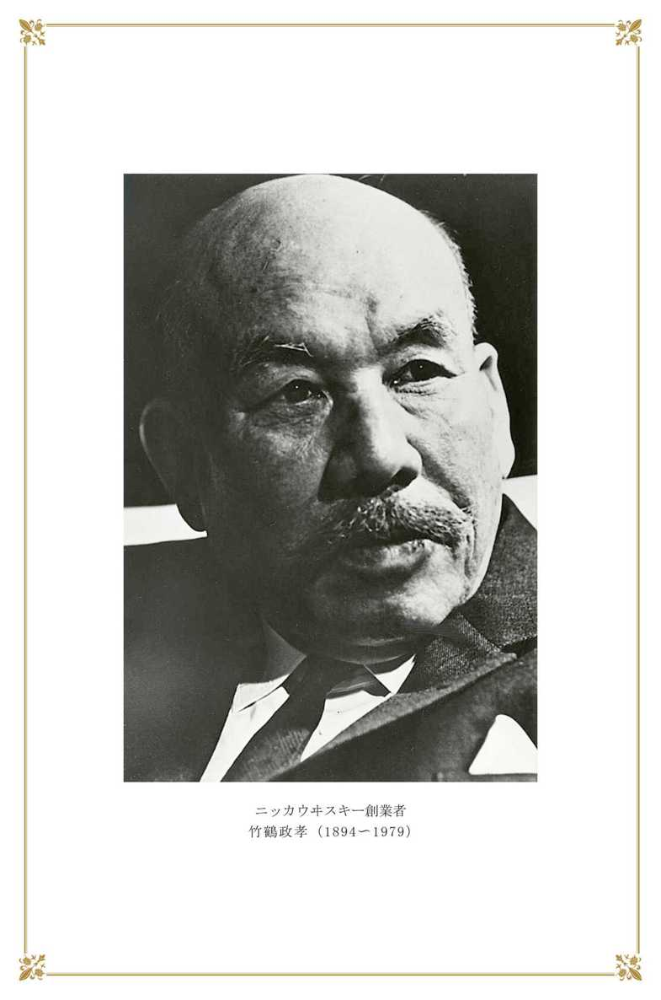
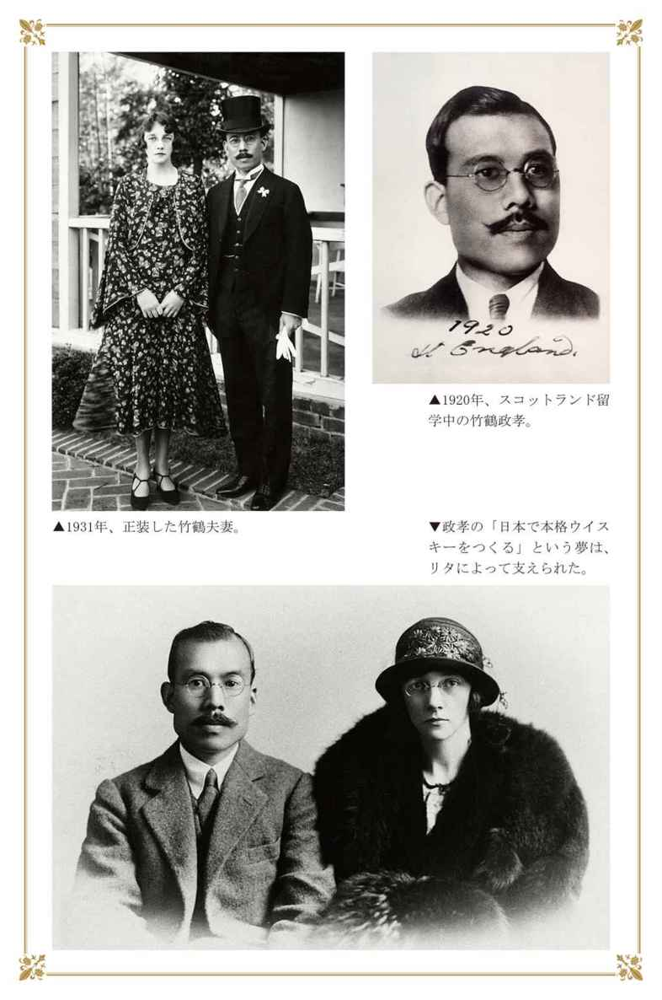
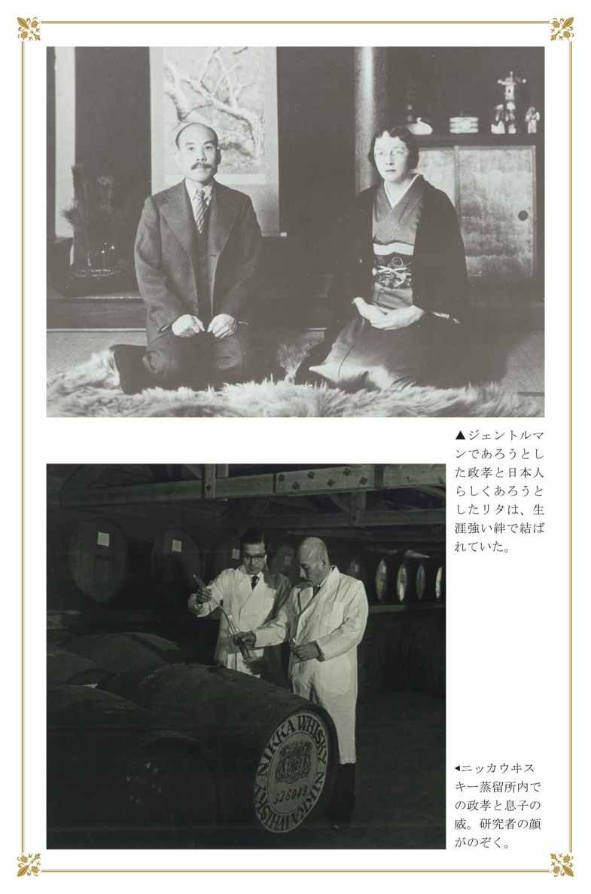
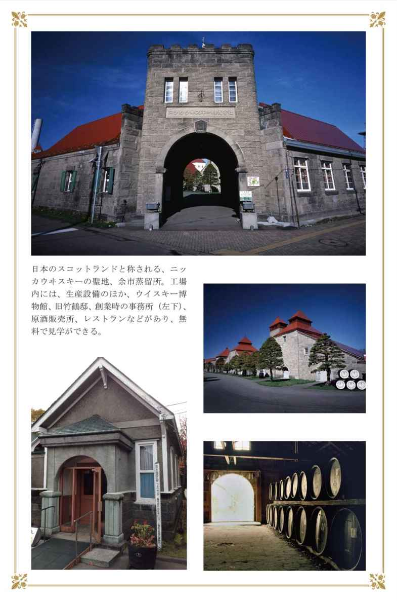
ウイスキーと私 目 次
宿命的なウイスキー人生（多くの人々の助力で）
生家はつくり酒屋（物心ついたときから酒の世界）
小学校で鼻を大ケガ（池田元首相をしごいた中学の寮）
二人の兄がきらった醸造科に入学（洋酒に興味持ち〝押しかけ就職〟）
はじめての洋酒づくり（鳥井さんとも知り合う）
ウイスキーの勉強に英国へ（反対の両親を社長が口説く）
米国で、ぶどう酒と英語の勉強（仏・伊と違う大量生産方式）
軍用船で大西洋を渡る（グラスゴー大学に入学）
ウイリアム教授の尽力で（スコッチ・ウイスキー工場で実習）
原酒づくりに体当たり（素朴で親切な人たち）
不安と責任感が重なり（オーロラの輝く北の夜空に泣く）
異郷で芽ばえた愛（Ｘマスの占いが〝将来〟を予見）
湖畔で誓い合った〝将来〟（二人の愛を知らず義父は急逝）
ブレンダーとしての特訓（修業の仕上げ）
国際結婚にお家断絶騒ぎ（社長奔走、わざわざ英国へ）
祝福されて英国で結婚式（新婚旅行を兼ね帰国）
四年ぶりに日本の土を踏む（ウイスキー醸造計画役員会で否認）
本格ウイスキーづくりへ第一歩（三顧の礼にこたえて）
水明の地、山崎を探す（原酒工場建設）
税制改正にお役所通い（ついに「庫出税」認められる）
原酒をもって再び渡英（昭和四年に「白札サントリー」発売）
ビールも手がけた寿屋時代（十二年目に独立のため退職）
北海道余市に待望の原酒工場（昔はアイヌの楽園）
ジュースづくりと原酒づくり（悪戦苦闘の連続）
創立の苦しみの中に原酒は成長（ニッカ第一号発売）
終戦・混乱期のウイスキー（良質品で抵抗）
名コンビできり抜けた経営の危機（丸びん発売と相次ぐ設備投資）
妻リタの急逝（得意だった漬物づくり）
ウイスキー品質競争時代（ウイスキー戦争と人は呼んだが）
北海道で知った熊狩りと釣りとジャンプ（ウイスキーづくりの合間に）
英国の新聞が報じたニッカの脅威（ウイスキーにとりつかれた人生）
竹鶴コラム
随 想
巻末寄稿
本書は、昭和四十七年二月に
ニッカウヰスキー株式会社が発行した
単行本『ウイスキーと私』（非売品）を、
改訂復刻し、新たに巻末寄稿を加えたものです。
協力 アサヒビール株式会社
写真提供 アサヒビール株式会社
装幀 岡 孝治
校正 福田光一
ウイスキーと私
宿命的なウイスキー人生
多くの人々の助力で
明治二十七（一八九四）年六月二十日、私は広島県竹原町（現在竹原市）のつくり酒屋の三男として生まれた。
家業を継ぐため大阪高等工業（現在の大阪大学）の醸造科に入り、ウイスキーに興味をもってから、ただ一筋にウイスキーづくりだけに生きてきた。
その意味では一行の履歴でかたづく男である。
これまで日経から「私の履歴書」を書けとたびたびすすめられたが、辞退してきたのも、それ以外にとり柄がなく、私などの出る幕ではないと思っていたからである。しかし、何度も人にすすめられて考えてみると、死んでしまってからでは記録もできなくなる。そこで自慢話にならないよう、事実だけをごく簡単にかいつまんで、ウイスキーづくりの体験をお話しすることにした。
いま、英国以外の国でスコッチ・スタイル（Scotch Style）のウイスキーができるのは日本だけで、私はそのウイスキーづくりを最初に英国に行って学んで来た男である。
履歴といえばたったこれだけのことであるが、これだけのことでも今までに五十年以上もかかっており、まだこれで満足というところまで到達していない。
しかし、ともかく、これまでになるのには大勢の方に、ひとかたならずお世話になってきた。
世界的にウイスキー愛好時代を迎えた今日、もし私が日本のウイスキー誕生に幾ばくかの貢献をしたといって下さる人がいるとすれば、それは私に力を貸して下さり、激励をおしまれなかった人々の賜物である。私はこの「本」を通じてその事実を知っていただければと思う。
私は宿命論者ではないが、人生と運命の関係には二つの型があるのではないかと思う。
一つは自分の運命に挑戦して生きていくにしても、ほとんど自分の力で、そのとびらを切り開いていく型と、もう一つは周囲の人の好意や協力で、自分の進む機会が与えられ、とびらの方から、おのずと開いていってくれる型であり、私はどちらかというと後者の方に属しよう。
私にとって、そのとびらは実にたくさんあった。
たとえば二人の兄たちが家業を継ぐのを、いやがらなかったら、弟の私が醸造学を修めることはなかったと思う。
また摂津酒造の阿部喜兵衛社長（故人）が日本での本格ウイスキーづくりを決意されなかったら、どんなに私がウイスキーづくりに興味をもっていたにせよスコットランド（Scotland）に留学するということはありえなかった。
英国ではグラスゴー大学のウイリアム博士（１）やイネー博士、グラント工場長その他の協力がなかったら、ウイスキーづくりを覚えられなかったのはもちろん、本場の原酒（Malt Whisky）工場に一歩も入れなかったに違いない。
さらに時代を考えても当時日英同盟という政治的背景がなかったら、はたしてスコッチの工場が私を見習い技師として実習を許可してくれたかどうか、はなはだ疑問である。
寿屋（サントリーの前身）の鳥井信治郎社長（故人）が洋酒の将来性を確信して、ウイスキーづくりに金は出すから君にまかせる、といわれてつくった山崎の工場がなかったら、はたして日本は今日のようなウイスキーができる国になっていただろうか。
そしてまた私が寿屋から独立して今の会社を創立するときには、英国留学時代からお世話になっていた柳沢伯爵と隣人の芝川又四郎氏、加賀正太郎氏の絶大な協力があった。
さらに私の念願だったカフェ・グレーン（Coffey Grain）を日本で初めてつくるときには山本為三郎氏（故人・朝日麦酒（２）社長）の積極的な援助があった。
こうして考えてみると、私はウイスキーづくりに精進できたのは、皆さんの協力が運命のとびらを次々とあけていって、おのずと私をこの道一本に導いてくれたといっても過言でないのである。
生家はつくり酒屋
物心ついたときから酒の世界
さて、私の生まれた広島県竹原町は幕末や明治の青年を鼓舞した「日本外史」の著者、頼山陽の生まれた地であり、頼家は山陽の父春水、春水の弟の春風、杏坪、さらにさかのぼって春水の父惟清など秀才ぞろいのうえロマンチストが多かった。瀬戸内海に面した竹原の町がそうさせるのか、私もロマンチストだった。
竹原は尾道と呉の中間にあって、三方が山で囲まれ、南は内海に面しており、その海に大小さまざまな島が横たわっている天然の景勝地である。
また大和奈良時代の弥生式文化の跡や古墳があり、江戸時代には、頼家や唐崎家を中心に文教の盛んな所として天下にその名が知られていた。
この町は当時の文人たちから〝安芸の京都〟と呼ばれただけあって、古い家並みが続き、しっとりした感じが、私の子供時代まではまだ残っていた。
江戸時代は、酒と塩の産地としても有名であった。酒は、寛永十一（一六三四）年からの歴史をもち、今でも十軒の醸造元が残っている。塩は慶安三（一六五〇）年播州赤穂から技術を導入して始めたが、一時は赤穂の塩とともに全国に販路をもった。
私の家は海岸に近く、成井川のほとりにあった。本家は、享保の時代から続いている酒屋であるが、私の方は祖母の代からの分家であった。
〝竹鶴〟は私の姓であるとともに〝竹鶴〟という名の酒を私の家から出していた。酒の名前とその蔵元の名前が同じというのは、数多い全国の酒屋の中で〝竹鶴〟ただ一つであった。祖母の話によると、明治維新で姓を受けるとき役場が酒の名と気づかないで本名にしてしまったからだそうである。
父の名は敬次郎、母の名はチョウといい〝竹鶴〟〝春心〟という酒を出すかたわら、塩田をつくったり、製糸業を営んだりして、活動的で、体の丈夫な両親であった。
父は「酒は、つくる人の心が移るもんじゃ」と、口ぐせのようによくいっていた。また「酒は、一度死んだ米を、また生き返らせてつくるのだ」ともいっていた。
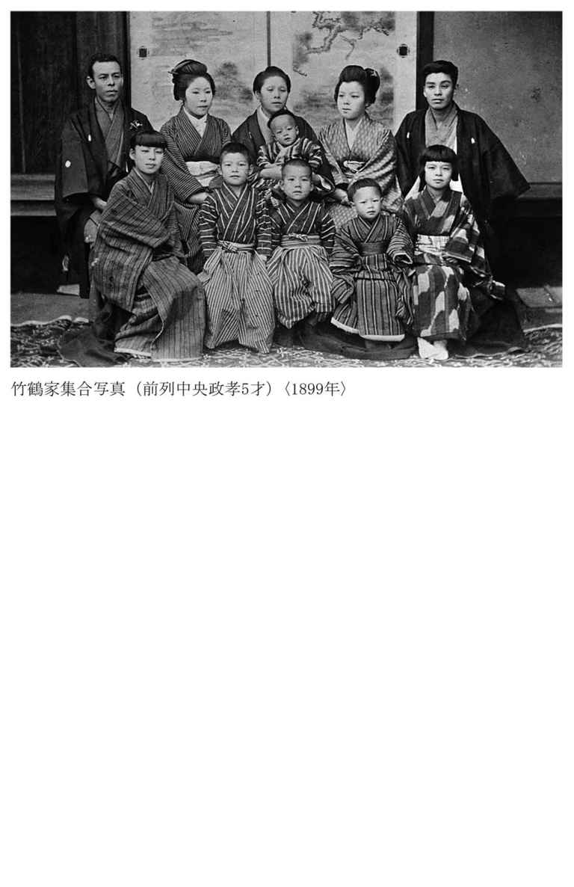
酒づくりを中心にした幼いころの思い出はたくさん残っている。
毎年十月も終わりに近づくと、酒米がどんどん運ばれて来て俵の山ができあがる。そして近郷の蔵人たちが集まると、家の中は火のついたように活気にあふれた。
経験を積んだ酒づくりを、杜氏といい、ベテランの杜氏はその下で働く蔵人たちから〝おやじ〟と呼ばれていた。
私は麴部屋の中で、〝麴かび〟が繁殖するときや、仕込み樽の中で、アワがわき上がる光景を見ると、生き返らすという父のことばがまず頭に浮かんで、秘境の中で魔法を見ているような気持ちになったものである。
一日前に研いで冷やして水を切った米は、こしき（ふかし）に入れられ、大釜にのせられて蒸される。この蒸し加減を調べるために、蒸し米は杜氏の手のひらで、ひねるようにつぶされ、みるみるうちに小さな餅ができる。この餅は〝ひねりもち〟と呼ばれ、焼いて食べると香気があっておいしかった。
その年初めての酒が、酒袋からしぼり出されると、杜氏や蔵人、それに親類の人たちを集めて〝新酒のたち〟の祝いの儀式をした。夜蠟燭を燭台に立ててやる、この祭りを子供のときは指折り数えて待った。
春になると、仕込みに使われた樽や、酒粕をとった酒袋をかわかすために、酒蔵の前の広場は占領される。私たち子供はまだ酒のにおいの残る樽のかげで、よくカクレンボをした。
このように、物心がついたときには、すでに酒の世界が私を包んでいた。
父の酒づくりの態度はきびしかった。神聖な気持ちとからだで、酒づくりにぶつかっていた。
日本酒の酒蔵は女人禁制であり、酒づくりの期間は、働く人は全部、禁欲が常識となっている。
これも酒づくりはよい酵母菌を選び育てて、よい蔵ぐせを持続しなければだめだからで、一度まずくなると伝統的にまずくなり、悪いくせは、なかなか直らないことからきたものであろう。今から思うと、酒づくりのきびしさは、いつのまにか父を通して、私の血や肉になっていたようである。
小学校で鼻を大ケガ
池田元首相をしごいた中学の寮
小学校は、私の家の向かい岸にあった竹原小学校に通学した。橋がおよそ五百メートルも上流にあったのと、兄弟姉妹が多かったので、自分の家から舟を出してもらって渡った。帰りは向こう岸の堤の桜の木の下に待ち合わせ、全員そろったとき、川をへだてたわが家に大声で叫ぶのである。
「オーイ帰るよう」
その声を合図に、迎えの舟が出る。のどかなものであった。
その舟の船頭役は関取であった。昔は草相撲が盛んで、地方地方に大関もおれば小結もおり、場所が開かれ、それで位が上下していた。その関取を一人、家でかかえていた。彼が舟の係も兼ねていたのだった。
私は相当のあばれん坊だったようで、少年ワンパク時代の生傷の跡は、いまでも方ぼうに残っている。なかでも八歳のとき、二階の階段から転がり落ちて鼻を強打し、失神したときはすさまじかったらしい。一面が血だらけになり、七針も縫った。命は助かったが母はいく晩も寝ずに看病してくれた。このケガで大きい鼻がさらに大きくなった。ところが鼻がよく通るというのか、人が感じない〝におい〟を感じるようになり、のちに酒類の芳香を人一倍きき分けられるようになったのも、このケガのあとからであるから、人生というものは不思議なものである。
十歳のとき、日露戦争が始まった。日本海海戦のためロシアのバルチック艦隊が九州のすぐそばに近づいていると聞いて、息苦しいほど緊張したことを覚えている。
中学は竹原にはなく、今は竹原市に合併された忠海の中学校に入った。当時の忠海中学（３）の制服は、海軍の水兵服と同じ型、赤・黄・みどり・青の胸のリボンの色で各学年を表わしていた。そして江田島が近いせいか、海軍兵学校に入る生徒も多かった。
中学には二里（約八キロ）の道を仲間といっしょに通った。子供の足で毎日往復四時間の道のりはさすがに疲れた。前の晩に朝飯、昼飯の二食分の弁当をつくってもらって、朝家を出ると途中の峠で兄といっしょに朝飯の弁当を食べるのである。
家で食事をしないのは朝が早すぎて女中がたいへんだという母の心づかいからだった。二学期になると、私の過労を心配した母が、学校と家との中間ほどの福田という村に一軒家を借り、私と兄は二人で自炊生活を始めた。
自炊となると大変だった。おかず類は、日曜日に実家から大量に仕入れるとしても、毎日毎日めしをたかねばならぬ。
そこで、兄と一日交代の炊事当番ということにした。御飯を一日八合ずつたき、頭をひねって献立をたてた。季節の野菜をふんだんにとり入れ、あとは海へ行って魚をとらえ、料理した。
忠海の遠浅の海で泳いでいるタコをとった楽しい思い出は、当時めんどうくさかったランプ掃除とともに胸にきざまれている。
一年の自炊生活の後、兄が卒業してしまったので、私は忠海中学のそばの下宿に移った。
兄と二人の福田村での生活が、私の人間形成というと大げさだが、自然の新鮮な味を愛するという私の味覚、自分で料理するという習慣をつくりあげたといってよい。
三年生から寮に入った。昔の中学の上下の規律は軍隊に近いきびしいもので、寮はその縮図でもあった。下級生は上級生の身の回りの世話係でもあった。その下級生の中に元首相の池田勇人氏がいて、私の蒲団のあげおろしをしてくれていたのもなつかしい。
池田さんの感想では「竹刀をもって部屋を見回りに来る寮長の竹鶴さんは柔道でもならしており、こわいという感じだった」そうである。
大蔵省から政界に進んだ池田さんとウイスキーづくりに専念した私の友情は、なくなられるまで続いた。池田さんは私のつくったウイスキーのファンでもあり、池田さんからニッカをすすめられたり、もらったりした人も多いと聞いている。
また外国の高官が日本にきたときは、ニッカのスーパーを自慢げに飲ませるのが池田さんの楽しみの一つであった。
英国のヒューム副首相が来日したとき、「五十年前、頭のよい日本の青年がやってきて、一本の万年筆とノートで、英国のドル箱のウイスキーづくりの秘密を盗んでいった」と池田さんにいった話は一時有名になった。
ＩＭＦの総会のとき、各国の代表者など三千人のパーティがあったときも、「こんな国際的なパーティには、スコッチは一本も使うな」と命令し、国産ウイスキーを指定したのも池田さんだった。
忘れられない友情はまだある。
イギリスのギルビー・ジンとニッカが提携したとき、発表のパーティをサーの称号をもつアーサー・ギルビーが来日してホテル・オークラで行ったのが昭和三十八（一九六三）年十月二十一日。たまたま総選挙の投票日で非常に忙しい日にも拘らず、池田さんはわざわざ選挙本部を抜け出して出席してくれた。
彼は実に義理堅い男だった。
池田さんが病気になったとき、私は北海道余市の自宅でつくっている自慢のトウモロコシを自分で切ったり、馬齢薯を掘らして、その中からさらに自分で選んで、祈るような気持ちで届けたりしたが、残念ながらその池田さんはもういない。
そして、ともにした寮生活も遠い昔のことになってしまった。
二人の兄がきらった醸造科に入学
洋酒に興味持ち〝押しかけ就職〟
この時代の青年の夢は大きかった。だから上の兄は、早稲田の商科を出て従兄弟と二人でシンガポールに行き、ゴムの栽培を試みていた。次の兄もまた酒屋をきらった。忠海中から六高に進み、九大工学部を出て、北海道炭礦汽船に入社し、北海道へ渡ってしまった。
結局、家業を継ぐのは、私しかいなくなった。
学校でも理科は得意だったから、両親はますます私に期待した。私は酒屋という古めかしい商売には抵抗を感じながらも学問的な興味も手伝って、大阪高等工業（現在の大阪大学）の醸造科を受験して入学した。
醸造学を修める学校はここ一つしかなかった大正二（一九一三）年のことである。
学問の方は、醸造学の権威坪井仙太郎博士に心酔した。坪井博士は活力素の創造などを通じて、醸造界に画期的貢献をされ、人格者としても魅力があり、のち昭和六（一九三一）年には、博士の徳を慕った卒業生と業界の人たちの手で、学校内に坪井記念館ができたほどである。
運動は柔道部に籍をおいて活躍した。対外試合も多く、そのいちばんのライバルは大阪府立医科大学であった。この学校と私たちの大阪高工とが一緒になり、後に大阪帝国大学として発足したのである。
大正五（一九一六）年、卒業の年の正月のことであった。
郷里に帰り、部屋のコタツでねそべっていた。家業を継ぐことになった私はこのとき、これからの長い人生を竹原という田舎町で、酒づくりに終わってしまうのかという感傷が胸をかすめた。
醸造科の同窓には酒屋出身が多かったが、四月に卒業して実家に帰り、その年の十二月に一年志願で兵隊に行って除隊後、家業を継ぐというのがお定まりのコースであった。
当時の私はからだは柔道で鍛えていたので、頑強そのものであった。十二月の徴兵はまず間違いない。日本酒の仕込みは冬だから卒業の四月末から十二月までは、仕事はあまりない。学校で人一倍洋酒に興味をもって勉強をしてきた私は、この期間だけでもいいから洋酒づくりの仕事を一度実際にやってみたいと思い立った。
「やってみたい」そう思い始めると矢も楯もたまらなくなった。
当時、洋酒のメーカーの第一人者は、大阪の住吉にあった摂津酒造であった。調べてみると、摂津酒造には大阪高工醸造科の第一期の方で、岩井喜一郎氏が常務をされており、十四期の私まで醸造科からは、だれも入っていないことがわかった。そこで、岩井さんに会って頼んでみようと決心した。そして学校の試験の終わったその足で大江橋から電車に乗って岩井さんをたずねた。
岩井さんは黙って聞いておられたが、すぐ阿部喜兵衛社長の部屋に私を連れて行かれた。
私は阿部社長に、十二月には徴兵検査があること、兵隊から帰ったら郷里に帰らねばならない身であることなど、私の家の事情と希望をありのまま話した。すると阿部社長から、「それでは、あすからでも出社しなさい」と入社を許された。阿部社長は私の青年らしい、とっぴな申し入れがすっかり気に入ったと、あとから人に話されたそうである。
卒業前のことだから今でいう青田買いであるが、私のは〝押しかけ青田売り〟であった。
こうして、三月初めからあこがれの洋酒づくりに従事することができ、四月末の卒業式には背広姿で出席して同僚を大いにうらやましがらせた。
日本の洋酒は、その当時から昭和初期まで、ぶどう酒を除いて全部イミテーションであった。ウイスキーも文明開化とともに入っては来たが、国内では安政五（一八五八）年の日米修好通商条約で、アルコールが安く輸入できたため、薬種問屋の手で調合され、もうかる商品として次第に量が多くなった。
しかし、明治三十二（一八九九）年の条約改正とともに輸入税が上がり、さらに明治三十四（一九〇一）年には清酒保護の立場から改正酒税法、酒精及酒精含有飲料法が公布されるにおよんで模造洋酒の採算は悪くなったので、薬種問屋もつぎつぎ手をひきはじめた。
一方、明治後期になって政府はアルコール製造を奨励したから、製法も進み、洋酒の製造は大規模なアルコール業者の手に次第に移っていった。
はじめての洋酒づくり
鳥井さんとも知り合う
学校を出て初めての仕事は楽しかった。イミテーションとはいえ洋酒づくりに無我夢中になった。
職工さんと同じ作業服を着て動き回り、ロンドンのブッシュ・カンパニー（W. J. Bush Co., Ltd.）から出ていた〝レシピ〟（Recipe）を参考にしながら、今までと少し違う調合を試みたりして研究を続けた。
冬の夜、おそくなると家に帰らないで、アルコールをつくる蒸留塔のそばが暖かいので、その上でよく寝たものだった。
入社まもないころだったせいもあって、藤田という摂津酒造の蒸留のベテランから「お前には、まだ早い」「学校出になにができるか」とうるさがられるほど、なんでも吸収しようという精神が盛んだった。それだけに阿部社長や、先輩の岩井さんからたいへん信頼され、入社まもないのに洋酒関係の主任に抜擢された。
当時わが国の代表的なアルコール蒸留業者といえば摂津酒造のほかには神谷酒造、大日本製薬などがあった。
摂津酒造は明治四十（一九〇七）年からアルコール製造を始め、四十四年にはそのアルコールを原料にしたイミテーション・ウイスキーをつくった会社であるが、岩井さんたちの努力と研究の結果、アルコールの〝におい〟の悪さを除く装置であるフーゼルオイル・セパレーターのよいのができていたため、品質には定評があった。
私が摂津酒造にいたころのおもなお得意は、小西儀助商店、寿屋、外山商店、越後屋などで、摂津酒造ではそれぞれの店の商品の委託を受けて洋酒をつくっていた。
鳥居のマークで売られていた〝赤門ぶどう酒〟は小西儀助商店、〝ヘルメス・ウイスキー〟〝赤玉ポートワイン〟は寿屋から出ていたが、いずれも中身の製造は摂津酒造でやっていた。
それぞれの店の注文に応じて、ウイスキー、ぶどう酒、リキュールをつくり、一石（約百八十リットル）入る洋樽につめて工場を出す、これが私の仕事であった。ウイスキーはイミテーションであったが、ぶどう酒はフランスから生ぶどう酒を輸入し、アルコール、砂糖などを加えて日本人に向くようにつくりかえるのである。その最高のものには五十パーセントくらい輸入の生ぶどう酒を使っていた。
鳥井信治郎さん（サントリーの前身、寿屋の創立者）と知り合ったのは、このころである。なかなか商売と広告に熱心な偉い人と聞かされていた。鳥井さんは小西儀助商店の出身である。
小西儀助という人は大阪道修町の薬種問屋で、明治十（一八七七）年関西ではいちばん早く、ぶどう酒を初め、イミテーションのリキュールやブランデーをつくり始めた人であった。この人のもとで鳥井さんは、ぶどう酒のことを勉強され、その後、独立されたのである。
私の摂津酒造時代の鳥井さんは、南の住吉町の自宅にびん詰め工場をもち、いそがしいときにはクニ夫人も手伝っておられた。
私が摂津酒造で赤玉ポートワインをつくっていた年に、夏の暑さから、ぶどう酒が店頭で爆発して大さわぎをする事件があちこちで起こったが、赤玉ポートワインは一本も割れなかった。爆発の原因は殺菌が不充分のため生き残っていた酵母が暑さのため醱酵作用を起こしたためであった。この事件で赤玉ポートワインの人気が次第に出てきた。
こんなこともあって、鳥井さんはこんど入った技師はなかなかいいと阿部社長と話し合われたそうである。これがきっかけとなり、鳥井さんは私がスコットランドに行くときには、神戸の港まで、わざわざ来ていただいたし、その後、京都の山崎の工場をまかされるなど、私の恩人の一人となられるとともに、日本ウイスキー界の恩人である。
さて当時のウイスキーはイミテーションであったが、ぶどう酒は醸造用ぶどうの栽培から始めるという地味で採算のとれない困難な仕事に一生を賭けた人はたくさんいた。
大黒葡萄酒（オーシャン・ウイスキーの前身（４））の創始者の宮崎光太郎氏をはじめ、小沢善平氏、高野正誠氏、福羽逸人氏、川上善兵衛氏などの貢献は、日本の洋酒界は永くたたえるべきであろう。
なかでも、新潟県の旧家に生まれ、山間の農村の人たちのために、ぶどう酒づくりに私財の一切をなげうって一生を終えた川上善兵衛氏の努力は超人的であったといわれている。
独学で原書を読み、外国から、ぶどう苗を移植し、ぶどう酒づくりだけに一生をささげ、ぶどう酒づくりに成功した。川上氏自身の晩年は恵まれなかったが、ぶどう酒づくりは年ごとに栄えたのである。
ウイスキーの勉強に英国へ
反対の両親を社長が口説く
十二月の徴兵検査の日は、すぐやって来た。検査は大阪で受けた。今でも体は頑丈だが、若いときはそれこそ筋肉隆々で、体にだけは自信があった。
検査官は中尉で、諸検査が終わって私が検査官の前に直立すると、〝甲種〟の印をもち上げかけて、ちょっと止め、左手で書類をひっくり返した。そして私が摂津酒造の技師でアルコール製造に従事していることに気づいたらしく、「アルコールは火薬をつくるのに、ぜひ必要だ、がんばるように」こういって、印をもちかえ、私は乙種をいいわたされたのである。
ちょうど第一次世界大戦のさなかで、日本も参戦し、ドイツ領の青島や南洋群島を占領した時代であったが、兵力はほとんど使わなかった。
アルコールは火薬製造に欠くべからざるものであり、私は軍需産業の一端をになっているとでも考えたのであろう。
さらに当時は軍備縮小の時代で、兵隊がありあまっていた。
農村から集まる兵隊で十分だったから、無理に私のような専門技師をとらなくともよかったのである。
会社に帰って、このいきさつを話すと、阿部社長はたいへん喜ばれた。
しばらくしたある日、社長室に呼ばれた。阿部社長はこういわれた。
「竹鶴君、君はスコットランドに行ってモルト・ウイスキーを勉強してくる気はないか。わが社のウイスキーは今は売れているが、いつまでもイミテーションの時代ではないし、品質にも限界がある。君にその意思があれば本場の英国に留学してその技術を習得してきてほしいのだが」
突然のこの申し入れに、私は返事もできないくらいであった。
ウイスキーの勉強に、聖地のスコットランドに留学できるという技術者としての喜びと、この若僧を、しかも入社一年足らずの私のことを、そこまで信頼して下さるのかという人間としての感動、その二つが交錯して、つきささるような感激が私を襲ったのである。
さてそれからが大変であった。
郷里竹原の父母は、そのことを知ってかえって非常に落胆し、容易に賛成してはもらえなかった。
「わしも年じゃけんのう。政孝が帰って来るのを楽しみに今まで酒をつくってきたのに！」
父のこのことばが、私にはいちばんこたえた。
私には喜びと感激が、父母にとっては、悲しみと落胆なのであった。
すると阿部社長は、大阪からわざわざ出かけていって、広島の私の両親を口説いて下さった。最後まで反対を続けた父も、阿部社長の熱意に打たれた母のことばでついに折れてくれた。
そして家業のほうは、やむなく親類の酒屋にゆずることにした。
摂津酒造の私のあとがまには、大阪高等工業から二名入社が決定した。その一人、永井君は、私と同じ広島の出身で神主のむすこという醸造科では変わり種であった。
これで、全部の手はずが、ととのったので、英国へは、できるだけ早く出発することになった。
当時の好況ぶりは、世界大戦のおかげで大変なもので、輸出はどんどんふえ、輸入は殆んどふえなかったから、日本のもうけはすばらしかった。歩が金になるいわゆる〝成り金時代〟であった。
そのため洋酒はよく売れた。特に大正七（一九一八）年から九（一九二〇）年にかけては、摂津酒造の黄金時代であった。スコットランドでの私の留学費と、日本に残った永井君たちの賞与の額が、ほぼ同じになったほどの好景気で、今の人には信じられないような時代であった。
池田さんが総理になったとき、広島県人会の集まりで永井君と久しぶりに会ったが、永井君はこの当時のことを思い出して、
「同じ金額を、あなたはウイスキーの勉強に、われわれは、住吉公園の料亭につぎこんだことになるなあ」
といったので二人で大笑いした。
出発は、大正七年の七月初め、神戸港から東洋汽船の天洋丸に乗り込んだ。
壮行ののぼりを立てて、阿部社長、私の両親を初め大変な見送りであったが、その見送りのなかには寿屋の鳥井信治郎さん、日本製壜の山本為三郎さんがおられた。
その後、日本の醸造界で、大活躍されたお二人に見送られてウイスキーづくりの勉強に船出したことは、まことに奇しき因縁といえよう。
米国で、ぶどう酒と英語の勉強
仏・伊と違う大量生産方式
英国へはアメリカ経由で行ったので、まず上陸したのはサンフランシスコである。私は初めて見る外国の町のメイン・ストリートの建物や、商店の豪華なのにびっくりした。
日本からもって行ったドル札で買い物をすると、ピカピカの金貨が、おつりでどっとくる。次の買い物も、めんどうなのでドル札を出す。また金貨のおつりがくるので、たちまちポケットがいっぱいになり、その金貨の重さで歩くのに困ったほどであった。一ドル二円、一ポンド八円の時代であり、この町で、たしかワイシャツを九十セントで買った思い出がある。
今では、サンフランシスコの町に驚くような日本の旅行者はいないであろうが、大正中期の日本の町と、外国の町とではそれほど差があった。
サンフランシスコでは、中学の先輩、高井誠吾氏のお世話になった。私が米国経由で英国に渡ったのも、この人のすすめがあったからで、というのもサクラメント（Sacramento）にある、ぶどう酒工場を見学するためであった。
高井さんはアメリカで、いちご栽培に成功され、日本に帰られたとき、奥さんと二人で摂津酒造までたずねていただいた。
「竹鶴君がイギリスに行くそうだが、アメリカ経由にして、サクラメントの、ぶどう酒工場を見たらどうだ。経営者が知人なので、どんな無理でも頼める」
この親切なアドバイスに阿部社長も、それがいいと賛成されたからであった。
サンフランシスコからサクラメントの工場までは、高井さんの自動車でいった。この一帯、ストックトン（Stockton）、フレスノ（Fresno）は、アメリカでも有名な、ぶどうの産地である。その工場は、カリフォルニア・ワインネリー（California Winery）という会社で、バンク・オブ・アメリカの創立者のジアニニ家（イタリア系）が経営して、生ぶどう酒をつくっていた。
大広間ほどもあるタイルづくりのタンクに、ぶどうをしぼり入れ醱酵させる非常に大仕掛けな製法であった。昼はこの工場、夜は先生について英会話の勉強をしばらく続けた。
それはあとで勉強して歩いた本場のフランス、イタリアの手づくりに近い、ぶどう酒づくりとは、全く対照的な製法であった。
ウイスキーでもそうだが、よい酒をつくるためには、規模や設備では解決できないものがある。熟成をじっくり辛抱して待つ精神や気質がないと決してよいものはできない、というのが私の酒づくりの哲学のひとつであるが、それをあとになって知ることができたという意味で、カリフォルニア・ワインの勉強は役立ったといえる。
アメリカ人はよい酒をつくる国民性に、どうも欠けているように私には思えてならない。
私がサクラメントで勉強しているちょうどそのころ、日本では有名な米騒動が起こっていた。
サクラメントの生活に別れをつげ、汽車でロッキー山脈を越えてニューヨークに出たとき、私のほかもう一人日本人が乗っていた。米騒動で犠牲になられた神戸の鈴木商店の長男のかたで、その汽車のなかで日本からの「スグカエレ」の電報を受取られたのは気の毒であった。
ニューヨークに着くと、すぐイギリス行きのパスポートと乗船の手続きをとった。ところが、困ったことにいつまでたっても許可がおりない。
第一次大戦のさなかで、アメリカはドイツ潜水艦にやられながら兵隊や物資をヨーロッパの連合国に送るのに、やっきになっていたときだけに、一外国人のパスポートなど、かまっておられないのが実情だったのだろう。
これを見ていた下宿のオヤジさんは、おもしろいアメリカ人であったが、私をつかまえて、
「大統領のウイルソンに電報で文句をいえ」
と入れ知恵をしてくれた。そんなことができるのかとびっくりしたが、彼は
「大丈夫だ、やってみろ」
という。
そこで私は半信半疑ながら大統領あてに
「なぜ私のパスポートを査証しないのか、イギリスに行けなくて困っている」
という電報を打った。
すると、驚いたことにはその翌日、移民局から呼び出され、ビザと乗船の手続きがその場ですんでしまった。アメリカはなんとおもしろい国だろうかと、このときはつくづく感心した。
軍用船で大西洋を渡る
グラスゴー大学に入学
私の乗ったオルドナ号の乗客といえばヨーロッパの戦場にゆく兵隊が大半で、そのほかに民間人が若干おり、女や子供までいた。そしてドイツの潜水艦にやられたときの避難訓練を続けながら、大西洋の航行を続けた。
ところが、あすは待ちに待った英国のリバプール港に着くという前の日の深夜のことであった。
ほとんどの人は寝ていたと思うが、私は母に手紙を書いていた。そのとき、ドーンという大音響と同時に私は部屋の端から端まで投げとばされていた。柔道の受け身で立ち上がると同時に「潜水艦にやられたな」と思った。
救命具を取ると甲板にかけ上がった。乗客のなかでは私がいちばん早い。すると、すぐ目の前で、夜空を背景に船首をもち上げるような形で一隻の船がズブズブと沈んでいった。イギリスの貨物船コナクリ号の最期であった。
潜水艦攻撃を避けるために、コナクリ号と私の乗ったオルドナ号は両方とも、ジグザグ航進しているうちに、オルドナ号が誤ってコナクリ号のどてっ腹に衝突してしまったのである。
アッという間の出来事であったが、この海難でコナクリ号の生存者は、たった一名しかいなかった。それも甲板で仕事をしているとき、ぶつかった反動で、こちらの船上に投げとばされたという奇跡的な助かり方であった。
翌朝、オルドナ号の乗客全員が食堂に集まると、乗客の一人、当時のベルギー皇太子の提案によって、コナクリ号の死んだ人たちのために義捐金を集めることになった。
その金集め係に指名されたのが私で、理由は私がいちばん若いということからだった。金を集めて届けると、皇太子から感謝のことばとサインのはいった感謝状をいただいた。
かくしてオルドナ号は、救助に来た駆逐艦に守られて、予定よりおくれてリバプールに着いた。
私は待望のイギリスの土を無事に踏んだ喜びと、はるけくも来つるものかなという思いで、マージ河口の長い桟橋を一歩一歩踏みしめた。
リバプールでは私の英語がよく通じ、相手のことばがよくわかるのが何よりうれしかった。アメリカの訛りのあることばに悩まされ、苦労したあとだけに、自信を少し取り戻した思いであった。
日本をたつとき、エジンバラ大学かグラスゴー大学のどちらかに、入ればよいだろうぐらいの知識しかもっていなかったので、まず、リバプールからエジンバラに汽車で向かった。
エジンバラは、市内の岩山のうえにエジンバラ城がそびえ、プリンセス・ストリートを初め市街の美しさはヨーロッパ一といわれるだけに、夢のなかにいるような感じであった。
町を一歩はなれると羊の群れがあり、その先に北海に続くフォース湾が大きくひろがっていた。
エジンバラ大学はヨーロッパでは最古の学校の一つであり、医学、文学、宗教などが有名だが、理学ではウイスキー研究に適当な専攻科がなく、グラスゴー大学の方がよいことがわかった。
グラスゴーは京都のようなエジンバラとは反対に神戸のような感じの町で、港近くには大きな造船所が集まっている工業貿易都市である。
その市の真ん中の小高いところにそびえ立つ感じで大学があった。私は英文でつくってもらっていた大阪高工の卒業証書を出し、応用化学科に入学を申し込むと外国人の聴講生という形ですぐ許可になった。
グラスゴー大学の講義そのものは、すでに日本で勉強したことの繰り返しであったが、英語の勉強にはなった。
ここでの目に見えた収穫は二つあったと思う。
その一つは大学の図書館に、ウイスキー関係の文献がたくさんあることであった。だから図書館にはよく通った。そして、今思うとわれながらよく読み、よく勉強もした。
もう一つは、応用化学科の看板教授ウイリアム博士と知り合えたことである。ウイリアム博士と私の最初の会話は、先生が教室で学生の名簿に目を通され、私を見たときのことだった。
「Mr. Taketsuru, are you Spanish?」
「No I am not, I am Japanese.」
先生は私をスペイン人かと思われたらしいが、日本人と聞いて驚かれた様子であった。そのとき以来、妙に私に関心をもって話しかけてくださるようになり、私も日本からはるばるやって来た事情をぶちまけた。すると先生は「それは大変なことだが、相談にのって力になるから勉強しなさい」と激励された。
ウイリアム教授の尽力で
スコッチ・ウイスキー工場で実習
ウイリアム教授は、私をスペイン人と間違えられたが、それは私がワシ鼻のせいだったからだろうか、その後もよくスペイン人かときかれた。
当時の英国は日露戦争の勝利、日英同盟などで対日感情はすごくよかったが、日本人の顔を見るのは初めてという人たちばかりであった。
特にウイリアム教授には、いろんな面倒や、親身のお世話をいただいた。今でも大切に使っているネットルトン（J. A. Nettleton）のウイスキーの本は、このころウイリアム博士の推薦で入手し、当時繰り返し読んだ本の一つである。
その本を今見ると、「毎日が苦しい、しかし頑張り耐えねばならぬ」など勉強の間に、われとわが身をはげますための走り書きが日本語でしたためてあるのもなつかしい思い出である。
留学して初めての冬から、ウイスキーの聖地と呼ばれていたローゼスでウイスキー工場の収税官吏の家に下宿し、そこから実習に通うという幸運に恵まれた。これも全部教授の配慮によるものであった。
スコットランドは、ハイランド（Highland）地方とローランド（Lowland）地方の二つに分けて呼ばれる場合が多い。
ハイランドはスコットランドの北半分の総称であるが、ゴルフで有名なセント・アンドリウス（St. Andrews）の少し北のダンディ（Dundee）から、スターリング（Stirling）、ダムバートン（Dumbarton）を結ぶ線が、ハイランド・ラインと呼ばれている。
ところが、ウイスキーの場合には、ハイランド以南でつくられたものであっても、それがハイランド・モルト（原酒）の製法に従ってつくられたウイスキーなら、ハイランドのモルト・ウイスキーとしてブレンダーの間では通用していた。
ただ気候や風土が北の産地にくらべてかなり違うため、モルトも主産地のものとは異なった仕上りをする。ブレンダーたちはそれらを効果的に配合し、さらによいものに仕上げるのである。ハイランドがモルト・ウイスキー（Malt Whisky）の主産地であるのに反し、ローランド地方は、能率のよいグレーン・ウイスキー（Grain Whisky）の主産地となっている。
ハイランドには、いたる所にモルト工場が点在している。
なかでもスペイ川（River Spey）やその支流にある小さな静かな町ローゼス、ダフタウン（Dufftown）、ノッカンドー（Knockando）の一帯には工場が密集している。
私はローゼスではグレンリベット（Glenlivet）蒸留所（５）で、おもに実習をかさね、グレン・グラント（Glen Grant）やグレン・スペイ（Glen Spey）、その奥にあるグレン・ローゼス（Glen Rothes）の蒸留所を見て廻った。
モルト・ウイスキーは、テレビのコマーシャルや雑誌の広告に出ているのでご承知の方も多いと思うが、銅製の下が丸くて大きく、首が次第に細くなってその頂部で〝くの字〟に曲がっている単式蒸留機、すなわちポット・スチル（Pot Still）を使ってつくるのである。
ウイスキーのつくり方をごく簡単にいうと、まず大麦に水分を与える。大麦は水を吸うと、まるまると太り、芽と根を出してみずみずしい精気をあたりいっぱいに発散させる。
約一週間で発芽をとめ、乾燥塔内でピート（Peat・草炭）の煙にいぶされる。ピートの煙は床に刻まれた細いすきまを通り、麦の一粒一粒のシンのそこにまで移り香をしみこませる。
麦はピートの移り香を吸い、ウイスキー独特の香りを早くもここで身につける。
ピートで十分に乾燥した麦を粉にし、湯水を加えて攪拌すると、ジアスターゼ（Diastase）の作用によって、でん粉が麦芽糖という糖分に変身する。
これを濾過し、冷やして酵母を入れると、醱酵によって甘い麦芽糖が辛いアルコールになる。
これを先の昔ながらの素朴で、しかし、優雅な形をした単式蒸留機で繰り返し蒸留すると無色で透明な原酒になる。
これを樽につめて貯蔵すると、その間にコクと色を増し、ウイスキーの原酒になる。
こういうと、いとも簡単にできあがりそうだが、その一つ一つの工程が重要な意味をもっているのでなかなか大変なのである。
それを目で見、肌で感じて実際に自分の手でウイスキーをつくってみる。
それが私の仕事であった。
原酒づくりに体当たり
素朴で親切な人たち
スコットランドのローゼス地方の人たちは、親から子へ、子から孫へと受け継いできたウイスキーづくりの伝統を黙々と守りながら、教会を中心として静かな生活をしていた。素朴で親切な人たちばかりであった。
北の国だけに冬は日が非常に短いかわりに、夏は夜半まで明るい。夜はホテルにあるバーに集まったり、外でグリーン・ボウリングに興じたりするのがこの地方の人たちのせいぜいの娯楽であった。
私は毎日この町から汽車に乗ってグレンリベットの蒸留所に通ったのだが、グレンリベットはスペイ川に合流するアボン川（River Avon）の支流の谷間にある蒸留所で、ローゼスの町の入り口にあるグレン・グラント蒸留所のモルトとともに、品質のよさはスコットランドで一、二を競うといわれていた。
ここをさらに有名にしたのは、創始者のジョージ・スミスである。この地方は、昔はウイスキーの密造者の楽園と呼ばれ、ほとんどの家が、おおっぴらで密造をしていたほどのスマグラー（密造者）の中心地であった。
スコッチ・ウイスキーでは、この密造者たちが大きな役割を果たしているし、この時代が重要な意味をもっているのである。
ウイスキーの味の伝統をつくりあげたのは、密造者たちであった。もし彼等がいなかったら大量生産による酒がつくり出され、いまのようなウイスキーは、なかったことだけは確実であろう。
密造者たちは、ひそかにつくった少量の原酒を樽につめた。長い年月たったものほど、うまくなることも知った。彼らのつくったものが、イングランド地方で欲しがられるということを知り、隊をくんで山々を越えて、南部にウイスキーを運んだのである。
スコッチ・ウイスキーの不法蒸留は、ハイランド地方だけではなく、一七七七年には、エジンバラに四百基の蒸留機があったが、免許をうけていたのは僅かに四基であったという記録が残っている。
一八二四年、ジョージ・スミスが最初に免許を受けて蒸留所を開いたのである。スミスはまず隣人たちの迫害をうけた。
隣人たちは、スミスの蒸留所を焼き払う相談をしていた。スミスは自らも武装するし、三、四人の男をやとい、銃をもたせて数年間は、毎晩交代で見張りに立たせてこの蒸留所を守りながら、よいモルトをつくったと伝えられている。
これら密造者の時代は十九世紀の中ごろまで続くが、密造がスコットランドから完全に姿を消したのは、ハイランドのモルトにカフェ式蒸留機（Coffey Still）によってつくり出されたグレーン・ウイスキーをブレンドした「ブレンデッド・ウイスキー」（Blended Whisky）がイギリスのウイスキーの主流になり、重いモルトだけのウイスキーが飲まれなくなってからのことである。
有名なこの工場も、私がいったときは蒸留機は初留と再留の二基だけで従業員も十名あまりの規模にすぎなかった。
このグレンリベットの当時の工場長はグラント氏であった（６）。
グラント氏は「ウイスキーづくりの勉強はゴルフと同じで、本を読んだだけ、見ただけでは絶対だめだ。からだで覚えるものだ」という主義の持ち主であり、その環境を私にあたえてくださった。
ウイスキー工場にはつきもののパゴダの屋根をした建物の中ではピートの煙でむしながら麦を乾燥させる。このとき木製のシャベルで麦をひっくりかえしながら、まんべんなく乾燥させるのがコツの一つであるが、この仕事は熱さと煙の中で続ける生き地獄のような作業の一つであった。
また蒸留を終えた釜の中で掃除するのも、人のいやがる仕事の一つであった。
しかし、何とかして本格式のウイスキーづくりの方法を身につけて日本に帰りたいと必死になっていた私にとっては、どんな仕事でも新鮮そのものであったから、これらの仕事も進んで買って出た。
この釜の掃除を体験していたおかげで、あとで山崎に初めて工場をつくった際、日本（大阪の渡辺銅工所）で単式蒸留機をつくらせることができたのであった。
このほかにも、このグラント氏の実地体験主義の勉強で、私は蒸留機をたたいて、その反響音で蒸留のぐあいや進み方がわかるようになるなど、今までの学問の世界とは全く反対な経験とカンを養う訓練を続けることができた。
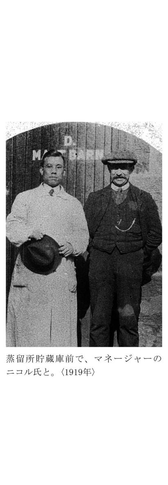
習ったこと、見たこと、感じたことはどんなことでもその日のうちに、ノートに字と絵で書きとめていった。
このノートが、私が帰国後、本格的ウイスキーをつくり始めるとき京都の山崎工場で大活躍してくれたのだった。
グレンリベット蒸留所は、ピートのこげくさい香りを麦に強めにつけるのが特色の一つになっていた。
そのためここの原酒がまだ若いときには、こげくささが、やや鼻につくが、年月とともに熟成し、すばらしい原酒に生まれ変わっていくのである。
グレンリベットの年代ものの原酒が、特に高価で売られているのはこのためであった。
つい先日、スコットランドの知人から、なつかしいだろうとグレンリベットのモルト・ウイスキーを送ってもらった。
今でも実にいい香りで、伝統の強みがそこから、にじみ出ている感じであった。この伝統の香りが実はなかなか出ないのだ。
私はこれ以上の香りを日本でどうしてもつくり出さねばならないと思っている。
不安と責任感が重なり
オーロラの輝く北の夜空に泣く
外国で一人で生活した者にとってだれでも覚えがあるのが、ホームシック症状である。私のホームシックは七、八ヵ月目にやってきた。
当時のスコットランドでは、日本人に出会うことなど全くなく、食生活も日本とは、がらりと変わり、わずかに故郷の香りがする食べものといえば、ふかした馬鈴薯ぐらいだった。
新聞にも日本の記事は全くないといってよく、西園寺公望公爵が第一次世界大戦後のパリ講和条約の日本代表でヨーロッパに来ていることがわかる程度であった。それは日本から遠く隔絶された世界であった。
夜、うとうとしているあいだに涙が出ていて、朝、気がつくと、まくらがグッショリぬれている。そして日本に帰った夢をよく見た。ロンドンから横浜まで、五十日余りかかって日本にやっと帰り着く。母が出てきて「イギリスでの勉強は終わったのか」と私に質問する。返事ができないでいると「そんなことでどうします。すぐ引き返しなさい」としかられる。帰るといっても船がない。どうしようと困って目がさめるという筋書きで、この夢の繰り返しであった。
ローゼスからスペイ川ぞいに海岸に出ると、バレンタイン（Ballantineスコッチ）の蒸留所があるエルギン（Elgin）という町がある。
そのエルギンの町をすぎるとすぐロセマウス（Lossiemouth）という静かな海岸に出る。
私は人一人いないこの海岸にときどき行っては、遠く海のかなたをながめながらたたずんだ。
こんなに苦労して勉強して帰っても、結局日本にはウイスキーづくりのよい環境はないのではないかという焦燥と不安、それにできるだけ早くウイスキーづくりの技術を修得しなければならないという責任感が、ホームシックと重なり合って私は声を出して思いきり泣いた。北海の夜の空にはオーロラが美しく冷たく輝いていた。
ウイスキーの実習の方は周囲の人びとの厚意によって順調に進んだが、ウイスキーのことを知れば知るほどウイスキーには風土や気候、水などの条件が絶対であること、いや風土そのものがウイスキーをつくるというこの地方の思想が次第にわかり始めてきていた。
ウイスキーが自然の条件のもとでゆっくり時間をかけて熟成を続けてゆく様子は、神秘というほかはないのである。
同じ時、同じ方法でつくったものでも、樽によって熟成の度合いは違うし、上段に積んだ樽と下段に置いたものでは、でき方に大きな違いが出る。それほどデリケートに自然の影響を受ける生きものであった。
この地方一帯が世界のウイスキーの聖地であったが、日本でいう小さな田舎町であり、私以外に外国人はだれ一人としていない。私は日本人という珍しさも手伝ったためか、たちまち人気者扱いされ、皆から親切にされた。それはノイローゼ気味だった私にとって唯一のなぐさめでもあった。
私のいたローゼスの町の人たちの食事や着ているものは、つつましやかであったが、人情は豊かであった。ノッカンドーやダフタウンにある蒸留所で働く人たちもローゼスに住んでいて、ぜひ蒸留所を見学にくるようにすすめられた。
行くと大変喜ばれて、その蒸留所の歴史や原酒のよさを誇らしげに聞かされ、秘蔵の十年ものや十二年ものの原酒を飲まされたりした。
ローゼスの町に入るところにあってグレンリベットの蒸留所とともに有名なグレン・グラントの蒸留所や、町なかの小高い丘と丘の間に二つならんであったグレン・スペイ、グレン・ローゼスの蒸留所にはよく顔を出し、従業員同様の扱いをされたほど仲よくなった。
ウイスキーの仕込みや蒸留は、十月から四月までがシーズンで気温の上がる夏は休みである。
これと反対に、フランスやイタリアのぶどう酒は、夏が仕込みの時期であった。
ローゼスには大正七（一九一八）年の十一月から九年の五月までいたが、蒸留の休みの期間はグラスゴーの大学に帰り、八月にはフランスのボルドー（Bordeaux）などに行き、ぶどう酒の勉強をするという渡り鳥のような勉強生活を続けた。最近、ニッカが技術提携をしたリキュール界の名門キューゼニア社（Cusenier S. A.仏）の工場を見て廻ったのもこの時である。
今から思うと自分ながらよく続いたとさえ思うが、それも若かったからであろう。若かったからなんでもアブソーブ（吸収）でき、いちずに集中できたのだと思う。
異郷で芽ばえた愛
Ｘマスの占いが〝将来〟を予見
大正八（一九一九）年六月も終わりに近づいたある日、私の一生にとって忘れ難い大きな運命が待っていた。それはジェシー・リタ・カウンとの出会いである。
私はそのときグレンリベット蒸留所でウイスキーづくりの実習をすませ、グラスゴーに帰ってまた大学に通っていた。
たまたま私とは挨拶をかわす程度の知り合いでしかなかったエラという感じのいい女子学生がいたが、そのエラがある日、自宅のハイティに私を招待してくれた。
エラの父はグラスゴー大学出身の医者で大の親日家であったが、エラから私のことを聞いて呼んでくれたのであった（７）。
イギリス、特にスコットランドでは午後三時ごろ、たくさんのホームケーキと紅茶で軽い食事をする習慣があり、今でも続いているが、それをハイティと呼んでいる。
招待されたその家はグラスゴーの近郊、カーカンテロフ（Kirkintilloch）の町にあった。今でもその町の市役所に使われているほど大きな家であった。
エラの家族は両親のほか姉のリタ、妹のルーシー、弟キャンベル（８）の六人で、そのカウン家の家族に囲まれて私は日本の話や、はるばるスコットランドに勉強しに来た目的などを、問われるままに屈託なく話した。
父親の隣のいすに、大きな、きれいな目で私を見つめていた女性がいた。それがリタだった。私がホームシックで悩まされた話をしたとき、彼女は私に聞きとれないことばを小さくつぶやいた。
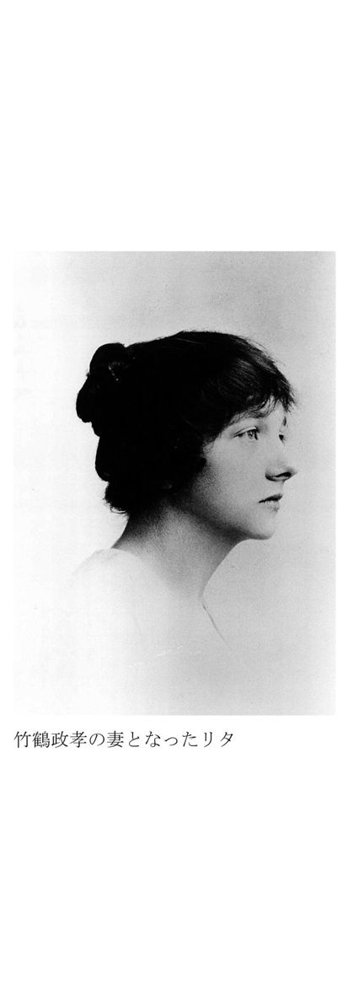
これが私たちの最初の出会いであった。
私にはリタが初めから印象的であった。リタの方は、一人で勉強している私に同情し、その同情が次第にロマンスに進んだのです、とあとからの話であった。
リタと二度目に会ったのは、私が大学の図書館で本を読んでいたときだった。妹のエラが、姉が来ているからと私を捜しに来たのである。三人は学校の中の公園で、二時間ぐらい雑談をした。そしてそのあと誘われるままに、カウン家に出入りをするようになっていった。
その年の夏、私はヨーロッパ大陸に渡り、フランスのボルドーで、ぶどう酒の勉強をした。フランスの香水をリタのみやげに買ってグラスゴーに帰ると、リタは喜びのあまり私にウイスキーの賛歌をうたいあげたロバート・バーンズの詩集を贈ってくれた。
大正八（一九一九）年のクリスマスはカウン家から招待を受けた。
私はクリスマス休暇をもらって勇んで実習先のローゼスからグラスゴーに帰ってきた。
イギリスでは、クリスマスの日のために、何ヵ月もかけてつくるプディングがある。この中に六ペンスの新しい銀貨と、裁縫に使う指ぬきを入れて、占いを楽しむ習慣があった。めいめいでケーキを切って食べるが、その中に銀貨が入っていると、その人は「金持ちになれる」、女の子に指ぬきが当たれば「いいお嫁さんになれる」、そしてもし、女の子に指ぬき、男に銀貨が入っていれば二人は将来結婚するという、たわいのない占いである。
ところがその年のクリスマスには偶然にもリタのケーキに指ぬき、私のケーキに銀貨が入っていたのである。このとき二人は家族の皆からひやかされたが、こうして二人の気持ちは、次第に近づいていった。だが、まだ、お互いに口に出していうまでにはいたらなかった。
クリスマスが終わって私はまたローゼスに帰り、ウイスキー相手の生活にもどった。
樽の中ではウイスキーが一年で驚くような変化をしていた。
一年前に、自分たちで蒸留し、樽に入れた原酒が、うすい色をつけて次第にウイスキーらしくなっていた。年代ものの各樽も一年間に熟成の度合いを深めていた。
年月と熟成の不思議な関係は、私には初めての体験であり、一人で興奮したのを覚えている。この頃になると私のノイローゼも不思議と治ってしまった。
大正九（一九二〇）年五月、ローゼスの下宿に、私を有頂天にさせる手紙が舞い込んできた。リタと妹のルーシーの二人がハイランド旅行の途中に立ち寄るという知らせであった。
その手紙を読んだのはローゼスのヒース（Heath）の丘であった。ヒースの花は小説〝嵐が丘〟の中にたびたび出てくるので日本でも名前が知られてきたが、春から夏にかけてスコットランドの荒地の野を、この小さな紫の花がおおうのである。日本でいえばレンゲ草が野に密生しているのに似ている。
ヒースは植物の名であるとともに荒れた原野という意味もある。スコットランドのヒース（原野）にあるのは厳密にはヒースではなくヘサー（Heather）である。
このヒースが重なりあって長い年月の間に出来たものがウイスキーづくりに欠くことのできないピートである。
ウイスキーと因縁の深いだけではなく、スコットランドの生活と切りはなすことができないのが、この花でもある。スコットランドの山野を美しく彩どり、日本のホーキ草と同じように、ほうきにもなり、ベッドのクッションにも使われるのである。
燃料として昔から使われてきたし、この木からとれる渋は、皮なめしにつかわれている。
またタータン・チェックの染料としても活躍してきた。
ウイスキーの方の仕事は、シーズンが終わる頃なので、私も彼女たちの旅行に合流して、いっしょにグラスゴーに帰ることにし、彼女たちの来るのを胸をとどろかせて待った。
湖畔で誓い合った〝将来〟
二人の愛を知らず義父は急逝
スコットランドでは六月も終わりに近づくと、いたるところから、バッグ・パイプの音が聞こえてくる。タータン・チェックのスカートをはいて、バッグ・パイプ行進のわざを競い合う、夏の大会にそなえるためである。これが、日本の盆踊りのように各地で行われるのである。
私はそのバッグ・パイプの音色とリタ、ルーシーの二人の女性にかこまれて、楽しい旅行を続けた。インバネス（Inverness）を通り、恐龍で有名なネス湖（Loch Ness）のオーガスタス砦、アーサー城などに立ち寄りながら南に下った。
二人がお互いの気持ちを確かめ合ったのは、このハイランド旅行も終わりに近く、ローモンド湖（Loch Lomond）に来たときのことであった。私がプロポーズをし、リタがこれを受けた。
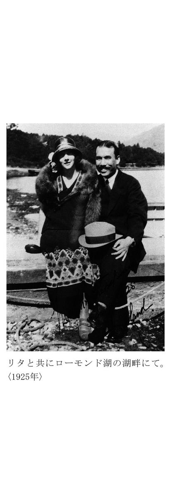
大正九（一九二〇）年の夏、私は再び、ぶどう酒の勉強のためフランスに渡った。その間にリタの父親がなくなった。
リタの父は、〝医は仁術なり〟を主義としていた人で、どんな真夜中でも、いやがらずに自分で車を運転して診察に出かけていった。そのため町の人たちからは、慈父のように慕われていたが、そんな過労が重なり合って倒れ、そのまま急逝したのであった。
リタと私の結婚には、親日家の父が許してくれるだろうという計算があったが、二人が結婚の決意を知らせる前に、父は死んでしまったのである。リタと私の悲しみと落胆は大きかった。
さて、一ヵ月余りのフランス滞在を終えて、グラスゴーに帰ると、ウイリアム博士から呼び出された。
「カンベルタウン（Campbeltown）の蒸留所に、親友のイネー博士（工場長）がいる。君のことを話したら、技師として迎えてもよいといっている。イネー博士は、日本酒をつくる麴に大変興味をもっているようだ」といわれた。
イネー博士はウイスキー界の権威者の一人であり、ブレンダーとしてもその名が知られていた人である。私は一も二もなくウイリアム博士の好意に従い、イネー博士のもとに行くことになった。
イネー博士のいるカンベルタウンはグラスゴーの西南、キンタイヤー（Kintyre）半島の先端にある人口七千ほどの町で、ウイスキーの蒸留と漁業が盛んであり、十五、六の蒸留所がこの小さな町にひしめいていた。
そのカンベルタウンに行くため、私はグラスゴーの港から、遊覧船のような船でクライド湾（Firth of Clyde）をくだった。アラン島（Aran）やキンタイヤー半島の風景は、故郷の瀬戸内海にそっくりの美しさで、郷愁にかられるのをいかんともしがたかった。
イネー博士には、日本から種麴を取り寄せ、カンサス米を使って麴をつくってお見せした。麦芽ではなく、麴をつかって糖化作用を行い酒をつくる方法には、イネー博士も化学的興味をもたれたらしく、大変喜んでいただけた。そのうえ博士は、学問的な話し相手ができたといって、なにごとにつけても「タケツル、どう思う」と私の意見をきかれた。
ウイスキーのブレンディングはスコットランドのハイランド地方で熟成させたモルト・ウイスキーに、グレーン・ウイスキーを、ブレンダーの処方によって混ぜ合せる。
それをまた樽につめて六ヵ月から一年ぐらいの間、貯蔵庫でもう一度貯蔵するのである。それに加えて、さらに気候風土のかなり違うローランド地方のモルトを入れると一段と高品質のものができるのである。
ブレンダーとしての特訓
修業の仕上げ
イネー博士のもとでは、ローゼスで受けた職人的指導とは反対に学問的な研究と、ブレンドの訓練を徹底して受けた。
私のこれまでの体験と勉強を、学問的、体系的に整理できたのも、約六ヵ月間、イネー博士に学んだおかげであった。ウイスキーづくりの自信ができて、なんだか道が見えてきた感じがしたのもこのころであった。
イネー博士がブレンドにはやや重すぎるカンベルタウンの原酒を改良するために献身されたにもかかわらず、カンベルタウンの蒸留所は次第に衰退していった。
戦後、私が再びたずねたときは昔の面影はなく、蒸留所は二つしかない有様であった。イネー博士の力でも、どうにもならなかった自然とウイスキーの葛藤の結末を見る思いであった。
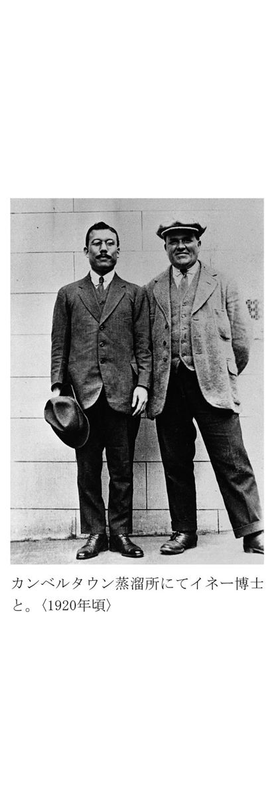
カンベルタウンでイネー博士からブレンドなどの訓練を約半年ほど受けた私にとって、残されたウイスキーづくりの最後の勉強はグレーン・ウイスキーの実習であった。今のようなウイスキーができ、大ぜいの人がウイスキーを飲むようになるうえに大きな役割を果たしたのが、このグレーン・ウイスキーであった。
ウイスキーは遠い昔からあった酒ではない。今のウイスキーのように琥珀色をしたピートのこげくさい香りのついた酒となったのは三百年前とか、四百年前とかいわれているほど酒のなかでは比較的に新しい。しかも、産業革命の進んだ一八三〇年ごろまでは、ウイスキーはスコットランドの一部を除いてイギリスでも、ほとんど飲まれていない状態だった。
その頃のウイスキーはモルト・ウイスキーと呼ばれ、ハイランド地方で、〝かぶと型〟の単式蒸留機（ポット・スチル）を使って蒸留した原酒を、樽に入れて熟成させてつくったものである。香りや味はよかったが、重くて飲みあきるきらいがあり、万人向きではなかったのである。
イギリス産業革命は、グラスゴー大学でニューコメン機関の修理に従事していたワットがシリンダーと冷却装置を分離することによって蒸気機関を改良し、大きな展開と進歩を見せたが、ウイスキーの蒸留にも蒸気を利用し、火を使う能率の非常に悪い単式蒸留機の代わりにする方法を考えるものが出てくるのは当然であった。
一八二六年になってイーニアス・マクドナルドがついに連続蒸留機を発明した。しかし、一八三〇年、マンチェスターとリバプールの間に鉄道が開通し、産業革命が頂点に達した年には、ダブリンのドッグ蒸留所のイーニアス・カフェ（Aeneas Coffey）が、より高性能のカフェ式連続蒸留機をつくり出し、ウイスキーの運命を完全に変えたのである。
この発明によって、味はともかく、今まで二回の蒸留で少量しかできなかったモルトに代わり、一回で連続的に大量にできる魅力があるグレーン・ウイスキーの工場が、一八三〇年から一八六〇年まではローランドに乱立し、たちまち生産過剰を招いた。
一八六〇年ごろ、このグレーン・ウイスキーとハイランド・モルトをブレンドしてみたのがアッシャ商会であった。いままでになく飲みよいウイスキー、即ちブレンデッド・ウイスキーが初めて世に出たのである。
カフェ・グレーンがモルトの長所をのばし、欠点であった重さや荒さをやわらげる役割を果たし、これがブレンデッド・ウイスキーといわれる今のスコッチ製法になったわけである。
このブレンドができて、ウイスキーは飲みやすくなり全イギリスの人や、世界の人びとの間にウイスキーが愛好されるようになった。だから、今われわれが飲んでいるブレンデッド・ウイスキーは、まだわずか百年の歴史しかないのである。
グレーン・ウイスキーの実習のために私はグラスゴーの近くにあったジョニー・ウォーカー系の工場に通った。そこはハイランドのモルト蒸留所と違って規模が大きいだけに、私には気軽にやってみろとは、なかなかいってくれない。
有名なウイスキーの連合会社ＤＣＬが次第に台頭して、各ウイスキー業者を買収しようとやっきになっていたときだけに、外部のものに対して警戒心も強かった。特にカフェ式連続蒸留機は、バルブの加減がコツなのだが、特定の人以外は近よれず、どうしてもさわらせてくれない。
三週間近く通ったある日、蒸留主任のおじいさんが同情してくれたのか、
「お前は操作してみたいのだろう。あさってから自分が夜勤になるから夜通え、教えてやる」
と約束してくれた。
いわれた通り、その夜行くと、三階にあげてくれて、手を取ってバルブのあけぐあいを教えてくれた。そのほか原料のことや操作上のいろんな注意など、この人から教わったことが非常に多かった。
グレーン・ウイスキーについては、私は文字通りの夜学をしたことになった。
戦後、西宮にニッカのグレーン工場をつくり、最初のバルブあけを私がしたが、この時のことを思い出し、感慨無量であった。
国際結婚にお家断絶騒ぎ
社長奔走、わざわざ英国へ
リタとの国際結婚は頼みの綱と思っていたリタの父親が急逝して、道遠しの感じにおそわれてしまった。しかし、リタの決心は堅かった。
彼女は、母親や身内の説得にかかったが、母親は真っ向から反対であった。リタは長女であり、父親がなくなったばかりである。
そのうえ、想像もつかないような遠い国の日本に愛娘を一人で嫁に出すのは、母としては身を切られるような思いだったのだろう。
とにかく大反対であった。考えればやむをえない心情でもあった。
だがわれわれ二人にも味方があった。
リタを積極的に支持してくれたのは、グラスゴー大学の学生であった妹のエラであった。
私の方も、阿部社長と広島の両親あてに、留学の目的を大方達成したので帰国するということと、イギリス人のリタと結婚したいと思うので許してほしいという意味の手紙を出した。
当時イギリスから日本に手紙が着くには二ヵ月近くもかかった。
その手紙が着いて、イギリス人と結婚したいという私の申し出は阿部社長にも故郷の両親にも青天の霹靂であった。
社長もびっくりされたが、広島の両親はそれこそ天地がひっくり返るほどのショックだったという。
すぐに兄弟に知らせるかたわら、親族会議を開いてどうしたらよかろうかという話し合いをするなど、昔でいえばお家断絶のときのような狼狽ぶりだったらしい。
ともかく、私に思いとどまらせる以外には方法がないということで、母から、そのことをながながと書いた手紙が届いた。
「青い目のイギリス人との結婚だけは、どんなことがあっても思いとどまってほしい」
「お前のために、家業の酒屋を親類にゆずってやめてまでしてイギリスにやったのだから、こんどは私たちの希望を聞き入れてくれ」
「お嫁さんの候補は、こちらにもたくさんあるので、お前さえその気になってくれれば見合い写真をすぐ送ろうと思うが」
外国人を見たこともない、田舎の両親である。予想以上の絶対反対の意思が、るると文面にあふれていた。
一方リタの側では、彼女の堅い意思と、妹のエラやルーシーたちの助けで、リタの母の気持ちは次第にほぐれてきていた。
私は折り返し
「見合い写真は必要ない。リタは立派な女性である。イギリス人ということでいろいろ心配されていると思うが、彼女に関する限り杞憂にすぎない。だからぜひ許してほしい」
という手紙を出した。
父と母とが、毎日ため息ばかりついているところへ、心配された阿部社長が再び大阪から広島の竹原町までたずねて行かれた。
「竹鶴君が、こうまでいってきているのは、よくよくのことと思うが、私にも責任の一端がある」
「私がこれからイギリスまで行って様子を見てきたいと思う」
「そして竹鶴君を連れて帰るつもりだ」
阿部社長のイギリス行きを前提とした話し合いが、その夜おそくまで続いたらしい。結局、母が、
「阿部社長がリタを見て、この娘ならと思われたら結婚させてほしい。私たちも喜んで迎えたいと思う」
と決意を示し、そういうことになった。
阿部社長には私がイギリスに渡るときにも、帰るときにも広島の両親をたずねていただくことになったのである。
そしてこんどの場合また母が理解を示してくれて父や家族の説得者になってくれたのである。母は、封建的な時代に、田舎の生活しか知らなかったが、当時としては進歩的な考え方のできる判断力のある女性であった。
こうして
「ワレ イギリスヘイク アベ」
という社長の電報を受け取ったのである。
国際結婚の場合は、今でも周囲の心配や反対を受けるであろう。
それが人工衛星の飛ぶ今の時代と違って相手の国情や生活様式がまるきりわからないころのことである。
そればかりか当時日本と欧米とでは、食生活、風俗、習慣があまりにも違いすぎていた。
祝福されて英国で結婚式
新婚旅行を兼ね帰国
摂津酒造の阿部社長がはるばる日本から船でテームズ川の港に到着されたのは、それから二ヵ月後であった。
私とリタの二人は、長い船旅を続けて私のためにやってこられた社長をロンドンの港に出迎え、近くのポートランド・ホテルに案内した。
阿部社長は、思いやりのある目でリタにいろいろ質問したり、日本の事情を話されたりし、私がそれを通訳した。
私たちは阿部社長をスコットランドへお連れし、リタの家にも泊まっていただいて家族全員でもてなした。幸い、リタは社長のおメガネにかなったようであった。
「優しい人だし、それになかなか美人だね。日本に連れて帰るように」
うなずくようにいわれた。
それを私が通訳してリタに告げると彼女は飛び上がって喜んだ。
私とリタの結婚式は、グラスゴーのステーション・ホテルに牧師を呼んで行った。阿部社長はもちろんウイリアム博士も出席され、私たちは人々の心からの祝福を受けた。
結婚式が終わると、妻のリタを生家に残して、私は阿部社長の案内役として、ぶどう酒の本場であるフランスのボルドーを初め、イタリア、スイス、ドイツを見て廻った。
第一次大戦後のフランス、イタリア、ドイツなど欧州大陸の各国は、勝者敗者ともども疲れ果てている表情しかなかった。
フランスは四年にわたり戦いを続けて勝利を得たにもかかわらず、ノーベル平和賞をもらったノーマン・エンジェルがいったように、その勝利さえも「大いなる幻影」であったようだ。労働力は減り、生産力は破壊された。フランスの北の方は、ちょうど戦後の東京の焼け野原のような状態で放置されていた。
大戦後のフランスの様子を、同志社大学の名総長といわれた原田助博士（故人）は遺集の中に次のように書き残されている。
『九月九日「戦場視察」
トマス・クック社の戦場見学団に加はりアラス地方の戦場視察に赴く。出発後約二時間にして四辺の光景突如一変し、家は落ち壁破れ樹木は枯れ惨澹たる光景、既に酸鼻に堪へざらしむ。其光景は進むに連れ益々甚しきを加ふ。最も惨状を極めたるはランス市にして全市中一個として家の形を存するものなし。強いて形容すれば大地震の後に火災あり其後に洪水を以てするも斯くまで荒廃すべしとは思はれず、是れ独軍が退却に際し飽くまで破壊し去りたるに違いなし。到る処独逸人捕虜が厭や々々乍ら取片附けに従事し居り、白布に包める骸骨を新棺に納めて埋葬しつつあり。見学中未爆の弾丸の爆発する光景、爆音と共に黒煙天に注し実に物凄かりき。本日見学中特に感じたるは同地方の住民も見物人も共に真面目なる態度を持たせることにて、殆んど一人として高き笑声を発したるを聞かざりき。最も憐れに思はれしは到る処に徘徊する少年少女と黒き喪服に包まるる寡婦たちの姿なりし。』
先日、私のもとに原田博士遺集が、先生のご子息で、外交官として活躍された原田健氏より贈られてきた本から抜萃させていただいた文章である。
博士のこの戦場視察は大正八（一九一九）年九月九日であった。その一週間前の九月二日、私は偶然の機会をえて博士にお会いしたのである。パリでは同じホテルに泊まり博士のパリ見物、戦場視察のお供をし、そのお人柄にふれることが出来たのである。
その時のことを、同じ遺集の中に次のように書かれている。
『「竹鶴政孝氏」
倫敦発巴里に向ふ。車中醸造技師竹鶴政孝氏と遇ひ、事後殆んど十日間同宿、巴里見物を共にしたる奇縁なりと云ふべし。氏は広島県竹原町の出身、大阪高工卒業後大阪醸造会社の技師となり蘇国に派遣せられ今日までグラスゴーに在りしが今般南仏の葡萄酒業視察に来れるなり。米国にて感ずる所あり基督教を奉ずる決心を為したりと、真率なる有望の青年なり。』
フランスからドイツに廻ったが、ドイツでは、有名なインフレーションが極度に進行していた。
ドイツに着いて、ホテルから日本に、はがきを出そうとしたら切手代がなんと百万マルクもしたのには目をまるくした。
イタリアも大同小異であった。経済恐慌が社会危機によって複雑化していた。農村の疲弊に耐えかねた農民が都市に集まり、生活の保障のない労働者とともに、各工場をつぎつぎと占領した時期であった。
こうして勝ち負けをとわず、戦場になった国のみじめさを、まのあたりに見たのであった。勝利を得るために戦い勝った国は栄え、負けた国はみじめになるとしか思っていなかった私は、そのむなしさを知らされる思いであった。
ヨーロッパの旅を終えてイギリスに戻った阿部社長と私は、待ちかねていたリタを伴い、三人でニューヨーク行きの船に乗り、大西洋を渡った。
四年前、アメリカからイギリスへと大西洋を渡ったときには戦場に赴く兵士と一体になっての対潜水艦訓練、語学やマナーの苦労、コナクリ号が目の前で沈む事件など、緊張と不安の連続した航海であったが、今度は妻リタを交え、ハネムーンを兼ねた帰国の船旅であった。
思えば一人で体当たりしたイギリス留学であったが、ウイリアム博士、イネー博士、グラント工場長などつぎつぎと恩人たちの手でとびらを開いていただき、私はただ前に突き進むだけでよかった。若さにまかせて、昼も夜も夢中で吸収を続け、実りが多かった日々であった。
日本に帰ったら本格的なウイスキーと取り組むことのできる喜びと自信がわき上がる思いで大西洋の航海を三人で続けたのだった。
しかし、実はそのころ日本には不況のあらしがそれまで好況を誇っていた酒造業界をゆさぶり、摂津酒造も大きな変化をこうむっていたのである。
変化は日本だけではなかった。イギリスのウイスキー界にも大きな変貌のきざしがあった。
ウイスキーの連合会社ＤＣＬが日の出の勢いで台頭していた。
群小のモルト・ウイスキー蒸留業者は、戦時中に工業用アルコールをつくらなかったので蒸留所を閉鎖しなければならなかったほど経済的な痛手を負っていた。そしてＤＣＬの誘惑に次々屈していった。一方ＤＣＬの指導者、Ｗ・Ｈ・ロスは第一次大戦中に政府と戦争に積極的に協力し、政府部内にすっかり食い込んで独占の基礎と勢力を拡大していた。
イギリスには五つの大きなウイスキー・メーカーがある。
デュアー家（ホワイト・ラベル）、ウォーカー家（ジョニー・ウォーカー）、ブカナン家（ブラック・アンド・ホワイト）、マッキー家（ホワイト・ホース）、ヘーグ家（ヘーグス）の五つであるが、これらビッグ・ファイブも戦争中の生産制限がたたって原酒のストックがあまりなかった。彼らは自分の蒸留所を増設するか、さもなければ資本力のあるＤＣＬと合同するかの二つに一つという瀬戸ぎわに追い込まれたのである。一九一九年にヘーグが、ＤＣＬの支配下にまず入ったのである。
そして昭和二（一九二七）年までには五つが全部ＤＣＬと合同することになってしまった。
現在ではＤＣＬがスコッチの六十パーセント以上を握り、その他の事業にも手を出して巨大なコンツェルンに成長している。
四年ぶりに日本の土を踏む
ウイスキー醸造計画役員会で否認
船はニューヨークに着き、われわれ一行三人は陸路シカゴを経てシアトルに向かった。ちょうどアメリカでは有名な禁酒法が実施されてから一年ばかりたったころで、そのためのゴタゴタが社会を騒がしていた。
もともとアメリカの酒造業はドイツ系の市民が多かった。そのため、第一次大戦中ドイツへの反感がそのまま酒造業者への圧迫となって現われたといわれている。そして、酒の原料に穀物をつぶすのはけしからんという、農産物節約の趣旨にうながされて議会を通過したのが禁酒法である。禁酒法も実行するとなると、なかなかむずかしいようであった。酒の密輸、密造が盛んになり、シカゴを中心にギャングが横行したりして社会不安や衛生上の弊害を生じていた。
またアメリカ旅行中、妻とレストランに入った時、英国人の家内の英語がアメリカ人に通ぜず、私が通訳して英語を話したという笑い話の種になるようなこともあった。
シアトルから船に乗って留学最後の航海である太平洋を渡り、大正十（一九二一）年十一月横浜の港に着いた。
日本の土を踏んだのは約四年ぶりである。横浜からひとまず東京に出た。
当時の東京横浜間は、一面のたんぼ続きだった。妻のリタが刈り入れ前の稲穂を指さし、「あれはなに」とふしぎそうな顔で聞いた。私が説明すると、リタは「米のなる木なのね」といって珍しがったのが、いまだに印象深く私の心に残っている。
日本で二人が新婚の生活をする家は大阪の帝塚山に見つけてあった。阿部社長が船から電報で手配されたのである。家賃は五十五円で、洋風のトイレットも新しくつけてあった。それもみなイギリス人のリタのことを考えて下さった阿部社長のご配慮であった。
私の帰国後の待遇は技師長で、月給は百五十円と決まった。
ところで、帰国してみると、会社の景気といい空気といい、私がイギリスにたったころの熱っぽさや活気は全く失われ、様相は一変していた。それは摂津酒造が大戦後の大恐慌のあおりをいちばん受けている年だったからである。
第一次大戦の軍需景気で未曾有の好況とアルコール・ブームを迎えた酒造業界に大正十（一九二一）年から十二（一九二三）年にかけて大きな反動が押し寄せ、同業者の倒産が続出する有様であった。
こういった悪い状況のなかであったが、私は帰国後すぐ本格ウイスキーの製造計画に取りかかった。私の留学の目的はそれであり、私は日本に帰ってそれを実現することを夢見てきたのだ。一刻も早くつくってみたい、こう思って私は摂津酒造の工場の中でつくることを前提に、予算、工場規模などをはじきながら設備の青写真をひいた。そしてそのかたわら先輩の岩井専務に説得を始めた。
ウイスキーづくりにふさわしい土地を捜して新しい工場をつくるなどということは、そのときの摂津酒造の力では、とうてい望むべくもなかった。
それで私としては、今の工場のあき地にポット・スチル（かぶと型の蒸留機）をすえつければ小規模ながらウイスキーがつくれる、それでいいからなんとしてでも、やらせてほしいと頼みこんだ。
重役会でも阿部社長は
「竹鶴君が苦労して勉強してきたのだから、なんとかやらせてみたい」
と助け舟をだされたが、ウイスキーのように貯蔵に年数がかかり、そのうえ、ものになるかどうかもわからない道楽事業は、会社の今の財政面からも、すべきではないと全重役から反対されてしまった。
「社長は竹鶴に甘すぎる」かげでこういうことばが、ささやかれるほどの有様であった。
こうして私の出した「本格モルト・ウイスキー醸造計画書」は、今の摂津酒造が取り上げる事業ではないと正式に役員会で否認されたのである。
私の頭の中には、ほんもののウイスキーをつくることしかなかった。イミテーションのウイスキーなら私が高給をもらわなくても、そのときのスタッフで十分間に合う。
本格ウイスキーを摂津酒造でつくらないのなら、私が会社に席をおいて高禄をはむ意味は全くない。それを承知で社長の恩愛に甘んじて過ごすことはどうしてもできなかった。
さんざん悩み考えたすえ、阿部社長にお会いした。
私の胸の中を、とつとつと述べ、しばらく浪人してみたいと思いますと辞表を出した。
それは帰国の翌年、大正十一（一九二二）年のことであった。
阿部社長は沈んだ顔で私のいいぶんを聞いておられたが
「残念だが──」
ポツリとただひとこといわれた。
本格ウイスキーづくりへ第一歩
三顧の礼にこたえて
さて心が命ずるままに、辞表を出してしまったが、あすからどうするという計画は全くなかった。今思えば無謀な話であるが、私のただ一つの救いは、日本に来たばかりで西も東もわからない妻のリタが、そのことを知っても悲しまず、相変わらず明るいことであった。
しかしお別れしたとはいえ、阿部社長は私のいちばんの恩人である。そのやさしい独特のまなざしは終生私の心にやきついて離れない。リタへはいつも「不自由なものはないか」と心配していただいていた。
後年、私が北海道余市でウイスキーづくりを始め、最初に原酒ができたとき、せめてのご恩返しと思って、摂津酒造で、もしウイスキーをおつくりになるのでしたら、この原酒をお使い下さいと、いの一番に申し入れたが実現はしなかった。
それからしばらく浪人生活をした。
大正十一（一九二二）年から十二年（一九二三）年の初めにかけての数ヵ月間だったが、私にとってはウイスキーづくりを離れた唯一の生活だった。
その間は学校の先生をした。
帝塚山の近くに英国人の牧師、ローリング氏が校長をされていた桃山中学があった。妻のリタが、ローリング夫人と親しく交際していたため、失業を心配されて私を桃山中学の化学の教師に採用されたのである。
ローリング氏は、その後も日本の教育や、キリスト教の普及につくされたが、昭和八年四月七日肺炎でなくなられ、遺骨は阿倍野の外人墓地におさめられた。
私が北海道で独立したあと、妻のリタと二人で、阿倍野のお墓にお参りしたが、きれいな花が墓前を飾り、掃除もゆきとどいていた。その様子を、英国に帰国されたローリング夫人に、妻のリタが手紙でお知らせしたところ、非常に喜ばれた。
一方、妻のリタも帝塚山学院で英語を教えるかたわら、英語とピアノの個人教授を頼まれると引き受けていた。
野田卯一さんが「竹鶴さんと私」という文章のなかで
「私は長年大蔵省に勤めている間に、ヒゲの竹鶴さんとのおつき合いが深まったが、私の妻は結婚前から竹鶴家とご縁があった。リタ夫人は、頼まれて良家の子女に英語を教えておられたが、妻は姉の紹介でリタ夫人から英会話を学んで以来のお付合いである。竹鶴家と私の家族の関係は伝説的といっていい位のものである」と書かれているが、リタと野田夫人が知り合ったのもこの時代である。
リタの子供好きはこのころから有名だった。小さな女の子のピアノの音、リタの明るい声などにつつまれて、私にウイスキーづくりを離れたさびしさを忘れさせるほど、家庭的な明るい数ヵ月であった。私がこうした事情にあるとき、たまたま寿屋の社長鳥井信治郎さんが私の自宅に来られた。
それは大正十二（一九二三）年の梅の季節だったと思う。鳥井さんとは留学以前からの知り合いで、私が神戸港をたつときは、見送りまでしていただいた。
「赤玉ポートワインが順調に売れているので、どうしても本格的ウイスキーをやってみたい。三井物産に話してスコットランドから技師を連れてくるつもりであったが、向こうから逆に〝日本にいい技師がいる、しかも日本人だ〟といわれて君のところに飛んで来た」
と、火のついたような話であった。
そのころ鳥井さんの事業は赤玉ポートワインを中心に躍進していた。製造方法も委託をやめて築港に製造工場をつくり自社生産に入っていた。株式会社寿屋を設立され、びん詰め工場をふやし、東京にも出張所ができ、意欲的な活動を続けていた。宣伝面では、片岡敏郎氏が森永から入社して敏腕をふるっていて、赤玉ポートワインは日に日に人気商品に成長していた。
その波に乗って鳥井さんは周囲の人の心配をよそに本格ウイスキーを日本でつくることを考えておられた。
そこで三井物産のロンドン副支店長中村幸助氏を通じて、ムーア博士を第一候補にしてウイスキーの醸造技師招請の交渉を進めていたが、ムーア博士の方から私の話が出た。そのことを三井物産大阪支店の井沢さんから鳥井さんに知らせがあったとのことであった。
摂津酒造をやめて新生活を始めたばかりであり、即答できなかった私を、三顧の礼のことば通り、鳥井さんは三度私の家を訪問された。
私は技術者としてウイスキーを日本でつくる、そのことにこれまでの人生があった男である。
もちろんうれしくないはずがない。二人の話は進んだ。
そして私の申し入れは全部鳥井さんに聞いてもらえた。
ただ工場をつくる場所についてはウイスキーには北海道がいちばん適していますとすすめたが、「工場を皆さんに見てもらえないような商品は、これからは大きくなりまへん。大阪から近いところにどうしても建てたいのや」
といってきかれなかった。
鳥井さんの商品を育てるカンと努力は先天的なものがあったが、このときもその好例であろう。
また、当時の北海道は、大阪から三日以上もかかり、一般には辺地とみなされていた時代でもあった。
私が寿屋に入る条件として、ウイスキーづくりを全部まかせる、必要な金は用意する、十年間働く、年俸四千円という約束が二人の間にできた。
年俸の四千円は、スコットランドから技師を呼ぶ場合の見込み金額をそのまま私に当てはめたものであり、雇用期間の十年は、ウイスキーが商品として完成するのに必要な年数ということで決まったのであった。
そこで大正十二（一九二三）年六月に寿屋に入社、まずウイスキー工場をつくる場所をさがして決めることが私の最初の仕事であった。
水明の地、山崎を探す
原酒工場建設
ウイスキーの原酒工場をつくる場所は、空気のきれいなこと、付近に川のあること、夏でもあまり温度の上がらないこと、ピート地帯であることなどいろいろな条件があるが、大阪に近くて、できるだけこの条件に合いそうなところをまず地図で選んで、ここならと思う土地を見て歩いた。
大阪だけでなく宝塚、紀州、滋賀、舞子にまで足をのばして捜した。
その結果、大阪ではここがいちばんいいと選んだのが今サントリーの工場のある山崎で、私はそれを川向かいの山の上にある男山八幡のお宮からながめて、最終決定した。
こうして山崎の立地条件、水質などを調べて土地買収が終わったのは大正十二（一九二三）年十月、大震災の直後のことであった。
関東大震災のとき鳥井さんは、直ちに船をチャーターして「赤玉ポートワイン」や「ヘルメス・ウイスキー」を東京に運んだ。これが飛ぶように売れた。それが関東の市場に強く食い込むにも役立ち、寿屋が一大飛躍するステップの役割を果たした。
山崎の工場の設計を終えて起工式を行ったのは大正十三年（一九二四年）四月だった。設備や機械の発注など全部一人でやらねばならない忙しい毎日が続いた。
大麦の粉砕機と濾過機は英国に発注したが、そのほかは全部日本のメーカーに図面を渡し、こまかく説明して国産のものをつくらせた。
特にウイスキーづくりの心臓部といわれる巨大な単式蒸留機（ポット・スチル）は、大阪市西区の渡辺銅工所にたのんだ。そこには何度も足を運んで説明したり、製作過程を見たり、完成までに何ヵ月もかかった。
こうしてでき上がった蒸留機二台を運ぶのもまた一仕事であった。
直径三・四メートル、高さ五・一メートルの銅の釜である。陸上輸送はとても無理なので、船に乗せて淀川をさかのぼった。上山崎で船から降ろし、そこからはトロを使い馬に引っぱらせて大ぜいで運んだ。工場予定地に行く途中に東海道線があって、これが難関だったが、駅と話し合って汽車の間隔のいちばんながい夜半を選び、線路越えをしてようやく運んだのが思い出される。
機械や設備を請負った業者も、初めてのことばかりで、設計図のほかは、私の説明と監視が唯一の手がかりでしかなかったから、とまどったのも無理もない話である。
私はスコットランドに留学していた際どんな小さなことでも絵に書いて、その説明をノートにつけていたが、このノートがなかったらウイスキー工場はおそらくできなかっただろうと当時しみじみと感じたものである。
それでも、実際に機械を取りつけたり、稼働させたりすると、疑問が出てきた。しかし相談する人といっても日本にはだれもいない。どうしてもノートや英国での資料にかじりついて解決していくほかはなかった。
そのうち大きな疑問点が二つ起こった。
その一つは、原料の大麦を乾燥させるとき、天井に金網をひいてその上に広げ、下からピートを燃やして芽と根を出した大麦をかわかすのだが、ピートを燃すところから網までの正確な距離がわからない。
もう一つは蒸留機にあった。石炭をたくところから釜の底までの距離がはっきりしない。距離によって熱度が違ってくる。どちらも非常にデリケートな問題であった。
丹念にとったつもりのノートにも、その記録がない。本にはもちろん出ていない。この二つの疑問とその他の小さな疑問を解くために、私は後年わざわざ英国に渡り、実際に測ってきたのであった。
これは工場づくりの苦心の一例にすぎず、できあがるまでには、徹夜で仕事をした日が何日かあったほどの忙しさであった。
製造免許申請は大阪税務監督局に出したが、本格ウイスキーについては日本で初めてのことなので、大阪では決めかね、大蔵本省の審議に回り、大正十三（一九二四）年四月にやっと、認可される有様であった。
税制改正にお役所通い
ついに「庫出税」認められる
京都郊外山崎の地に、つき出すような細長いパゴダの屋根が忽然と姿を見せた。
それは、スコットランドの蒸留所そのままの形であった。平屋の多かった当時だけに、この奇妙な建物はたちまち興味と関心を呼んで人びとの話題になった。
工場の竣工式は、大正十三（一九二四）年の十一月、鳥井さんの方針で大ぜいの名士、関係者、特約店や新聞社関係を招いて盛大に行われた。
この工場には、二百万円あまりの費用がかかった。当時の二百万円といえば、今では十数億円に相当する金額である。
「よく一人で短期間にやってのけたものですね。大変な苦労だったでしょう」あとになって私にはよくこんな声がかけられた。しかしウイスキーの仕事は、私にとっては恋人のようなものである。恋している相手のためなら、どんな苦労でも苦労とは感じない。むしろ楽しみながら喜んでやるものだが、その心境である。それに、鳥井さんからまかされているという責任感にもあふれていた。
工場をつくるまではなかなかの大仕事であったが、しかし工場ができてからも大変な大仕事であった。何から何まで自分でやり、私が教えなければ知っている者がいないのである。
働き手は郷里の広島から日本酒の杜氏を十数人呼んで手を取るように教え込み、これに当たらせた。機械の呼び名を覚えさすのさえ日数がかかる。
杜氏の口から、機械の名前が英語でスムーズに飛び出すようになって、やっと彼らの新しい仕事の手つきも慣れてきたのである。
こうしてウイスキーづくりは、その緒についたが、次に税の問題が待ちかまえていた。
当時の酒税はできた酒に税をかける造石税制度になっていた。ところが日本酒と違ってウイスキーは原酒を樽に入れて何年も熟成させないと商品にならない。原酒は樽の細かい木目を通じて外の空気とまじりあいながら十年間で半分近く蒸発し、よい原酒に生まれ変わるのである。だから蒸留を終わって樽づめしたものにすぐ課税されてはその後の欠減と商品として売り出すまでの何年もの金利を入れると、ウイスキー企業は全く成りたたないのである。
幸い大蔵省主税局に石渡荘太郎（後の宮内大臣）という親戚の者がいたので、彼の紹介で、当時大阪税務監督局で間税部長をやっておられた星野直樹氏（後の企画院総裁国務大臣）に会って、イギリスの例をもち出し、ウイスキーは造石税ではなく、庫出税にすべきだと主張をした。
今と違い、樽に入れて何年もおかねば酒にならないとか、その間に減ってゆくなどということは一度や二度の説明ではわかってもらえなかった。
「酒税の建て前は建て前で、例外は認められない」
という答えしか返らなかった。
こちらは必死であった。私も頑固なほうだが、星野さんも頑固者だった。しかし頭のよい人なので、何回も足をはこぶうちに、「何とか方法を考えよう」ということになり、その星野さんたちの尽力で酒税法が改正され
「ウイスキー原酒は半製品であるから庫出税とする」
ということになった。当時の大蔵大臣は高橋是清氏、次官が黒田英雄氏だった。
さて、庫出税は認められたが、税務署では
「欠減のチェックと検査簿のつくり方がわからん」
といい出した。
そこで、英国の検査簿と方法を説明、役所の検査簿づくりの手伝いをして、この問題は落着したのであった。
原酒をもって再び渡英
昭和四年に「白札サントリー」発売
初年度の蒸留を終えた大正十四（一九二五）年六月、山崎でできたばかりの原酒のサンプルと、工場の設備や仕事上のいくつかの疑問点をもって、再びイギリスに渡った。そして、イネー博士をたずねた。
このとき、確かな記録のなかった釜とたき口の距離は、私自身が釜のたき口に入り、真黒になりながらあらためて測量したのである。
多忙な毎日を夢中で過ごしていた私は、久しぶりに昔ながらの英国の静けさをエンジョイした。
イネー博士はサンプル原酒を何度も嗅いだり、口に入れたりしてテストしていたが、「よくやった」とほめてくださった。そして同時に細かな注意をされ、大事な点を私に質問して正しく行われているかどうかをチェックされた。
化学者と化学者の魂がふれ合うときこそ、夕日を一杯に吸って赤くなった静かな海のような心のやすらぎをおぼえるものである。
英国の田舎町カンベルタウンで再びイネー博士と過ごした二週間、私はこの道を選んだ幸福感にしみじみとひたることができた。
ウイスキーづくりは、少なくとも最初の五年間は商品として売り出せない、気の長い事業である。しかも、毎年新しい原酒を蒸留して樽に詰め、熟成の時がたつのを、じっくり辛抱しなければならない、厄介なしろものである。
工場をつくる膨大な金額も、毎年仕込む原酒も、その間は完全な投資となるわけである。しかし原酒は一年ごとに色と香りをつけて育ってゆくのである。
こうしているうちに大正から昭和へと年代は変わったが私は、工場と裏の山にある私の住宅の間を降りたり上がったり、ただウイスキーづくりだけに専念する毎日であった。
寿屋では大正十五（一九二六）年に半練り歯磨の「スモカ」を発売、昭和に入って、「新カスケード・ビール」「トリス紅茶」、濃縮リンゴ・ジュース「コーリン」の発売など鳥井さんの多角経営時代が始まっていた。
大正の終わりから昭和の初めにかけては、日本は不景気のどん底にあった。物価は低迷を続け、また需要も伸びなかった。昭和二（一九二七）年には渡辺銀行が破綻して金融恐慌が勃発し十五銀行、台湾銀行などつぎつぎと休業して、ついにモラトリアムが緊急勅令により実施された。
この不景気に加え、昭和の初めのビール業界の競争ははげしかった。当時は大日本麦酒、麒麟麦酒、日本麦酒鉱泉、桜麦酒、日英醸造などのビール会社があった。
日英醸造のビール工場は六階建の建物で、横浜鶴見区の三万坪あまりの土地にあったが、カナダのビクトリアにあるカスケード・ビールの製法を採用して、ビールをつくり、カナダと同じく「カスケード」という名で売り出していた。
販売シェアは全ビールの二パーセントぐらいだったと思う。だが震災で大きな被害を受けたうえに、不景気で経営難になり、税金の滞納のため昭和三（一九二八）年に日本興業銀行から競売に出されたのである。
私は、鳥井さんからこの工場の見積りを頼まれ、二晩徹夜して入札金額を計算した。その結果落札価格は六十八万円で提出した。
昭和三年十一月、工場の入札が行われ、三社が参加した。
一回目は予定されていた最低価格に達せず再入札になったが、他の二社がおりたため、指定価格で寿屋の手に落ちた。
こうして一ヵ月後の昭和四年の初めから「新カスケード・ビール」として、寿屋のビール第一号が売り出されたのである。
さて、ウイスキーの方に話を戻そう。
そのころ山崎工場で初年度に樽詰めした原酒は、倉庫の中で満四年の歳月を息づき、色や〝まるみ〟を次第に増していた。
ウイスキーの最後の仕上げは、古い原酒と新しい原酒をブレンドして、また樽に入れ再貯蔵し、調熟させる仕事がある。
ウイスキーのブレンドは不思議なもので、新しいモルト同士の場合は当然のこととして、古いモルトと古いモルトをまぜ合わせても結果は必ずしもよくないのである。
ところが、古いものに新しいもの、たとえば十年ぐらい熟成した原酒に五年前後の比較的新しいものをブレンドすると、新しいものが古いものに同化してうまいウイスキーができる。しかしその時は新しいモルトしかなかったのである。
無理からぬことであるが、当時の日本にはコンパウンダー（混合者）の知識はあっても、ブレンドや熟成の体験的な知識はなかった。古い原酒がないためブレンドするにもむずかしかったという理由はあるが、他方ではウイスキーを商品として早く出さねばならない情勢もあった。
だからこのときは、まだ理想的ブレンドをしたウイスキーとまではいかなかったが、とにかく昭和四（一九二八）年四月一日、初めての本格ウイスキー「白札サントリー」は世に出たのである。
発売価格は一本三円五十銭であった。ジョニー・ウォーカーの赤が五円の時代である。
その後、普及品の「赤札サントリー」を出したが、いずれも売れ行きも評判もよくなかった。
また時代も早すぎたのである。
鳥井さんがウイスキーによせられた期待と情熱、その要望にこたえようとした私も一生懸命であったが、宴席といえば日本酒ばかりで、夏はともかく、冬ともなればビールも顔を見せない時代で、誕生したばかりのウイスキーなど相手にもされなかった。
売れないから当然原酒が残った。
だがこのとき残った原酒は十年前後の歳月がたって十分に熟成するとともに、りっぱな原酒に成長したのである。
ビールも手がけた寿屋時代
十二年目に独立のために退職
山崎工場で最初に仕込んだ原酒、つまり大正十四（一九二五）年、昭和の初めごろの原酒が熟成して古い原酒として一人前になったのは、伏見宮殿下が山崎工場をご見学になった昭和六（一九三一）年ごろである。
その年四月、日本産業協会の総裁であった殿下を山崎にお迎えし、私も張り切ったが、このときの鳥井さんはこれまでの苦労が報われたような喜び方であった。
殿下は海軍武官として英国に三年駐在されたことがあるだけに、ウイスキーには詳しかった。人一倍興味をもたれ、いろいろご質問を受けた。
昭和六年八月、満州事変が起きるひと月前に、私は三回目のイギリス行きのため日本をたった。
このときは、鳥井さんの長男吉太郎さんが寿屋の後継者として必要な知識を得るために、ウイスキーや、ぶどう酒の本場を視察する案内役としての旅行であり、私にとっては、妻リタの帰郷旅行を兼ねたものであった。
吉太郎さんは、神戸高商を卒業後、寿屋を継ぐために鳥井さんの仕事を手伝いながら勉強されていた。私の家にあずかって、一諸に生活したこともあり、妻のリタともたいへん親しかった。
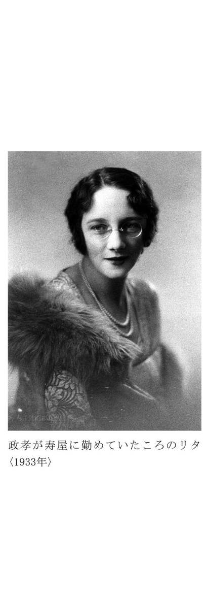
吉太郎さんを案内して、スコットランドの蒸留所やフランスの、ぶどう酒の本場ボルドーを初め、欧米を回って日本に帰ってきたのは翌七年の二月であった。
スコットランドの蒸留所も、そこに住む人たちの静かな生活も昔のままであったが、ＤＣＬは英国の五大ウイスキーのなかで最後まで残っていた「ホワイト・ホース」まで傘下に入れていた。そしてＤＣＬ中心のスコッチの現代史がすでに始まっていたのである。
日本では、本格ウイスキーづくりは初めての事業で第一歩を踏み出したばかりであったが、寿屋のビールは、既存の勢力への挑戦であった。
このビール部門をウイスキー部門から分離して独立採算制にすべきであると私は思っていたが、結局同じ経営のもとでやることに決まった。私は、製造も販売も長期型のウイスキーと、量産型のビールは別経理にしなくてはならないという意見であったが、採用されなかったのである。
「ビールのために、ウイスキーを縮小することはしない」と私は鳥井さんと約束をとりつけたので、その方針のもとに私はウイスキーとビールの両工場長を兼任していた。
昭和四（一九二九）年「新カスケード・ビール」を出したが、このときはビール各社の一本三十三銭に対抗して、一本二十九銭という値段で市場に送り込んだ。そして昭和五年「オラガ・ビール」と名前を変えた。
オラガということばは、その当時の流行語の一つであった。総理大臣をやり、政友会の総裁であった田中義一大将が、自分のことを「オラガ、オラガ」といっていたが、このことばは当時の庶民感情とマッチして流行していたのでビールの名前に採用したのである。
オラガ・ビールは一本二十七銭とさらに値下げをするとともに、広告と販売に攻勢をかけた。
しかし、安かろう悪かろうという世間一般の考え方もわざわいして、売れ行きは思ったほどあがらなかった。
昭和八（一九三三）年、ビール業界の正常化が叫ばれ、関西では「ユニオン・ビール」が朝日麦酒に合併され、関東では「オラガ・ビール」の買収の話がもち上がってきた。
それと前後して私のところへは本社から工場拡張工事の命令が出た。
そこで大林組に拡張の見積をやらせ、拡張が決定して、基礎工事にかかっている最中に麦酒共同販売（後の東京麦酒）に工場と企業のいっさいの売り渡しが決定したのである。
売り渡し価格は二百五十万円で、当時としては大変高く売れ、寿屋にとっては有利な取り引きとなった。
しかし工場を大きくする計画と仕事を日夜続けていた工場長の私にとってショックであったことはいうまでもない。
私もそろそろ四十歳になる。独立しようとかたく決意したのはそのときだった。
とはいえ、鳥井さんとはけんか別れではなく円満に退社したのである。
もともと契約は十年の約束であったし、私はつねづね自分でウイスキーづくりをしたいと思っていたので、その期限の来た昭和七年に退社したいと申し入れたが、保留されていたのだった。
とにかくあの清酒保護の時代に、鳥井さんなしには民間人の力でウイスキーが育たなかっただろうと思う。
そしてまた鳥井さんなしには私のウイスキー人生も考えられないことはいうまでもない。
北海道余市に待望の原酒工場
昔はアイヌの楽園
ウイスキーをつくる仕事は、何年か先を目標にする気長な事業である。ウイスキーづくりに適した土地で、よい原酒を時間をかけて育てるのであるが、熟成するまで事業が、もちこたえられるかどうかに、成否がかかっていた。
独立して自分でウイスキーづくりをすることを決心した私は、まずつくればすぐ売れるジュースを販売しながら、ウイスキーを育てることにし、加賀証券をやっておられた加賀正太郎さんに相談した。
加賀さんは山崎の自宅の近所に住んでおられ、妻のリタが奥さんに英語を教えていた関係もあって親しくしていた。次いで、帝塚山で近所におられた芝川又四郎さん、英国時代からの知り合いで食通であった柳沢伯爵の三人の応援を得て、とりあえず資本金十万円の会社をつくることに決めた。
工場の予定地は、前から目につけていた北海道余市にためらうことなく決めた。
余市は積丹半島入り口にある町で、余市川が日本海に流れ出る河口にあった。
ニシンの漁場としても有名であったが、リンゴや、ぶどうの産地でもあり、海のものにも山のものにも北海道では珍しく恵まれた土地であった。
余市は、アイヌ語であり、「イヨテイン」＝蛇のように曲がりくねった大きな川のある所という説と、「イオチ」＝蛇のいる温暖なところという二つの説があった。付近からピート（草炭）がとれ、ウイスキーづくりにはうってつけの条件をそなえた場所であった。
余市がまだイヨチポロコタンと呼ばれていたころは、海や川には魚があふれ、山には鹿や熊、キツネなどの動物が多く住み、秋にはエゾノコリンゴが密生して、アイヌには何不自由のない別天地だったといわれている。
ところが、十八世紀に入ると松前藩はサケ、ニシン漁の奥地進出をはじめた。
まず、元文のころ（一七三六年～）松前家の知行主松前平治左衛門が、家臣に命じてヨイチ場所との交易をはじめた。
文化三（一八〇六）年に松前福山の豪商、藤野喜兵衛が場所請負人となり、本格的な開発がはじまり、昭和の初期までニシンの千石場所として、豊漁が続いた。
このころからロシアの軍艦が蝦夷地の状況を調べるため、しばしば出没した。そこで幕府は文化六（一八〇九）年北方警備のために、あまり頼りにならない松前藩のかわりに、ヨイチに南部藩による勤番所をおいてそなえたのである。
文政四（一八二一）年になると松前藩は幕府の役人にワイロを贈って、ふたたび西蝦夷地の支配権をとりもどし、余市にも場所請負制を行った。当時の漁の使役は全部アイヌの人々が当たったのである。
豊漁は続いたが、藩主からは、たびたび多額の御用金の上納を命ぜられ、そのしわよせが何も知らされていないアイヌの人々に加わった。
ピクニ（美国）ではアイヌに満足な食糧を与えず、男女をひきはなして、女は妾として、男女昼夜の別なく酷使したため、ピクニコタンのアイヌは首長エコマをはじめ七十余人が死に絶えたといわれている。
数年前まで余市にひそかに祭られてあったヨイチコタンのお堂は、松前藩の没落を祈ってつくられたものと伝えられていた。
平和な楽園であったヨイチコタンのアイヌは、長い苦難の歴史のなかをこうして自滅していったのである。
こうした悲劇をはさみながら、ニシンの千石場所はさかえていった。
大正時代の平均漁獲量は、一漁場四万九千石もあり、ニシンを積んだ馬車が、港から駅まで延々四キロにわたってつらなる年が続いていた。
一方、リンゴは余市を開拓した会津藩の旧武士たちが育てたものである。
幕末、戊辰の役で最後まで幕府につき、白虎隊の悲劇を生んだ会津藩の武士が、藩士流罪の名目で余市に入植したのが明治四（一八七一）年であった。
当時の余市は原始林で、鍬をもったことのない旧藩士には苦しい仕事で、脱落するものが続出したといわれている。
また、ニシン景気でわきたっていた漁民には、会津の降伏移民として馬鹿にされ続けた。
こうした環境のなかで、余市の農業を安定させたのがリンゴであったといわれている。
余市リンゴの始まりは、明治八（一八七五）年、開拓使がアメリカから移入した苗木を七本ずつ配ってからである。
当時の農家は未経験もあって大半を枯らせてしまったが、残ったものが明治十二（一八七九）年に実をむすび、わが国リンゴの最初の結実という金字塔をたてたのである。
この時のリンゴざむらいの喜びは想像できるようである。
ニシンは幻のようにきえ去ったがリンゴは品種もふえ、余市の秋を今でもあざやかに彩り続けている。
ジュースづくりと原酒づくり
悪戦苦闘の連続
その余市に住居を移して、いちばん喜んだのは妻のリタだった。気候や、風景がスコットランドと似ており、特に朝、夕の感じがそっくりなのである。山にかかる靄を見ているうちに、故郷に帰ったような気になったらしい。
娯楽がわりに、スコットランドからもって来ていたゴルフのクラブを庭にもち出し、アプローチの練習をしたりしていた。
昭和九（一九三四）年十月、工場を建て、余市リンゴ・ジュースをつくるとともに、住友銀行から百万円の融資を受けてウイスキーづくりの準備にかかったのである。
創立当初の社名は大日本果汁株式会社と名付けた。
そのころは何でも大日本とつける風潮があった。それと大日本麦酒の向こうを張り、大きくなろうという意気もあった。
ところが、いざ商品をつくって販売にかかると、社名のように勇ましくはいかなかった。
フランス製のコンセントレーター（濃縮機）を使って、バキューム（真空低温濃縮）でビタミンを生かしたリンゴ・ジュースを一本三十銭で売り出した。一本に約五個分の果汁をコンクしてあり、栄養満点で、北海道のめぼしい病院で使用してもらえるまでになったが、なにしろラムネ、サイダーの時代だから、一般の人の嗜好に合わなかったし、値段も高かった。
東京、大阪には小樽から船で送った。小樽をたって日数からいえば着いていなければならないはずの船が、東京に着かないので調べてみると、北海道を北上して留萠の港でのんびり積荷をしていたこともあった。
ほうぼうに寄港して積荷のあいだに雪をかぶるため、東京につくころには、ラベルのノリにカビがはえて、商品として出せないこともあった。また、回転が悪いため、東京の商品にペクチンが凝固して、にごりが出て本郷の本富士警察に呼び出されるなど悪戦苦闘の連続であった。
いちばん苦難の時代であったが、当時の社員や問屋さんの努力のお蔭で切り抜けることができた。しかし、田舎の町のこと、赤字会社の噂はすぐひろまり、小樽あたりでも「赤字会社のジュースか」といって、ばかにされる始末で、これには参った。
リンゴ・ジュースで苦戦を続けながらも、ウイスキーづくりの準備は順を追ってはかどっていた。単式蒸留機は、山崎工場建設のとき、蒸留機をつくった喜田専之輔氏（故人）につくらせた。
二年目の昭和十一（一九三六）年の秋から、待ちに待ったウイスキーの蒸留に入った。
ウイスキーだけは原酒ができても、そのままでは製品にならず、熟成という忍耐のいる仕事がある。
横浜のビール工場から私について来てくれた小松崎さんという樽づくりのベテランの手になった樽に、原酒をつくっては詰め、つくっては詰めるのが、このときの仕事であった。
昭和九（一九三四）年から十一（一九三六）年にかけては、天皇機関説の問題化や二・二六事件など世相も戦争拡大の方向に激しく動いていたが、工場をつくった北海道余市の町でも大きな異変が起こっていた。
創立の苦しみの中に原酒は成長
ニッカ第一号発売
ニシンの千石場所として大漁を誇っていた余市に、ニシンがばったり来なくなったのである。
ニシンの大群が押し寄せたときの光景は、目撃したもののほかは、まず理解できないであろう。産卵期のニシンは、白子で海一面を真っ白にしながら、群れをなして波打ちぎわに押し寄せる。先頭のニシンは、続くニシンに押されて引き返すことができず、つぎつぎと海岸に飛び上がり、銀色のウロコをキラキラさせながら砂の上で乱舞を続けるのである。
このときは、漁師が活躍するのはもちろんであるが、町の人も総出で海岸に集まり、バケツでニシンをすくい上げる。私がこれを、昭和九（一九三四）年余市で見たのが最初で最後の大漁になったのである。ばったり来なくなったのである。
漁師たちはニシン御殿の見張台に立って、くる日もくる日も海を見つづけたのである。その期待と不安が多くの転落のドラマを生んだが、ニシンは遂に〝幻の魚〟となったのである。こうして千石場所といわれた余市から、ニシン景気は去っていった。
ニッカの北海道余市工場で、会館と呼んで集会所に使っている建物は、むかし殷賑をきわめた網元たちが、競ってつくったニシン御殿だった。ニシン景気の去っていったあとニッカが譲りうけ海岸からそのまま移し建てたものである。
さて幸い、仕込んだ原酒は四季の移り香をじっくり呼吸しながら順調に育ってくれていた。先に出したリンゴ・ジュースの売れ行きが悪くても、貯蔵庫に入ってウイスキーの熟成を見ていると身も心も静まりかえる感じであった。
昭和十二（一九三七）年十月に売り出したアップル・ゼリー（apple jelly）、グレープ・ゼリー（grape jelly）は、アップル・ソース（apple sauce）とともにウイスキーへのつなぎの商品であった。その翌年に出したアップル・ワイン（apple wine）はニッカ独特の製品で、今でもニッカの製品群の一つとなっている。
昭和十五（一九四〇）年の秋、ギザギザの線の入った角びん、ニッカウヰスキーの第一号を発売した。
ニッカという商品名は、当時の社名の大日本果汁の略、日果からとったものである。
ニッカの三文字を採用したのは、横書きにしても片方からしか読めないことと、三文字は語呂もいいしネオンの場合でもスペースが少なくてもすむし、一定スペースの場合は大きく書けるという利点があるということで決めた。
北海道でつくった初めてのウイスキーも原酒が若いため、ブレンドには苦心があった。しかし独立後、初めて世に問う作品として、会心とはいえないが、私にはやはり感激であった。
ニッカの第一号が世に出た二ヵ月後に、価格統制の時代がやって来た。そしてウイスキーは一級、二級、三級（現在の特級、一級、二級（９））に分けられた。ニッカはサントリー、トミーとともに商工省、大蔵省の共同告知によって一級ウイスキーの指定銘柄品として公示された。
そして統制時代に入るとともに、余市工場は海軍の指定工場になり、原料の大麦の配給を受けていたので原酒の貯蔵量は次第にふえていった。
工場の敷地の中に、周囲を沼でかこまれた島があった。貯蔵庫は火事でも心配のないこの島につくった。そのうえ、貯蔵庫と貯蔵庫の間を離して万一の災害に備えた。
また各年代の原酒を均等に各貯蔵庫に分けて入れ、もし一つの貯蔵庫に万一の事故があっても、各年代ものの途絶えることのないよう配慮した。原酒だけがウイスキー会社の生命なのである。
この沼には、冬になると白鷺が二羽かならずやって来ていた。余市の人は〝ニッカ沼〟といつしか呼ぶようになった。
戦争は拡大から次第に絶望的局面に進んで、町からも多くの戦死者を出した。原酒は、悲劇の歴史のなかを静かに生き続けたといえよう。
終戦・混乱期のウイスキー
良質品で抵抗
終戦。原酒は古いもので約十年、十分に熟成し、よいウイスキーのできる下地ができた。海軍の指定工場として連日、仕込んだ原酒も熟成の途上で終戦を迎えた。
しかし、戦後数年間は本格ウイスキーを要求する時代ではなく、また出してもメーカー側に引き合わない時代が続いた。イミテーションならまだしも、カストリやバクダンといわれる危険な密造酒が世のなかに横行していた。
それだけに、本格ウイスキーは貴重品でもあった。
戦後の混乱期、北海道工場には、占領軍の将兵や外国人からウイスキーの強要があった。占領軍の幹部からは十五セントのアメリカ煙草とウイスキーの交換を通達の形で要求されたこともあった。値段もお話にならないばかりか、今までの苦労を考えるとあまりにばかばかしい。「これ以上強要すると略奪行為になるぞ」と私は断固ハネつけた。ヒゲのあるオヤジが出てきて、英語で法律用語までまじえてのケンマクに驚いたのか相手が黙って引き下がったこともあった。
当時ウイスキーは配給価格で百二十円のものがヤミで千五百円もした。一時は一本が米一俵の相場だといわれたこともあったが、会社がヤミ行為などできるわけがなく、本格ウイスキーはつくるだけ損をするような変なことになった。
昭和二十四（一九四九）年「酒類自由販売」と「雑酒」の公定価格が廃止され、業界がやや正常に向かった。しかし、数多くのイミテーション・ウイスキーが市場に出回る時代が続いた。危険な密造酒・カストリやバクダンがあとを絶たずメチル・アルコールで盲目になる人が出るなどの不安な時代でもあった。
当時の税法では、（三級ウイスキー）は〝原酒が五パーセント以下、ゼロ・パーセントまで入っているもの〟と規定してあった。ゼロ・パーセントとはウイスキー原酒は一滴も入っていなくても、税金をおさめればウイスキーとして売ってよいということである。しかも原酒ゼロ・パーセントのウイスキーが大部分であり、ウイスキーとは名ばかりであった。
イミテーション・ウイスキーはウイスキーではない。私はどうしてもついていけなかった。
といって従業員とその家族の生活のこともある。スコットランドでは、原酒をつくる工場は原酒だけをつくり、これを売って生活している。そこで、あちら流にウイスキー・メーカーに原酒を売るモルト屋を兼業することを思い立った。
イミテーション・ウイスキーの中に、原酒を少し入れるだけでも味はかなり引き立つのである。そうすれば、すこしでも品質は向上するし、私の理想にも近づくという気持ちもあった。
そこでやってみると生活向上の機運が見えていたときだけに原酒は引く手あまたで、全国約三十軒あまりのウイスキー免許をもつメーカーに、ぞくぞく引き取られていった。昭和二十四（一九四九）年ごろの話である。
この収入で会社の経理が一息ついたが、ともかくインフレ時代である。従業員の給料もどんどん上がった。税金も滞納しがちとなった。
これを見かねたのが大蔵省や国税庁で私に声援を送ってくれていた人たちで、特に、国税庁初代長官の高橋衛さんは心配されて現実主義的な説得を私にされた。
「あなたの理想はよくわかる、今の日本は、三級（今の二級）ウイスキーの時代である。ほかのメーカーはどんどん大衆市場をおさえて、もうけているではないか。せっかく原酒を持ちながらニッカに万一のことがあれば、監督官庁であるわれわれも困る」
国税庁長官からそういわれ、会社のそのときの立場を見るに及んで、とうとう三級ウイスキーの発売に私も同意しないわけにはいかなくなった。
全従業員を工場の広場に集めて、いままで本格ウイスキーに命をかけた自分がブレンダーとしての良心に反し、三級ウイスキーをつくらざるをえなくなった苦衷をぶちまけたのは昭和二十五（一九五〇）年の春であった。
そこで私は税法で許される最高率まで原酒を入れ、他社の六百四十ミリリットル、三百三十円に対抗して〝良いものは高く売るのが当然だ〟ということで、他社のより百四〇ミリリットルも少ない五百ミリリットルのビンを、二十円高の三百五十円にして売った。
それがせめてもの私の抵抗でもあった。
これによってニッカは伸びるには伸びたが、容量が少なく値段が高いということで、他社との競争上不利だったことも事実であった。
名コンビできり抜けた経営の危機
丸びん発売と相次ぐ設備投資
規模も売り上げも次第に大きくなり、ウイスキー会社として成長するにつれて、人材の必要が起こってきた。まず経理関係には、専門家がいなかった。
そこで、特定の普通銀行は避けて、日本銀行に目をつけ、副総裁になられた井上理事や一万田総裁にお願いして、統計局長の土井太郎氏に経理担当として入社してもらった。
土井氏は日銀小樽支店長のとき、私とは顔なじみであり、三高・京大時代ラグビーで鳴らしたスポーツマンでもあった。
土井専務より二年後に、営業担当として入社してもらったコロンビア大学商科出身の彌谷醇平氏は、中学時代は相撲の選手である。
さらにそのあと、総務担当として迎えた奥村三郎氏（元朝日ビール常務）は六高・東大時代、柔道の選手であった。
それに私の柔道を加えると、期せずしてスポーツマンでコンビを組むことになった。世間の人から、名コンビという批評をいただいているが、人を得たからこそ今日のニッカがあったといえよう。
昭和二十七（一九五二）年八月、ウイスキーを売る会社が、大日本果汁株式会社でもあるまいということからニッカウヰスキー株式会社と社名を変えた。また同じ年に、東京麻布の毛利さんの屋敷あとに、びん詰めをする東京麻布工場を建てた。
昭和二十八（一九五三）年三月一日、ウイスキーの今までの分け方、一級、二級、三級がそれぞれ特級、一級、二級と呼ばれるようになったが、そのころから日本のウイスキー業界は二級ウイスキーを中心に伸びを示し始めた。
昭和二十九（一九五四）年は洋酒各社の販売合戦が行われた年で、ウイスキーの消費量は激増したが、一方トミーを出していた東京醸造のように経営不振に陥ったところも出てきた。
しかし、ニッカはこのときのウイスキーの伸びという波に十分には乗りきれなかった。それは、びんの容量が少なく値段が高いことがハンディキャップになっていたからである。そこで他社なみの容量と値段のウイスキーを出す必要性を周囲から説かれ、丸びん（通称ニッキー）を発売した。
当時ニッカの売り上げは北海道六、内地四の割合だったが、これが丸びんニッキーの発売で一挙に逆転、全国商品にのし上がった。
当時の営業担当であった彌谷社長の話によると、五百ミリリットル三百五十円で売っているものを、他社なみに六百四十ミリリットル三百三十円で売ると、一本当たり三割の欠損になる。しかし、これで全国的に八十七パーセント伸びれば、欠損は黒字に転化する。
どうしても一度はこの〝デッド・ポイント〟を通過しなければ積極的な市場をもちえないという主張であった。
いろいろな角度から検討を重ねてこの方針を決め、丸びんの発売をしたのは昭和三十一（一九五六）年十一月であった。
幸いこの政策は予想以上の好結果となり、ウイスキーの販売金額は昭和二十九（一九五四）年（酒造年度）を百とすると三十四（一九五九）年は五百三十四になり、ニッカの基礎をかためたのである。
昭和三十（一九五五）年十一月、古い原酒を生かしたウイスキーとしてゴールドニッカ（旧）を当時最高価格の二千円で発売し、その翌年、ブラックニッカ（旧）を千五百円で出した。
このころは、戦後第一回の洋酒ブームでもあった。
都市の盛り場には〝雨後のたけのこ〟のようにトリス、ニッカ、オーシャンなどの名をつけたいわゆる〝軽〟バーが数を増していた。そしてここに若い人たちが集まり、ウイスキーに親しんだわけである。
当時の二級ウイスキーは、原酒の混和率が五パーセントまでの日本独特のもので、私の考えるウイスキーとは品質的に縁遠いものであったが、消費革命、経済成長が進みながらも、生活レベルの貧しさからの需要であったと思う。
しかし、二級ウイスキーの浸透が、さらによい品質のものを要求する次の時代へのステップになったことは間違いあるまい。
第一回の洋酒ブームがやや下火となって伸びが鈍化したのは、昭和三十五（一九六〇）年以降であった。
この年に、ウイスキー業界は原酒の混和率を引き上げることによって、二級ウイスキーの品質を向上させたいと大蔵省に要望した。
これがいれられ、原酒の混和率が引き上げられたのは昭和三十七（一九六二）年四月一日からだった。
二級ウイスキーは五パーセント未満より十パーセント未満に、五パーセント以上の一級は十パーセント以上二十パーセントまでとなった。
しかしこの改正でも、原酒はゼロ・パーセントでもウイスキーとして出せる、という点は是正されなかった。その点に大きな不満を感じながらも、すこしずつ私の理想に近づいてはいた。
もし日本のウイスキーに級別がなかったら、日本のウイスキー業界は、もっともっと進歩していたと思っている。
昭和三十四、五年ごろから日本のウイスキー業界は積極的な設備投資の時代に入った。ニッカは三十四年に関西の拠点として、西宮に近代設備のびん詰め工場、三十五年に弘前工場、さらに四十年には九州鳥栖に九州工場をつくった。しかしそれと同時に、ウイスキーそのものの品質向上についても私たちは秘策を練っていた。
（彌谷醇平氏は昭和四十七年六月、奥村三郎氏は昭和五十二年二月逝去）
妻リタの急逝
得意だった漬物づくり
昭和三十六（一九六一）年一月十七日妻リタが急逝した。
英国留学中の私と結婚し、はるばる未知の国日本までやって来て、私より若いのに、先立った妻の運命がかわいそうでならなかった。
もし私とではなしに、英国人と結婚して英国で生活していたら、リタの妹たちのようにまだ生きていたのではないか、という思いが私の胸を締めつけた。
戦時中など、リタの生まれがイギリスというだけで、いろいろな制限を受けたこともあった。
東京へ出るために函館まで行くと、元イギリス人だったということだけで内地に渡れず、余市に引き返したこともあったし、彼女の部屋においてあったラジオのアンテナから秘密の暗号が発信していないかと、探知器で調べられたこともあった。
しかし、妻のリタほど日本人になりきった外国人も少ないと思う。日本料理も得意であったし、漬物づくりは嫁に教えるほどの腕前でさえあった。長く日本に住んでいたためか、考え方も日本人的であった。
リタの母が死んで遺産を分けるときも、長女でありながら母のめんどうを見ていないからと、自分は受けとる資格がないといって固く辞退した。
叔母の遺産のときは、その一部で余市に幼稚園をつくった。これはリタ幼稚園といって今でも続いている（10）。
食事から風俗習慣まで、まるきり違う大正時代の日本にやって来て、一生懸命、日本人になろうとして努力した妻であっただけに、いっそういとおしく、しばらくの間はショックが続いた。
昭和四十（一九六五）年にリタの好きだった余市工場の見える小高い丘に墓をつくった。
さて、私は昭和三十七（一九六二）年の原酒の混和率引き上げを機会に、どうしたらその範囲でよいものがつくれるかという研究を、ひそかに進めていた。
その結果、私は二つの結論を出した。一つは原酒を許されたぎりぎりいっぱいの線まで入れよう、それもできるだけ古い、よいものを使えば、十パーセント以下と制限されている二級の場合でも、九・九パーセント入れても普通のものを十五パーセント入れたぐらいのうまさになる。
貯蔵期間には制限が全くないから、古い原酒をつかってよいものをつくればよい。もう一つは、日本のウイスキーは、原酒と中性スピリッツのブレンドであるが、この中性スピリッツを、スコッチと同じように穀類からつくるスピリッツ、つまりグレーン・スピリッツを使えば、今までにないソフトなウイスキーが出来る、そして品質の向上を図るということであった。
そのためには、カフェ式蒸留機を導入しなければならなかった。
グレーン・スピリッツを日本製のアルコールの代わりに使いたいというのは、私の年来の望みであった。しかしその製造設備には多額の資金が必要であったから、希望の実現はのびのびになっていた。
だが、この夢は実現した。朝日麦酒社長の故山本為三郎さんが「スコッチに負けないようにするには.........」と積極的に援助して下さったのである。こうして西宮にグレーン・スピリッツの工場が完成したのが昭和三十七（一九六二）年であった。
ウイスキー品質競争時代
ウイスキー戦争と人は呼んだが
西宮の工場でつくったカフェ・グレーンの熟成をまって市場に出したのが、五百円のハイニッカと千円のブラックニッカであった。両方とも許されるギリギリの原酒とカフェ・グレーンのブレンド製品であった。
ソフト・ウイスキーとして世に問うたこの作品は、ソフト・ウイスキー・ブームの導火線の役割を果たしたと同時に、五百円、千円という区切りのよいウイスキーの導火線ともなったようである。
それまで特級のウイスキーでなければつくれなかった味が、熟成カフェ・グレーンのおかげで、一級のウイスキーでも、さらにうまいと自負できるものが生まれたのである。
これが千円のブラックニッカであった。
まさにウイスキーの品質革命ともいえるものであった。
「千円ウイスキー戦争」とか「ソフト・ウイスキー合戦」と一部で騒がれたが、そんなことは小さな局面である。日本のウイスキーの品質のアップに役立ったかどうか、ということだけが問題だと私は思っている。
事実、このクラスのウイスキーは、各社とも品質のよいものを市場に出し合った。よいものを安く出せば、消費者の皆さんに飲んでもらえるということを実証したわけである。戦後第二のウイスキー・ブームはこうした品質競争を背景に展開したのである。
昭和四十三（一九六八）年にはいり、五月一日から税制が改正され、ウイスキーについての規定はさらに一歩大きく前進した。各級とも原酒の混和率が三パーセント、アップされたうえ、七パーセント未満のものはウイスキーとしては製造できなくなり、ウイスキーという名も使えないことになったのである。
この税制の改正は、日本のウイスキーの品質のアップに大きく貢献することになると思う。ホワイトニッカは原酒混和率が大きく引き上げられた税制改正にのっとってさっそく売り出したウイスキーである。
この年の秋、余市工場でながい間、大切に育ててきた原酒のなかから、古いものを選んで「Ｇ＆Ｇ（ジー・アンド・ジー）ゴールドニッカ」を発売した。
このころより、日本の経済国際競争力は各国のインフレの進展ということもあって、大いについて来た。国内的には消費の高級化と多様化が目立ちはじめた。ウイスキーも高くてよいものが、どんどん出る時代に入った。各国からもいろんなブランドが入ってくるようになり、政府は昭和四十六（一九七一）年一月、遂にウイスキーの貿易の自由化にふみきった。
自由化対策としては、日本のウイスキーの品質をよくすることしかない、スコッチに負けないウイスキーをつくればよいのだ、という私の主張にそって、つぎつぎとその準備を進めた。
カフェ式蒸留機を導入してカフェ・グレーンをつくることにしたのもそのためであった。その後に残っている最後の方法は、ローランド・タイプの原酒をつくることであった。スコットランドでいえば、ローランド地区の蒸留所からできる原酒である。その原酒を北のタイプ〝余市モルト〟とブレンドすることであった。
その理想に近づけるため、私は仙台郊外の広瀬川上流に、ローランド・タイプの原酒づくりにぴったりの土地を見つけた。
そこに北海道工場より規模の大きい原酒の第二工場を建設して、昭和四十四（一九六九）年春から原酒づくりをはじめた。
先輩格の北海道余市工場の貯蔵庫は今では二十五棟に増えている（11）。
その中では原酒の樽がびっちり並んで熟成を続けている。その原酒を製品にした場合は、一棟の庫から百億円相当のウイスキーが出来るのであるから、その量を想像していただけると思う。
北の余市の工場とともに、南の仙台郊外の宮城峡でも、昼夜の別なく、蒸留が続けられ、樽につめられた原酒は華麗なる変身の日のために、熟成の年月を重ねているのである。
北の余市のモルト（原酒）はハイランド・タイプであり、南の仙台工場で育っているモルト（原酒）はローランド・タイプである。この両者をブレンドすると、さらにうまいウイスキーが出来るのである。
ローランド・タイプのモルト（原酒）の役割〝ウイスキー一九三〇〟の著者、イーニアス・マクドナルド（Aeneas MacDonald）は次のように述べている。
「すぐれたブレンデッド・ウイスキーはどれもそうであるが、バランスのよくとれたオーケストラにローランド・モルトという一つの楽器を新しく加えることではない。むしろ音楽のリズムを合わせるコンダクターとして働くのが彼の役割である。ローランド・モルトは一種の仲人のようなもので、荒々しいハイランド・モルトと中性のグレーン・ウイスキーの橋渡しをするのだ」
モルト（原酒）は同じ時に、同じ方法でつくっても、育つ環境によって、たいへん違ったものに成長する。
それを合わせると更に味がよくなるのである。
どうしてそうなるのか、科学的には十分に説明のつかないウイスキーづくりの神秘の一つなのである。
昭和四十四（一九六九）年、早春から貯蔵をはじめた仙台のモルトは、理想的な成長を続けた。気候風土、空気中の湿度、水、オゾンなどウイスキーづくりの条件を充分に検討して、ここなら絶対に大丈夫だと、私が太鼓判を押した土地であったが、育ち具合いはやはり気になった。
新しい気分で、私と仙台モルトの新鮮な出合いが続いた。そして、期待通りの立派な一人前のモルトになってくれた。ニッカは仙台工場をつくったお蔭で、ローランド・タイプのモルトづくりに成功したのである。
日本のウイスキーのレベルアップに確実につながる両者のブレンドは、ブレンダーとしての最後の仕上げであり、雑念の一切を身辺から洗い流して納得のいくブレンドを続けた。
出来あがったウイスキーは、いままで日本になかったジェントルなウイスキーが生まれた。独特の芳香も得られた。
その作品を「ノースランド」と名付けて、昭和四十七（一九七二）年九月に発表した。
今から三十七年前、余市に工場ができた時、ここでつくったモルトが世に出る時のことを思って、どんな名前がいいか、色々と考えいくつかの商品名を登録しておいた。
ノースランド（ＮＯＲＴＨＬＡＮＤ）
ホワイト・ベアー（ＷＨＩＴＥ ＢＥＡＲ）
ハイウェイ（ＨＩＧＨ ＷＡＹ）
スノーランド（ＳＮＯＷ ＬＡＮＤ）
その他に、アイヌ語の発音が面白かったので、
オシャマンベ（ＯＳＨＡ─ＭＡＮ─ＢＡＹ）
シャコタン（ＣＨＡＣＯ─ＴＡＮ）
等であった。
ホワイト・ベアーは既につかった。ノースランドは三十数年間温存して、ここで初めて世に出ることになったのである。
この名前を考えた頃は、ハイランド・タイプのモルトをつくる工場（北海道）、ローランド・タイプのモルトをつくる工場（仙台）、それにカフェ・グレーンモルトをつくる工場（西宮）を持つことなどは、資金だけではなく、限られた残りの人生から見ても、全く夢であった。三百数十年の歴史をもつスコットランドでも、三つのタイプの工場をつくった企業も人もいない筈である。
幸いにも、命ながらえて、その宿願を達することが出来た。
私は、ウイスキーに生きた男としての幸せを、今更のようにかみしめている。
北海道で知った熊狩りと釣りとジャンプ
ウイスキーづくりの合間に
北海道余市での生活は、ウイスキーづくりと四つに組んだ連日であったが、地元の人たちと親しんだお蔭で、熊狩りと釣りの豪快な喜びを教えられた。
熊は、内地の一部でもいるが、北海道ではその被害が多く、そのため屯田兵時代より、開拓民は村田銃を持つことを許可されていた。
熊は日本にいる唯一の猛獣であり、銃はその猛獣から身を守るためのものであった。
終戦直後のことである。
進駐軍から、北海道庁に対し、道民がもっている刀剣と銃砲を全部差し出すようにという命令が出た。
刀剣はともかく、銃は北海道では遊び道具ではない。
私が猟友会の会長をやっていた関係もあって、道庁の係の人がやって来た。
「困る農民も多いので、なんとか銃だけは持てるように尽力して欲しい」との頼みであった。
早速、札幌の北海道占領軍の司令部に出かけ、司令官ライダー少将に会った。
北海道と銃について、屯田兵時代からの歴史を話し、熊の出没にそなえて持つことを特別に許されていたものであるから、今、銃を取り上げるべきではないという意見を、通訳なしで直接司令官に述べた。
司令官は、北海道と銃には、そんな歴史があったのかと驚き、今でも北海道では熊が出ることがあるのかという質問が出たが、「よくわかった」ということで、銃の没収は取り止めになった。
ところが暫くして、道庁の係の人がまたやって来た。
「お蔭で、銃の問題はかたづいたが、火薬が取締りで手に入らなくなった。弾をつくろうにも火薬がないので農民が困っています。もう一度、司令部と交渉して欲しいのですが」ということであった。
そこで、私はまた司令部に行き、実情を話した。その結果、火薬の配給がはじまったのである。
こうして銃の所持と火薬の問題は解決したが、いささかなりとも北海道民の役に立ったということに私は満足した。
熊は、十一月ごろから四月の初めまで穴に入って越年する。その間に雌熊は二月ごろ穴の中で子供を生むのである。
四月の雪どけの季節になると穴から出てきて、空腹を満たすために、農家まであらして、被害を与えるのである。
熊狩りは、三人の猟仲間がグループを組んで行動することが多い。
熊は嗅覚が発達した利口な動物であり、なかなかとれない。とれなくても、雪山に露営をしながら熊を追って行くのは、豪快で楽しいものである。
熊を見つけると三人が、それぞれ三方にわかれて追いつめるのである。
余市から奥に入ったアイヌ岳で、私が出会った熊は、二百八十キロ身長二メートルを越す子連れの大きな雌熊であった。
近づいてくるこの大熊を充分に引きつけて、二発目で倒した。そして二人の仲間に仕止めたという合図の空砲を撃った。
僅か数分間の出会いであったが、大熊との対決に全エネルギーを燃焼させたのか、撃ちころしたとわかった後は、片膝をがっくりついて、一瞬、虚脱の時間があったようである。再び立ちこめた静寂の中から小鳥の囀りが聞こえて、ハッとして見あげると、熊のそばの白樺の木に駒鳥が飛んできていた。そのとき次のような句が浮かんだのである。
名にしおう 熊の住むてふ アイヌ嶽
白樺か枝に 駒鳥そ鳴く
大きな熊と小さな鳥が、白樺の上下にいるのが非常に印象的であったのがこの句になったものである。
その夜は、その場所に雪を掘って、その中で露営した。
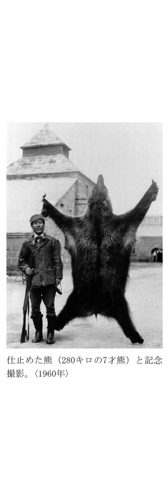
それから数年後、二日も三日も雪のなかに露営する熊撃ちが、体力的にきつくなったので、ヘリコプターで熊を探すことを考えた。
春になって穴から出た熊は、二度と同じ穴には帰らないのである。その習性から考えても、熊はヘリコプターの音に驚いて、もとの穴に引返すということはありえないというのが私の考えであった。
ヘリコプターで回って見ると、かつて三日も四日もかかって苦労して歩き回った所が、三十分もあれば隈なく回れた。
この時、滝川の奥の山の斜面で、三百五十キロもあろうかという雄の大熊を発見して、ヘリコプターで追いつめた。
牛に近いほどの大熊が、ヘリコプターの音と風と速さに驚いて、深い雪を蹴散らしながら、山の斜面を気が狂ったように逃げ回るのである。
最後は、さすがの大熊も息ぎれして赤い舌を出して、ほとんど動かなくなるほど追いつめた。
近くに降ろせと操縦士に命令したが、はじめて見た死にもの狂いの大熊の様子にびっくりして、危険と判断したのかどうしても着地をしないのである。ヘリコプターの上からは、規則により撃つことが出来ないので、縄をつかってヘリコプターから飛び降りる決心をし、その用意のため山の麓にかえり、再び引き返したが、その熊はどうしても見つからなかった。
仕留めることは出来なかったが、滝川の奥山の雪の斜面を舞台に、暴れ回ったこの熊は、私の脳裡に強くきざみこまれた、一生の思い出となった熊である。
余市の海から日本海に、大きくつき出しているのが、風光明媚で知られる積丹半島である。半島の尖端に、積丹岬と神威岬という二つの岬が両耳のようにつき出ている。
その沖合いに、毎年八月にだけやってくるオウヨ（アイヌ語）と呼ばれる魚がいる。オウヨはスズキ科の魚で和名をイシナギと呼ばれ、目方は三十キロ、長さは一メートル以上もあり、味が非常によい大魚である。
この魚を自分の手で釣り上げるのが念願であった。
積丹岬の近くに入舸という小さな漁村がある。その漁村に杉野さんというオウヨ釣りの名人がいた。
私はこの人の指導で、オウヨに挑戦し、五年目にやっと一匹のオウヨを釣ることが出来たのである。
オウヨ釣りには二メートルあまりの小さな磯舟で出かけるのである。生きた烏賊を餌にし、針から二メートルぐらい細い針金をつかった釣り紐をつかい、百メートルぐらいまで降ろすのである。
私がオウヨを釣った時にも、小舟は水に浮ぶ木の葉のように、オウヨの力で沖にひっぱられたのである。
釣り上げるまでに二時間もかかったオウヨは、熊とともに北海道以外では味わえなかったであろう。
生涯の忘れることの出来ない私の思い出になっている。
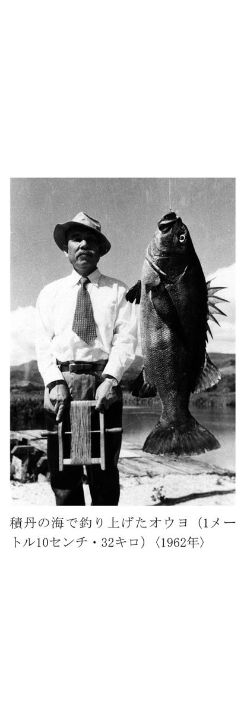
第十一回冬季オリンピック札幌大会（一九七二年）第四日目の二月六日、札幌の抜けるような青空に、日の丸が三本、一気に上がった。笠谷が、僚友二人をがっちりと抱きしめた。そして金・銀・銅を三人は高々とかかげた。
宮の森シャンツェで行われた七十メートル級ジャンプで、ニッカの社員、笠谷幸生選手（二十八歳）が一回目八十四メートルを、完ぺきなフォームで飛んだあと、二回目も同じように最長不倒の七十九メートルで合計二四四・二点をあげて優勝、金野昭次選手が二位、青地清二選手が三位となり、日本が三つのメダルを独占するという輝かしい成績をおさめてくれた。
『笠谷やりました......』というアナウンサーのはずんだ声を耳にしながら、色々な思いが私のなかを去来した。
戦争中のことであった。余市中学の校長先生が陸軍の将校を伴って、私を訪ねてきた。スキーのジャンパーは例外なしに優秀な飛行士になっており、空に舞いあがる経験をさせることが、飛行訓練に非常に効果的であるという話の後、余市に中学生用のジャンプ台をつくってもらえないだろうかという申入れであった。
当時、大倉山には大きなシャンツェがあったが、余市の選手が初めて飛ぶと、目まいがするという嘆きを耳にしていたので、早速つくらせたのが、今の余市高校の裏山にある桜ヶ丘シャンツェである。これが完成したのが、二十八年前であり、奇しくも笠谷選手が生まれた年であった。
このシャンツェは、私の名をとって竹鶴シャンツェという呼び名で、余市の生徒達はジャンプに次第に親しんでいった。
余市をジャンプ王国にした第一人者は長田光男さんである。長田さんは、かつて複合の名選手であり、余市東中学校の校長に赴任されて以来の、指導と熱意がジャンプ余市の名を生み、育てたのである。
その結果、秋元信行、新田政夫、笠谷昌生、佐藤昇などの名選手がつぎつぎ出てきた。中でも笠谷昌生は、豪快なジャンプで知られていた。飛距離では抜群な力を持っていたが、着地の失敗でオリンピックに出場できず、悲劇の名選手といわれた。
弟の幸生は、この兄の指導をうけて、同じ余市高校出身の藤沢隆と共に在学中に国際級のジャンパーに成長していった。
明治大学を出る前の年、笠谷は父の三吉さんともども私を訪ねてきた。ぜひニッカに入社したいので、なんとかお願いしますとのことであった。当時ニッカには、ジャンパーは一人もいなかった。私は笠谷親子に、北海道にはジャンプで有名な企業や銀行があるので、そういう仲間環境に恵まれた会社の方がよいのではないかと再三すすめたが、どうしてもということでニッカに入って来た。そして北海道工場の総務課で、社業に励みながら札幌オリンピックへの白い長い道を黙もくと進んだのである。きびしい努力と精進で、日本スキー史始まって以来の快挙をやってのけてくれた。
このように奇しき縁でかかわり合っていただけに、優勝の喜びは私には一入であったが、笠谷を頂点とする多くの名選手を生むのに竹鶴シャンツェが役立ったことに一人で満足した。
国際スポーツの世界は、年齢的に非常に若返った。ジャンプも中学からではもう遅くなってきたようである。あらゆるスポーツがそうなってきた。
いま私は、笠谷の優勝を記念して余市に小学生用のジャンプ台を建設し、笠谷シャンツェ（12）と名付けたいと思っている。
ジャンプも、生涯の忘れることのない思い出になったのである。
英国の新聞が報じたニッカの脅威
ウイスキーにとりつかれた人生
昭和四十四（一九六九）年七月十二日、イギリスのデーリー・エキスプレス（The Daily Express）は『日本、スコッチの市場に侵入』という見出しで、大きな記事を掲載した。
これはデーリー・エキスプレスのニューヨーク駐在記者たちが、ニューヨーク・タイムスにのったニッカの広告を見て......。
〝ニッカとは一体どんな味がするのか、われわれは町で一本、五十八シリング四ペンス払って、ニッカとスコッチの最高級もの二本、計三本を買ってかえり、新聞社でブラインド・テスト（目かくしテスト）をしてみた。その結果、これが日本製だろうと皆んなが指摘したウイスキーは、悲しいことにスコッチでも最高の十二年ものであった〟
とその様子を詳しく書き、さらに
〝英国がもっていた自動車のアメリカ市場を日本は食い荒らしたが、次に日本は英国のもっとも神聖な輸出商品スコッチになぐり込みをかけてきた〟
という警告記事を英国に送った。この記事は英国で相当の反響を呼んだときいている。
スコットランドでウイスキーの勉強をしたのが五十余年まえである。北海道余市に工場をつくって三十余年になる。その間、日本でウイスキーを育てることしか考えなかった私には痛快なニュースであった。
今日の英国の国際的な立場をその記事が象徴しているともいえよう。
数年前ダイヤモンド社より〝ヒゲと勲章〟という私のことを書いた本を出した。〝ヒゲ〟というのは私のことであるが、〝勲章〟はエリザベス女王は勲章を私にくれてもよいじゃないかと冗談をいったことからとったのである。
スコットランド専売のウイスキーづくりをもちかえった男という意味で、イギリスは、あなたによい感情をもっていないのではないか、という質問に、
「冗談ではない、スコットランドでしかできないウイスキーを日本でつくり、日本はどんな片田舎でもウイスキーが飲まれている。日本はスコッチの大きな市場になっているからエリザベス女王には感謝されてもよい」という返事を軽い意味でいったことがあった。
勲章といえば、ウイスキーづくりをしたということで、昭和三十一（一九五六）年に黄綬褒章、昭和四十四（一九六九）年の勲三等瑞宝章につづき、昭和四十五（一九七〇）年には北海道開発功労賞をいただいた。
開発功労賞は北海道の経済、社会、文化の発展に貢献したということで道庁からいただいたものである。
北海道には、私のほうこそ感謝をし続けているのにと恐縮した。ウイスキーづくりに恵まれた気候、風土は天からの恵みである。
北海道の天恵があったればこそニッカが生まれニッカが育ったのである。
スコットランドで、ウイスキーの勉強をした時、ウイスキーづくりを知れば知るほど、風土がつくるもの、いや風土そのものがウイスキーだということを知り、日本でウイスキーが育つだろうかという不安におそわれたことがあった。
「あなたは先見の明があった」という人もいるが、ウイスキーがこんなに飲まれる時代が来るなどとは夢にも考えたことはなかった。
嗜好の変遷に私は、ただただ驚いているだけである。日本で初めてモルト・ウイスキーをつくって売り出したころ、こんなこげくさいものが飲めるか、ときらわれていたのが昨日のことのようでもある。
私のことを「恵まれた星のもとに、ウイスキーだけに生きてきた幸運な男という人がいる。あの男からウイスキーをとったら何もなくなる」「あいつはウイスキーばかだ」といわれたこともあった。
しかし、考えてみると〝幸運な男〟から〝ばか〟まで、それぞれの批評が私の場合は、みな思い当たるのである。
ウイスキーという、科学だけでは解明しきれない、ある意味で魔性のようなものに自分がとりつかれて、自然の神秘のような力と、人間のあいだをさまよい続けてきたのではないかと思うこともある。
世の中の学問も技術も進歩を続けているのに、約半世紀前の勉強がそのまま役立つのがウイスキーづくりの世界である。
ウイスキーの熟成を科学の力で早める試みは昔からあったが、すべて失敗している。自然と時だけがその解決者なのである。またスコットランドに昔から伝わっている製造法が、今でもよいウイスキーをつくる唯一つの道なのである。
日本の本格ウイスキーの歴史は、まだ半世紀に満たず、三百数十年の伝統をもつスコッチには遠く及ばないが、品質的、技術的には全く比肩できるところまで来てしまった。それは驚くような進み方である。
昭和九（一九三四）年、北海道でうぶ声をあげて苦難の道を歩いてきたニッカも、ウイスキー専門の会社として、どうやらというところまで成長してきた。
北海道の原酒工場、仙台の原酒工場のほかに、東京の麻布と千葉県柏市、西宮、弘前、それに九州の鳥栖にそれぞれ製品工場をもち、売り上げも約三百億円（年間）になった。
急ピッチで伸びている日本のウイスキーのすう勢から見て、世界の各国で、スコッチと日本のウイスキーが四つに組む時代はそう遠くはあるまい。
また戦前までウイスキーは日本人になじみの薄い酒であった。ところが今は家庭でも広い世代に飲まれる酒になった。
さらに、ビールとともに世界各国の人がウイスキーになじみ、〝世界の酒〟になってきた。
これもこんどの戦争のあと起こった現象である。
私を〝幸福な男〟という人たちは、これらのことを全部総合した感じでいわれていると思うが、ウイスキーづくりに専念して生きてこられたのは、ほんとうに恵まれていた人生だったというのが実感である。
顧みるとウイスキーで苦しみ、ウイスキーで喜んだ人生であった。
註
（１）ウイリアム教授と記されているが、実際はウィルソン教授の誤りと思われる。またウィルソン教授は、グラスゴー大学ではなく、王立工科大学の教授である。後述（軍用船で大西洋を渡る）で、竹鶴は応用化学科に入学したとあるが、グラスゴー大学には応用化学科はない。竹鶴はグラスゴー大学でも学んでいたが、王立工科大学の夏期講座を受けた記録が残されている。
（２）昭和二十四（一九四九）年、大日本麦酒を分割する形で創立。昭和二十九（一九五四）年、ニッカウヰスキー（株）に資本参加。平成元（昭和六十四・一九八九）年、アサヒビール（株）と社名を変更する。
（３）現在の広島県立忠海高等学校。
（４）現在のメルシャン（株）の前身。
（５）ここでの「グレンリベット蒸留所」は、エルギンにある「ロングモーン・グレンリベット蒸留所（当時の名称）」のことと思われる。当時は蒸留所の名前に「グレンリベット」をつけることが多く、竹鶴も通称として「ロングモーン・グレンリベット蒸留所」を「グレンリベット蒸留所」と記した可能性が高い。ただし、当時竹鶴は、さまざまな蒸留所を回って実習をしていたため、確定が難しい。
（６）グラント氏は「ロングモーン・グレンリベット蒸留所」の当時の工場長である。
（７）エラとリタの父、サミュエル・キャンベル・カウンは、大正七（一九一八）年、竹鶴が日本を経つ前に亡くなっている。この文章のなかで、竹鶴がリタの父と生前に会ったかのように記しているのは、竹鶴のカウン家への配慮があったからだろうと思われる。詳細は巻末寄稿「〝ジャパニーズ・ジェントルマン〟かくありき」を参照。
（８）弟の正式名は、ラムゼー・キャンベル・カウン。
（９）平成元（一九八九）年に、原酒混和率によるウイスキーの級別は廃止された。
（10）リタ幼稚園は現在も余市にある。
（11）現在の余市工場の貯蔵庫は26棟である。
（12）竹鶴シャンツェに併設された笠谷シャンツェは、余市出身の船木和喜選手を輩出。今は場所を移動し、サマージャンプも可能な竹鶴・笠谷シャンツェとして建設され、多くのジャンパーに愛されている。
竹鶴コラム｜１｜ウイスキーの正しい飲みかた
「ウイスキーの飲みかたは、ストレート、水割り、オン・ザ・ロックといろいろあるが、どれが一番ほんとうの飲みかたか」
これは、私によくある質問の一つである。
しかしウイスキーは嗜好品であり、人それぞれ一番うまいと思う方法で楽しむべきものだと思っている。
またウイスキーは、飲む人の量によっても違わねばならない。たとえば、毎日ウイスキーを飲んでいる人の味わいかたと、たまにしか飲まない人の味わいかたとは、おのずから違ってこなければならない。
そうしたことを考えながら、ウイスキーの味わいかたを述べてみよう。
ウイスキーの香りをかぐとか、味を味わうとかいう意味ならば、ストレートがいい。ところが、これを毎日やっていると、胃の粘膜を刺激しすぎる。刺激しつづけると胃をいためるおそれもある。だから、毎日飲むような人は、ストレートは避けたほうがいい。
こんな人向きには、水割りが適している。水でうすめて、アルコール分を十二度から十三度ぐらいのあいだにする。
つまり、ウイスキー〝一〟に対して水を〝二〟、倍量の水でうすめるのがよい。これなら、毎日飲んでも、胃の粘膜をいためることはまずない。
水割りには氷を入れてもいいが、あんまり冷やしすぎてはダメだ。ビールでもあんまり冷やしすぎたのでは味が落ちるように、ウイスキーにも適温というのがある。ビールと同じ、摂氏八、九度が適温である。
水割りの水は、何といっても井戸の水がいい。
そうした意味からいえば、オン・ザ・ロックはあまり感心しない。あんまり冷やしてはせっかくの香りが消えてしまう。
ホットも感心しない。スコットランドでは、ホット・ウイスキーのことをホット・トディ（Hot Toddy）という。これは風邪にきくのである。
以前は、スコットランドでも、水割りよりも炭酸割り、つまりハイボールを飲む人が多かったが、最近では、水割りを飲む人が多くなったようだ。日本でも同じ傾向である。
それに炭酸水は少々きつすぎる。それだから、水割りにくらべて酔いが早くまわる。胃を刺激するからだろう。
国々によって、飲みかたにまで、それぞれの特徴があるのはおもしろいことだと思う。たとえばアメリカ人はストレートのまま飲んで、あとから水を飲む。イギリス人は、水でうすめて、それから飲む。これはイギリス人のほうが正しいと思う。
イギリス人のウイスキー通が私にこんな話をしたことがある。
〝アメリカ人のほうは、胃のなかでまぜ合わせればどうせ同じだという考えかたなのだろうが、そうはいかない。生のままで飲むと、その瞬間に、胃の粘膜に強い酒が触れる。それに先に入っていたウイスキーと、あとから入ってきた水とが、うまく混合されない。比重もちがうからだ〟
しかし、これは、しょっちゅう飲んでいる場合であって、たまにしか飲まない人であれば、好きなようにお飲みになって結構。飲みかたにこだわる必要はあまりない。
しかし、アメリカで飲まれているように、ウイスキーをビールやコーラにまぜて飲むのは、よいウイスキーの飲みかたとしては邪道だ。ウイスキーとしてはツンときて飲めないような、例えば安もののバーボンなどをごまかす飲みかたともいえるのである。
飲みかたについて、もうひとついうと、楽しみながら〝時間をかけて飲む〟ということだ。つまり、チビチビ長く飲むこと。日本人は、どうもせっかちで、早く酔っぱらう傾向が強い。これはまちがいで、ウイスキーは酔っぱらうためにあるのではない。楽しむために飲むものだ。楽しんでいるうちに自然に酔ってくる......そんな飲みかたをぜひしてもらいたい。その点、フランス人は上手な飲みかたをする。
どうも日本人は、グイグイ飲んで、すぐにゴロリとなってしまう。これではあまりに味気ない。私にいわせれば、なにのための酒か、といいたくなるのである。
酒だけではない。食事にしてみても、奥さんが材料選びに心をつかい二時間も三時間もかかってつくった料理をご主人は帰ってきて、五分間でシャブシャブとやって、ソッポを向いて新聞を読んでいる。これでは奥さんはおもしろくないし、かわいそうである。
その点、フランス人には感心する。ゆっくり時間をかけて食事や酒を楽しんでいる。心からエンジョイするのである。
楽しみはできるだけ長く──それが人生を幸せにする方法であるといえよう。
それから、種類のちがった酒、たとえば日本酒のような醸造酒と、ウイスキーのような蒸留酒とをチャンポンに飲むと悪酔いするというが、これも結局は、量の問題だろう。その場合にも、たえず自分の酒量を計算して飲むということだ。楽しく飲める自分の酒の量を、はるかにオーバーする飲みかたをすると、どんないい酒を飲んでも悪酔いする。
われわれの専門語にイントキシケイティング・ディグリー（Intoxicating Degree）という言葉がある。日本語に訳すと致酔度である。酒を飲むときには、いま自分はどのくらいの致酔度にあるか、〝今日は少しディグリーが高くなってきたな〟と思ったら、少し休めばいい。こういうとき、飲むのをひかえて、ワァーワァーやってさわいでいれば、アルコールは発散してしまう。ものもいわずにガブガブやっていると、ディグリーがいっぺんに上がってしまい、もう取返しがつかなくなってしまう。
自分の楽しめる範囲で、いろんな酒を飲むのは大賛成である。
フランス料理で魚を食べるときにはホワイト・ワインを、肉だったらクラレットが出る。そういうふうに、料理に合わせた酒の飲みかたがある。
日本の場合にも、最初はノドがかわいているからビールを飲む。サシミが出てきてから日本酒を飲む。食事の終わりかけにウイスキーを飲む、こうした飲みかたも悪くないと思う。
私がウイスキー一途といっても、酒はウイスキー以外は飲まないかというと、そんなことはない。ノドのかわいているときのビールはうまいし、フランス料理にはワイン、日本料理のときは日本酒をのむことがある。
今の流行語でいうＴ・Ｐ・Ｏ（時・所・場合）で飲み分け、楽しむのが〝酒〟だと思っている。
竹鶴コラム｜２｜舌と鼻
日本人の食生活は出されたものを、文句をいわないで食べるのが美徳のひとつとされてきた。
料亭でも旅館でも本人の意向におかまいなく、つぎつぎ皿がならぶ。すこしぐらい味が変だなと思っても、とにかく腹に入れるのである、そして下痢をしたり、集団中毒をおこす。
文化国家といわれる先進国の中で集団中毒を起こすのは日本だけである。
食事にしても、私は十分な注意を払っている。だから宴会の料理は、いっさい手をつけない。目の前でつくる料理しか食べない。宴会の料理などというものは、数時間も前からつくってある。これでは味もおちる。スシにしても、目の前でにぎらせたマグロかヒラメ、これにかぎる。タネが前もってちゃんと切ってあって、たのむとこれに御飯を乗せてくる、これではいけない。
タクアンでも、一時間前に切ったやつはもうダメだ。私の舌は、味というものをちゃんとわきまえている。だから私には食当たりというものがない。
私は変わっているようだが、自分の食べるものは、今でも自分で材料を買いに行く。そして私の指図にしたがって料理させる。私は料理の材料の吟味をたいせつにしている。たとえば、私が烏賊を買うときは、白くなったのは買わない。黒くて、煮たら弾力のある烏賊しか買わないのである。
食事や酒について無神経な日本人と対照的なのはフランス人である。レストランに入っても、なにを食べるかということで時間をかけて、どんな料理でどんな味がするか確かめるのがフランス人である。メニューを見ながら、なにを食べようかとどんなに時間をかけても、いやな顔をされることはない。そうして楽しむのが食事だからである。
私はいつも思うのだが、文化国家というものは、嗜好を高めることにある。
いいもの、悪いもの、新しいもの、古いものを見分ける舌と鼻の持ち主になってもらいたいと思う。
私たちウイスキーをつくるものにとっては、商売がら、良いものと悪いものを飲み分けるばかりでなく、種類のちがいも飲み分けねばならない。
私の最高では、ウイスキー銘柄別に十数種類飲み分けることができた。三十歳ぐらいのときだった。十種類飲み分けることはなかなかむずかしい。私の滞英中、向うに四十種ぐらい当てるエキスパートがいたのをおぼえている。
もっとも、これは、たえずやっていれば、相当の種類を鑑別できるようになる、このことはウイスキー屋ばかりではない。灘あたりの人も、日本酒の銘柄を、相当言い当てるのではないかと思う。
このような鑑別は、主として鼻が行うといってよい。ちょっと考えると舌のようであるが、そうではない、鼻だ。
人間の感覚を五感というが、目、耳、鼻、舌、肌とあるなかで、鼻の能力は先天的なものらしい。舌の能力は、後天的なものが相当にあるようだ。
だから、舌は生まれたときは誰でも同じだといえる。その後の訓練次第で差がつくのである。
フランスに香水が発達したのも、これはフランス民族の先天的な鼻の鋭敏さから来たものだろう。
ウイスキーの賞味にしても、つまるところは〝ノドごし〟にあるのだから、これも舌ではなくて、むしろ〝ノド〟── そのノドは、鼻に通じる。つまり、ウイスキーはどこまでも鼻で鑑別するものである。
自分の舌と鼻に自信をもち、主体性をもってよいものと、わるいものを見分けるよう心掛けてほしい。そのことは人生を楽しむことに通じていると思う。
随想｜１｜酒税法と竹鶴さん
星 野 直 樹
酒税法改正がつくった日本のウイスキー
それは大正十四年、私が大阪税務監督局の間税部長を勤めていた時分のことである。ある日、私の席に堂々たるカイゼルひげをつけた一壮漢が現われた。そして私の親友、石渡荘太郎の紹介状を示し、私にウィスキーの税について是非自分の意見を聞いてくれということであった。
私は喜んでその要求に応じた。その人が竹鶴君であったのである。
竹鶴君はまず自分の経歴、立場を説明した。竹鶴君は大阪高等工業の醸造科を卒業した後、本格的ウィスキーの醸造を研究するため、スコットランドに渡り、そこで数年の間、醸造工場にはいって職工として働く一方、グラスゴー大学で醸造に関する勉強を続けた。そして、大体眼目はつかまえたという確信ができたので、日本に帰ってきた。
あたかも当時、赤玉ポートワインを売り出して成功していた鳥井信治郎氏が、本格ウィスキーを造ることを考えており、その中心となって働いてくれる人を求めていた。
竹鶴君のことを聞いて、是非と熱望した。かくて大正十二年、竹鶴君は鳥井氏の寿屋にはいり、技師として専ら本格ウィスキーをつくり上げる仕事に当たった。
まず、地を天王山のふもとの山崎に選び、ここに工場を建設し、一意専心、本格ウィスキーの醸造の基礎をつくり上げて来た。
そして今ようやく、ヨーロッパに負けないウィスキーが立派にできた。いよいよこれから醸造を始めようと云う段階に達した。
が、ここに至って思いもよらない問題にぶつかって、はたと困っている。何とかこの難問を突破できないか。これを助ける方法はないか。実はそのことをお頼みしに貴方を尋ねて来たのだということであった。
その竹鶴君のぶつかった壁とはいかなるものであったか。
以下、簡単に説明する。
当時、ウィスキー、ブランディ、ブドウ酒等、いわゆる洋酒はすべて、税法上は酒精含有飲料といわれていた。そして、清酒、味醂、焼酎等、日本古来の酒に比べるとかなり高い税金をかけていた。
しかもその取り方も全く違っていた。即ち日本酒は製造した次の年度一年間に分割払いすることになっていたが、酒精含有飲料については製造の直後、その場で全部の税金を一度に取ることとなっていた。
もっともそれまでのウィスキーは、他の洋酒同様、アルコールにウィスキーの素のようなものを加え、これに水を加えて、適当の濃度としたものをかきまわしてびんに詰め、直ちに店に出して売っていた。それはそれですんでいた。
ところが竹鶴君の新しい本格的なウィスキー造りでは、醸造した後、できたウィスキーの原酒を適当に混ぜ合わせ（ブレンド）、これを樽の中に詰めて、ねかせておくことが絶対必要だ。しかもこのねかされている時間は数年に達し、長ければ長いほど味も良くなり、品質もすぐれたものとなる。それが絶対の条件である。
これに対し、製造して樽に詰めた時、直ちに税を払うということとなると、ウィスキー製造者としてはまだ売ることはできない、売り出すまでにはなお数か年が必要だ。したがって、全く収入のない製品のために予め莫大な税を納めておかなければならないこととなる。その税率はきわめて高い。結局、その負担の重さにとうてい耐えられない。
これを何とかしなければ、本格的ウィスキーは、自分のみならず、日本ではとうていできない。何とかこれを救う道はないか。
結局、竹鶴君の訴えているのはこのことであった。
私は静かに黙って聞いている中に、竹鶴君の言うところはまことに正しい。何らかの処置を取る必要があるという心持ちとなった。
そこで、救済の方法はないか。当時の法の下で、救済の道はないかと考えた。
その結果、私の頭の中には一体、樽に詰めた時をもって製造が終わると見るそれまでの見方が、果たして正しいものであろうかという反省が起こった。
蓋し樽に詰めるというのは、ウィスキー製造工程中の一齣に過ぎない。製造工程はまだ終わってはいないのではないか。
むしろ、いよいよ熟成してびんに詰め、立派に売出し体制のできた場合に、初めて製造工程は完了し、したがって課税を行う時期にはいるのではないか。
竹鶴君の新しいウィスキーについては、課税の方法、時期を改めるのが今の税法の下でも当然ではないかと思うようになった。私は、局内の関係者を召集して皆の意見を聞いた。皆この意見に賛成した。
ただ、酒の姿を成したものに何の処置もしないでそのままにしておけば、取り締まりができず、間違いの種となる心配はある。
製造工程が始まったものは、勝手にいじったり、動かしたりすることを認めるわけには行くまい。どうすればよいかこれに対する案として、税務署で樽に封印をした。
私はこれについても皆の意見を徴した。
上述の如く今までのやり方が不適当であることにはだれも異存はなかった。そして、安全管理のためには、ウィスキーを入れた樽には税務署で封印による方法は妥当なやり方であろう。これなら現行法規とも衝突はしない、いわば時宜に適した運用といえよう、ということであった。
ただ、これまでのやり方とは明らかに違っている。したがって、大阪税務監督局ひとりで行うのは適当ではない。全国的に同じ行き方に改めなければならない。
すなわち、大蔵省主税局の同意を得ることが必要であるという結論に達した。
早速、案を具して主税局に送り、同意を求めた。そして実情を詳しく説明した。
当時、主税局長は黒田さん、国税課長は藤井さん（後の大蔵大臣）、その下に石渡君（同じく後の大蔵大臣）が事務官として働いていた。いずれも分かりは早い人であった。
主税局からはすぐ、そのやり方が適当と認める。これを進めていって差しつかえないという回答がきた。
そこで私は、竹鶴君に早速この旨を告げ、遅疑しないで本格的ウィスキーの製造に着手するよう激励した。
かくて竹鶴君は勇躍して、仕事を進めていった。
その後、私は大蔵省に帰り、主税局で、藤井さんの下で石渡君と机を並べて仕事をすることとなった。
一方、竹鶴君は天王山のふもとで、心血を注いでウィスキーを造っていた。もちろんその噂を私も聞いてはいたが、本物が世に出た話はなかなか耳に入らず心まちにまっていた。
後で聞くと、ようやく世の中に売り出し始めたのが昭和四年だという。が、まだまだ、売行きの伸びは遅々たるもので、広く世の耳目にはいるようにはならなかったのである。
さらに昭和七年には、私は大蔵省を離れて、満州（現在の中国東北部）に渡った。したがって、竹鶴君のことも、ウィスキーの発展も、私の耳にははいらなかった。
ところが越えて昭和十五年、私は日本に帰って来た。そして、その時分には本格ウィスキーが立派に一人前になっていることを聞き知った。
もちろんそれは竹鶴君の造っているものだと私は信じていた。ところが、思いもよらず札幌で偶然会った竹鶴君から、当初の契約に基いて竹鶴君は昭和九年、鳥井氏のもとを去り、独立して、北海道余市でニッカウヰスキーを造っていることを聞いた。
そして、竹鶴君が初めに手掛けたサントリーも、今日竹鶴君がはぐくみ育てているニッカも、共に立派な本格的ウィスキーとしての歩みを着実に続けており、今や日本には立派に本格的ウィスキーが根をおろし、育っていることを竹鶴君の口から聞いたことを何よりも私は喜んだ。
その後は税法も改まり、酒税には広く蔵出課税が採用されるようになった。ウィスキーも、はっきりと明文で蔵出の際、課税されるようになっている。
が、当時は、この課税上の便法を考案し、これを認めなければ、本格的ウィスキーは作られず、少なくともその歩みはかなり遅れたことは疑いない。
本格的ウィスキーが日本に生まれたのは、どの点から見ても全く竹鶴君の苦心、努力の賜ものである。竹鶴君がいなかったなら、少なくとも日本のウィスキー発展はもっとずっと遅れたことは疑う余地はない。竹鶴君は日本のウィスキーの創造者である。
そして私も、この竹鶴君の本格ウィスキー製造という大きな仕事に、縁があって接触し、いささかこれが推進に寄与、貢献したことをひそかに一生の誇りとしている。
が、これも全く竹鶴君のおかげである。私は常々、その時分から今日に至るまで、いつも竹鶴君の努力の跡を思い浮かべては、敬意と謝意とを感じないではいられないのである。
星野直樹（ほしのなおき）※左記略歴は原本刊行当時のもの。
明治25年 横浜生まれ
大正６年 東京帝国大学政治学科卒業
大蔵省入省、大阪北税務署長、熊本、大阪各税務監督局経理部長、間税部長
大蔵省総務部財産課長
昭和７年 満州国財政部総務司長
15年 企画院総裁、国務相、貴族院議員
32年 ダイヤモンド社取締役
39年 同社代表取締役会長となり現在に至る
随想｜２｜竹鶴さんと私
野 田 卯 一
リタ夫人と私の妻の独身時代からの結びつき
竹鶴さんは私がもっとも気持よくおつき合い願っている先輩のひとりである。
いつごろから、おつき合いするようになったか、確かなことはさだかでないほど古い話しだが、二重の結びつきがあって親しくなった。
一つは、私が課税の問題などで酒類と縁の深い大蔵省に勤めていたため、ウイスキーづくりに従事してこられた竹鶴さんと、ご縁ができたことである。私は若い時分に税務署長もつとめたことがあるが、直接、管轄区域内に竹鶴さんの工場のある町の税務署長であったことはない。長年大蔵省に勤めている間に、いろいろなことでヒゲの竹鶴さんとのおつき合いが深まって行ったのである。
もう一つは、私の妻がまだ私と結婚する前から竹鶴家とご縁があったことである。
妻は女学校を出てから結婚するまでの娘時代に、英会話を勉強したいと志したことがある。さきに英語を教えていただいていた姉の紹介でリタ夫人と知り合い、英会話を学ぶようになった。
だから竹鶴さんのお宅とは私よりも妻の方が先に親しくなった。竹鶴さんは著書「ヒゲと勲章」のなかで、摂津酒造を退職したころの話しとして、つぎのように綴っておられる。
......文字どおり摂津の阿部社長とは涙をのんで別れた。無念の思いに駆られて飛びだしたのだが、さりとてどこで働くというあてもなかった。（中略）
近所にキリスト教の桃山中学があり、リタはローリング校長夫妻と親しく交際していた。私が摂津を出て、食うに困っているのをみて同情し、「あなたには資格がある。化学の先生をなさい」とすすめられ、私は学校の先生になった。リタは帝塚山学院で英語を教え、かたわら、頼まれて良家の子女に英語を教えていた。......
リタ夫人はよく知られているとおり、竹鶴さんが本物のウイスキーを自らつくり出そうという大志を抱いてスコットランドヘ渡り、修業を重ねておられたとき、恋愛で結ばれた方で、美人であるうえに実によく気のつく優しい女性であった。
竹鶴さんと私とのおつき合いも長いが、私の妻と今は亡き竹鶴夫人リタさんとの結びつきはさらに長く、竹鶴家と私の家族との関係は伝説的といってもいい位のものである。
竹鶴さんを語るにはあの立派なヒゲのことを忘れることができないが、私には、見事なヒゲに調和した特異な風ぼうをきわだたせる赭顔──白い歯をみせて実に愉快そうに笑われる笑顔の素晴らしさが印象的で、まさに千鈞の魅力があると思う。
性格も竹を割ったようにさっぱりしている。誠実さ、ガンバリ屋、親切な人柄については他に語る人も多いだろう。
私は青年に対する竹鶴さんの愛情について感謝のことばを記したい。
竹鶴さんは若い人の面倒をよくみることでは定評のある人である。若い人のための仕事には深い理解をもっておられる。
私が個人的に入学や就職について世話した人たちでつくっている双葉会という集まりがあり、長い年月の間に会員の数も一千名におよぶほどになっている。
私にとって、毎年、学校を卒業して就職した人たちを招いて、双葉会の人たちと共にお祝いの会を催すのが最も楽しい年中行事の一つとなっているが、竹鶴さんが経営しておられるニッカウヰスキーの東京港区にある麻布工場をいつも貸して頂いている。この工場は、戦前毛利侯爵家の邸だったところで、戦後は東京都の所有であったのをニッカが払い下げを申請して難航したとき、私の仲介で円満に払い下げとなったという因縁がある。
竹鶴さんは毎年快く会場を提供してくださるばかりでなく、多忙な時間を割いて、この集いに出席されることもあり、春秋に富む青年たちに、豊かな人生経験にもとづく慈愛の心のこもった味わい深い話しをされることもある。
そのうえ、ニッカのあらゆるウイスキー、その他の製品を飲み放題にしてくださっている。竹鶴さんのご好意はいつも若い人たちに爽やかな感銘を与えている。
竹鶴さんのウイスキーづくりの腕は一流中の一流である。しかしそれにもまして、人間としての竹鶴さんは超一流である。
ニッカウヰスキーは、魂の透徹した態度が実を結んだものであり、人間竹鶴の良心がウイスキーに結晶したものともいえよう。
ひとつの例として、私が竹鶴さんのために尽力することができたエピソードをご紹介したい。それは人間竹鶴がいかに信頼に値する人物であるかを物語るものだからである。
ニッカが昭和二十八年、その経営を拡大、強化するためにアサヒビールと提携した時のことである。
私は、アサヒと提携するのはよいが、ニッカウヰスキーの独自性、創業以来の企業イメージが急激な改変によって損われることを懸念した。また経営者としての竹鶴さんの地位が揺らぐのではないかという心配もあった。
大きな資本力、販売力のある企業と提携した場合、しばしば創業経営者が追い出される例が少なくないからである。
キング・オブ・ウイスキーの地位が動揺することも恐れた。
幸い、提携先のアサヒビールの山本為三郎社長は大蔵省とはたいへん親しい間柄であり、私も親しくおつき合い願っていたので、山本さんに会って、私の懸念していること、希望したいことなどについてよくお話しし、竹鶴さんの地位の確保について心からお願いした。山本さんは私の希望を快くうけ入れてくださった。
お話ししてみて、山本さんが竹鶴さんの良心的なウイスキーづくりについて十分な理解をもっておられることがわかり、技術面でも、経営面でも、よき提携となるよう、最大限の配慮を行うことを確約された。こうして竹鶴さんがこれまで通りニッカの中心人物として活躍することになった。
それ以後、竹鶴さんはつぎつぎに優れた製品を生み出して、ニッカのめざましい発展をもたらしたことは広く知られているとおりである。
私の心配は全くの杞憂に終わったようにみえるが、ニッカの提携先のアサヒビールの山本さんが立派な人で、竹鶴さんをよく知る器量人であったことも幸いだった。しかしその山本さんに全幅の信頼感を抱かせた竹鶴さんの偉さが、最も望ましい結果を生んだ一番大きな原因である。
私も竹鶴さんのために微力を尽くすことができたことを心から喜び、よき思い出としている。
北海道の余市工場を見学していらい、私は折りにふれて、「あそこほど良心的な工場は数少ないと思う。ニッカウヰスキーは掛け値なしに素晴らしいウイスキーだ」と人に話すようになった。私をしてニッカのＰＲまでさせるのも、竹鶴さんの人徳のなせるわざであるといってもいいすぎではあるまい。
野田卯一（のだういち）※左記略歴は原本刊行当時のもの。
明治36年 岐阜市生まれ
東京帝国大学英法科卒業
昭和２年 大蔵省に入省
外資局長、主計局長、専売局長官、大蔵次官を歴任
25年 参議院議員
26年 吉田内閣建設大臣 また国務大臣として北海道開発庁長官、首都建設委員会委員長、
行政管理庁長官となる
28年 衆議院議員、以来連続八回当選今日に至る
巻末寄稿｜１｜旅と作家とウイスキー
矢 島 裕 紀 彦
（ノンフィクション作家）
漱石、旅先で旧友と酒杯を交わす
日常を離れた旅は、心も解き放つ。
明治の文豪・夏目漱石が、その晩、とある倶楽部のバーでグラスを傾けていたのも、中国大陸まで出かけてきた旅行者としての解放感と高揚感に背中を押されてのことであっただろう。もともと体質的にほとんど酒の飲めない漱石にしては、稀有のこと。明治四十二（一九〇九）年九月六日、大連での出来事であった。
満年齢で四十二歳となる漱石の傍らには、古くからの友人で南満州鉄道総裁を務める中村是公の姿がある。漱石と中村は、大学予備門（のちの一高）の同級生。同校に通いながら同じ私塾で講師のアルバイトをし、その寄宿舎の北向きの三畳間で寝起きをともにしていたことがあった。お互いにアルバイトで稼いだ金をテーブルの上にごちゃまぜに置いて、その金で日々の生活を送る兄弟同然の暮らしをしていた。中村がボート選手として優勝し学校から図書費を支給されると、「俺は書物なんかいらぬから御前の好きなものを買ってやる」と言って、漱石がシェークスピアの『ハムレット』を買ってもらったという逸話も残る。
そんな旧友と旅先で交わす酒杯は、甘美な味を蔵していただろう。この夜、漱石が口にしたのは、同じ蒸留酒でもウイスキーでなくジンをベースにしたカクテル、ジンコークだったらしいが、中村は相当に飲める口だから、自然と舶来のウイスキーにも手をのばしたろうか。心地よい酔いが、次第にふたりの胸の奥にしみいっていく。倶楽部を出て漱石が夜空を見上げると、かつて見たこともないほど深く高く澄み渡っていて、星の光が美しくまたたいていたという。
ホテルに帰り着いたのは、深夜十二時。翌日も漱石は、中村とともに市内の中央試験所を見学に訪れ、そこで実施された化学者・高峰譲吉によるウイスキーづくりの研究について話を聞いた。聞きながら、
「この試験場でウイスキーが出来るようになったら、中村がさぞ喜んで飲むことだろう」
漱石はそんな感懐を抱く。
明治期の日本人は、このように、舶来のウイスキーを嗜みつつ、自分たちの手でウイスキーを生産することに、試行錯誤で取り組みはじめていた。とはいえ、まだなかなかイミテーションの域を出ない。京都郊外山崎の地に、日本初の本格的なウイスキー蒸溜所が完成するのは、この十五年後のことである。
内田百閒の汽車旅は駅構内の「一盞」から
漱石晩年の愛弟子のひとり、内田百閒は、師匠とは対照的に大酒家であった。もともとが岡山の造り酒屋の息子。日本酒、ウイスキー、ビール、ワイン、シャンパンと、種類を問わずに愛飲した。その旨さと功徳を肝に深く銘じているから、「酒」と呼び捨てにするのも憚られ、いつもていねいに尊称をつけ「お酒」と呼んだ。
昭和二十五年（一九五〇年）秋、還暦を過ぎた百閒は、何の用もないのに、汽車に乗って旅に出ようと思いついた。行き先は大阪。心臓にちょっとした持病もあり、ひとり旅は嫌なので、旧知の若い友人で国鉄職員の平山三郎を連れていくことにした。随筆『特別阿房列車』に綴られる汽車旅である。
出発の日、百閒と平山は、まずはともかく東京駅に向かう。
東京駅にきたのはいいが、乗ろうとしている十二時三十分発の特急列車が満席で切符がとれない。行き当たりばったりの旅にしたいから、事前に東京駅へ行って様子を聞き合わせていながら、わざと予約をしていないのだ。さんざん苦労して、駅長室まで足を運んでようやく切符を確保するや、百閒は大喜び。平山を誘って駅構内の食堂に赴き、ウイスキーを注文する。
《ほっと安心したところなので、こう云う時の一盞はうまい》
百閒は、簡潔な中に実感をこめて、前記随筆にそう記す。「一盞」という言葉を選びとっているところに、百閒のウイスキーに対する思い入れの深さを感じる。飲み方はストレート。平山も旨そうに、嘗めるようにしてグラスを空けた。ふたりは調子づき、すぐにお代わりを注文していく。
百閒はそのうち、隣の席でビールを飲んでいる客が気になってくる。昼間から赤い顔をして行儀が悪い、などと不快感を募らせていく。平山に同意を求めると、その顔も少し赤くなりかけている。そこで改めて、自分もウイスキーを飲んでいることに気がつくというおとぼけぶりだ。
《仕方がないから、これは旅中の例外であって、旅の恥は搔き捨てだと云う事にした。尤も旅だと云っても切符は買ったけれど、汽車はまだ出ていないし、乗ってもいない》
こうして、愉快でとぼけた味わいの鉄道旅行は、ウイスキーの乾杯とともに幕を開けていくのである。
太宰治のウイスキーは悲劇か、喜劇か
太宰治が、友人で劇作家の伊馬春部とともにウイスキーのポケット瓶を携えて熱海へ向かったのは、内田百閒の『特別阿房列車』の旅より三年前、昭和二十二年（一九四七年）の九月だった。銀座で宝石や古美術を商う店の若主人の、招きであったらしい。
このとき太宰と伊馬は、あらゆる名詞を、悲劇名詞と喜劇名詞に分類するという遊びをしながら、東海道線に乗った。朝は悲劇で夜は喜劇、海は悲劇で川は喜劇、一升瓶は喜劇でウイスキーは悲劇、といった具合だった。
熱海までウイスキーをもたせるため、伊馬が太宰に言い含めるようにして、横浜に着いたら一杯、藤沢を過ぎたら一杯などと予め取り決めをした。ところが、汽車が有楽町を通過すると、太宰はもう我慢しきれず、「飲み始めよう」と言い出した。そのうち、話に夢中になったのか藤沢を過ぎても気づかぬ太宰。それをいいことに、今度は伊馬が素知らぬ顔をしていると、茅ヶ崎に着いたときに太宰は愕然として、怒り出し、「ひと駅ごまかしたな」とわめき立てた。
ことば遊びの分類と裏腹に、太宰のウイスキーはなんとも子供っぽく喜劇的であった。帰路の車中まで続いた名詞の分類あそびで、最後に同行した誰かから「伊馬春部は悲劇、太宰治は喜劇」と指摘され、太宰自身も愉快そうにウイスキーを飲み続けていたという。
その太宰は『酒ぎらい』と題するエッセイも書いている。
自分は本来は酒がそんなに好きでないのだが、《家に酒を置くと気がかりで、そんなに呑みたくもないのに、ただ、台所から酒を追放したい気持から、がぶがぶ呑んで、呑みほしてしまうばかり》だというのだ。もちろん、鵜呑みにしていいわけはない。太宰は、三鷹の自宅近くの馴染みの酒屋でウイスキーを買い求めると、和服の袂に入れご機嫌な顔つきで帰っていくのが常だった。
銀座のバー「ルパン」を舞台にした文壇史上に名高い林忠彦による写真も、太宰の子供っぽさから生まれている。
写真家の林忠彦は、そのとき（昭和二十一年十一月）「ルパン」で、大阪から上京中の織田作之助を撮影していた。何日か前から追いかけている被写体だった。ところが、傍らから、
「おい、織田作ばっかり撮ってないで、俺も撮れよ」
と横槍を入れる酔客がいる。まるで友達にむきだしの対向意識を燃やす腕白坊主さながらの態度。林がそばにいる人に、
「あの男は一体何者ですか。うるさい男だなあ」
と呆れたように尋ねると、太宰治だという答えが返ってきた。
林は驚きつつも喜んだ。太宰の名はかねてから聞き及んでいて、撮影したいと思っていた。予期せぬ好機の到来。この日、織田作之助と太宰治、坂口安吾の三人が出席する雑誌の座談会が催されていた。会場では酒も出た。彼らはその流れで「ルパン」にやってきて、ウイスキーやビールを飲み続けていたのである。
林の手元に残っているフラッシュバルブは、もはや一個のみ。撮り直しはきかない。狭い店内で被写体と距離をとるため、林はトイレの扉を開けて中に入った。和式の便器に顔をこすりつけるようにして、ローアングルから渾身のシャッターを切る。こうして生まれたのが、太宰がカウンター椅子の上に編上靴で胡座をかいた、あの写真なのである。
温泉町の酒場で見せた井伏鱒二の変身
太宰が兄事した井伏鱒二も、旅好きの愛酒家だった。
とくにウイスキーの水割りが好きで、汽車に乗るときも水割りセットを持参した。ボストンバッグの中に、ハンカチで包んだウイスキーの小瓶、小型の水筒、プラスチックのコップを入れていく。そうして、車内に座を占めると手ずから水割りをつくり、ちびちびやりながら目的地へ向かうのである。このとき氷は使っていないから、その飲み方は、いまでいうトワイスアップ（常温の水で二倍程度に薄め香りを開かせる）に近いともいえる。つまみとして、茹でた鶉の卵の串刺しを、平べったい折り箱に入れて持参したりもした。
井伏は釣り好きだから、釣竿を持参していることも多い。汽車に揺られて出かけていくそのさまは、悠揚迫らぬ風格。季節を問わず、春風駘蕩の空気が漂う。
ある日には、南伊豆の旅館まで五時間近く汽車に揺られ目的の宿に行き着き、
「お部屋は一つしか空いておりませんが、それは今日、東京から井伏先生という方がおいでになるから、よろしく頼むと、或る人からお電話でしたから、すみませんけど」
と女将に断られ、自分がその井伏だなどとはおくびにも出さず、はあと返事をしただけで、そのまま帰ってきたこともあるという。けっして流れに逆らわない。それどころか、先を急ぐ者があれば、さっさと道を譲ってしまう。これを太宰は、旅名人の井伏だからこその自然体と見なしていた。太宰はこんなふうにも綴っている。
《旅行の上手な人は、生活に於ても絶対に敗れることは無い。謂わば、花札の「降りかた」を知って居るのである》《井伏さんのそのような態度にこそ、不敗の因子が宿っているのではあるまいか》（『井伏鱒二選集』後記）
もちろん、井伏は旅先でも飲む。
あるとき、甲州の下部温泉に逗留中、宿の浴衣がけで後輩作家の小沼丹らを誘って酒場に繰り出した。服装で宿泊先を察知した店の女性に、
「あそこには偉い小説家の先生が泊まっているそうだけど、何をしているのかしら？」
と尋ねられ、当の偉い小説家である井伏は、さらりと答える。
「ああ、あの人は昨日帰ったそうだ。俺たちは将棋指しだよ」
そのあと、小沼たちは話の辻褄を合わせるのに悪戦苦闘、四苦八苦の思いをする。それを横目に、井伏は悠然と水割りのグラスを傾ける。
そんな悪戯をする一方で、酒席の井伏は座談の名手。その話は無類に面白く、同席者はトイレに立つ間も惜しいくらいだったという。
池波正太郎は琥珀色の酒を介し江戸の町を歩く
何年もの時間をかけて熟成され、「生命の水」とも呼ばれるこの琥珀色の酒は、時として作家のタイムトリップのための触媒のような役割も果たす。
『鬼平犯科帳』『剣客商売』などで知られる時代小説家の池波正太郎は、こんな一文を綴り残している。
《仕事は夜半から朝にかけてするが、その日の仕事がどうやらすみ、寝しなにのむウイスキーほど、うまいものはない。（略）筆がのって来て、ぐんぐん書けているときは、古いベニー・グッドマンのレコードをかけながら、ぐいぐいとウイスキーをのみ、のみつつ書くことが一年に数度はある》（『食卓の情景』）
池波が好んだ飲み方は、生のウイスキーに氷を浮かべたオンザロック。すなわち、ジャズをＢＧＭに好きなオンザロックをやりながら、江戸の町を歩く長谷川平蔵や秋山小兵衛の姿を描く。そんな幾夜かもあったということだろう。失われた江戸の残り香を求めて京都を旅するときも、池波は寺町の行きつけのバー「サンボア」で立飲台に出されるウイスキーを愉しんでいた。
私自身は、こんな作家たちのエピソードに思いを馳せながら、グラスを傾けるのが好きだ。ウイスキーの時間軸を意識して、じっくりと味わう。飲み方はそのときどき。池波正太郎好みのオンザロックでいくか、井伏鱒二流の水割りか、はたまた太宰治や内田百閒を想起しつつストレートで嘗めるようにやるか。夏目漱石にならい、旧い友情に寄り添って飲むのもいい。今夜のグラスの底には、亡友・山本兼一の顔が浮かぶかもしれぬ。
矢島裕紀彦（やじま・ゆきひこ）一九五七年、東京生まれ。著書に、秋山好古からリリー・フランキーまで古今のウイスキー愛飲家九十人の逸話を満載した『ウイスキー粋人列伝』や、『文士が愛した町を歩く』『文士の逸品』など。編書に『漱石「こころ」の言葉』がある。
巻末寄稿｜２｜琥珀色の「時」を飲む
谷 村 新 司
（音楽家）
本物との衝撃的な出会い
スーパーニッカのコマーシャルソングのお話をいただいたのは、一九八〇年でした。それまで僕は、そういう仕事はあまりやってこなかったのですが、竹鶴政孝さんの『ウイスキーと私』（旧版）を読ませていただくと、彼の生き方自体にすごく共鳴するところがありました。それで、単に仕事というより、人との出会いだなと感じて、やらせていただくことにしました。そうして生まれたのが、いま僕の代表曲のひとつになっている『昴』です。
ちょうどその頃、僕は「アリス」のグループ活動と並行してソロでの仕事もはじめていて、アジアに向かって動き出したところでした。周りからは「どうしちゃったの」と言われ、行くたびに赤字が出る。それでも、いまやっていることが、十年先、二十年先、五十年先、必ず次の世代につながっていくのだという思いがあって続けていました。だから余計に、竹鶴さんのウイスキーづくりにかける情熱に、共感できるところがあったのかもしれません。
ともすると、いまの世の中は、広く浅く、しかも早く、ということを求めがちですが、そんな風潮に流されず、自分たちの目指すいいものをつくりたいという竹鶴さんのこだわり、高い志にも打たれるところがありました。
竹鶴さんは、本物のウイスキーづくりを目指してスコットランドに渡っていますが、僕も二十代の初め、アメリカで強烈な体験をしています。まだ「アリス」を結成する以前、「ロックキャンディーズ」というフォークグループを組んで活動していた一九七〇年、アメリカへコンサートツアーに出かけたのです。ホームステイしたり移動のバスの中で寝泊まりしたりの、ほんとに貧乏旅行を絵に描いたようなツアーでしたけど、そこで期せずして、本物との衝撃的な出会いがありました。
そのときのアメリカは、ちょうど、三日間で四十万人の大観衆を集めたといわれる音楽史上に名高いロックフェスティバル「ウッドストック」のあくる年です。フラワーレボリューションといって、若者がみんな長髪にして愛と平和を訴えて、何かこう、国全体が音を立てて動いているような感覚がありました。コンサートツアーをしに行きながら、自分たちもそこに立ち会っていた。そして、現地のロックコンサートを観に行って、初めてジャニス・ジョプリンに生でぶつかったのです。
のちに伝説的存在となる女性シンガーですが、その時点では僕らも名前さえ知らない。けれど、ひと声聞いた瞬間から、もう涙があふれて、止まらない。何なのかはわからないけど、刹那に無条件に体が反応していた。ノー・リーズンです。頭で計算できないけど、細胞が反応しちゃう。本物なんですね。心を揺さぶられ、胸の奥深くに刻みつけられた。その後の自分の音楽活動に、大きな影響を与えた出来事でした。
二代目の威さんに見た男の美学
竹鶴さんも、スコットランドで、たぶん同じようなことがおありになったんだろうなと想像します。本物と出会い、その本質を見極めるために、ひとりはるばるスコットランドまで出かけていった。だから、『昴』の歌詞の中にも、「いつの日か誰かがこの道を」来てくれればいいと書きました。そこには、「たとえ来ないとしても、自分は決めた道を行きます」という意味も含まれています。
といって、歌づくりの際には、とりわけ竹鶴さんやウイスキーを意識したわけではありません。僕の場合、詞は突然、天からの啓示のようにやってくる。そのままを素直に書いていくだけ。コマーシャルに使う八小節だけをつくるということもあり得ません。あくまで、自分のひとつの作品として仕上げていく。それがあとで読み返してみると、「ああ、こういうところで重なっているよね」と思うわけです。
あのときのテレビコマーシャルの、蒸気機関車が荒野をダアッと走っていく映像とも、歌が見事にマッチングしていました。何かひとつ、時代を動かすようなものが生まれるときというのは、自然に、人も時も場所も、すべてタイミングが一致するということがあるのでしょうね。
星の昴も同じです。「散開星団」とも呼ばれていて、自ら集まって、自ら散っていく。また昴というのは、統率するという意味の「統べる」にも通じます。歌詞では、それに「さらば」と歌う。自分と違う方向に行く人がいてもよし、道は別れてもそれぞれの目指すところへ進んでいけばいいという、覚悟みたいなものもあらわれているのです。
竹鶴政孝さんは一九七九年に亡くなっているので、お会いする機会はありませんでしたが、二代目の威さんとは交流もありました。
一番鮮明に残っているのは、銀座に飲みに連れていっていただいたときの記憶です。『昴』のあとだから、僕が三十代の頃です。威さんは銀座へ出ると、ともかくたくさんのお店に行かれるのです。ひとつの店に十分くらいしかいない。最初はびっくりして「えっ、もう行くんですか」という感じで。たぶん、ニッカの商品を置いてくれているところに、まんべんなく顔を出していたのでしょうね。
それも、さりげなく風のように入っていって、自然にふわあっといなくなって、また次のお店へさらりと入っていく。相手のことを慮って、余計な気遣いをさせない。自分が、自分がと前に出ず、会話も聞き上手で、粋でかっこいいのです。ああ、男の美学っていうのは、これなんだなと思いましたね。
お父様の政孝さんは起業者ですし、たぶん、もうちょっとワイルドというか、本来的な意味での天然な方だったでしょうね。威さんはそんなお父様をご覧になっていて、二代目としてのポジショニングを身につけられていった、というところもあるのでしょう。その佇まいが、一歩引いて包み込むような男の価値観、人間的な魅力を感じさせてくれる方でした。自分がいま仕事の上で聞き役にまわったときに、相手が一番心を許してくれるように話を運んでいくとか、そういう威さんの姿勢はすごく参考になっているところがあると思います。
志が人を動かし扉を開く
僕自身は、普段はほとんどお酒は飲まないのですが、コンサートの打ち上げのときはとことん飲んで、へべれけにもなります。竹鶴さんと銀座をまわった頃は、バーボンを少しいただきながら。バーでグラスを傾けるときの雰囲気自体が、いいなと思いますね。とくに、カウンター席にひとりでお酒を飲みにきている男の後ろ姿、そういう風景は大好きです。ダンディズムを感じますよね。
僕が思うに、ウイスキーづくりって、ある意味、熟成を待つことじゃないですか。待つことって、勇気の要ることなんですよね。ついつい鍋のふたを開けたくなる。そこを、ひたすら信じて待つ。本物をつくるのはやっぱり時間がかかるし、待っている時間も含めてやがては喜びに変わっていくというのがありますよね。それは深いところで、ゆとりでもあるのでしょう。
ニッカの最初の蒸溜所が北海道の余市につくられたというのも、何か導かれたもののように感じます。もちろん、何よりウイスキーづくりに適した気候風土を選んでのことなのでしょうけど、余市の「余」は余白の「余」でもある。「遊び」「ゆとり」のことですよね。そこが実は一番大事なところで、「遊び」がないと風流なものは出てこないし、車のハンドルにも「遊び」は必要です。余白を全部切り捨てていくと、ぎすぎすになってしまう。それでは、嗜好性の高い味わい深い飲み物も生まれませんよね。
竹鶴さんの生き方自体、ゆとりとか、待つことを大切にしていた気がします。自分の運命に挑戦して生きていきながらも、すべてを自力だけでがむしゃらに推し進めるのではなく、「周囲の人の厚意や協力で機会が与えられ、扉の方から自ずと開いていった」と、ご自身でも語っていらっしゃいます。謙虚という以上に、仏教思想の「他力」の考え方に近いものを持っていらしたのでしょう。
風と土に寄り添って
とはいえ、もちろん、やっぱりまずご本人に魅力があってのことだと思う。自分の思いを相手に伝えない限りは、向こうも扉を開きようがありませんしね。万年筆一本とノート一冊を抱えて単身スコットランドへ渡っていって、ウイスキーづくりの奥義を学びとろうとした。ただ純粋に熱意を持った青年が、ひたむきな勢いで一生懸命勉強していると、普通なら教えないようなことも、協力して教えてくれる人が出てくる。志を感じたら扉を開いてくれるという、人間の心と心の響き合いのようなものですよね。それが結果として、スコットランドのウイスキー文化を遠く東洋に広めていくことにもつながった。
『昴』がアジアで広まったのも、似たような経緯があります。一九八一年に「アリス」として北京でコンサートを行ったときに、中国の国家的な歌手の人たちが、
「素晴らしい歌だから、ぜひ自分たちも歌いたい。教えてほしい」
と言ってきたのです。
その熱意に押され、僕が横で歌ってあげて彼らが耳でコピーして。そこから、『昴』が口伝えのように広がっていった。これからもそうやって、歌い継がれていくのではないかと思います。手放すことで広がることって多いんですよ。竹鶴さんとのご縁から生まれた『昴』という歌は、そういうことを大事にしなさいということも、教えてくれたような気がします。
ウイスキーづくりには風土と水が大切だといわれますが、それは人間の力だけではどうしようもない世界があるということでもありますよね。それを理解していることがすごく大事で、自然と一緒につくり上げるものって、まずは自然に耳を傾けたり、自然に寄り添っていくことから始めないといけない。とりあえず木は切り倒してしまえというような発想では、通用しない。自然を感じながら、風と土に寄り添って、時が経過するのを待つ。それを竹鶴さんはじめ、あとを引き継ぐつくり手の皆さんが続けてこられた。
「風と土に寄り添う」という言葉の持つ意味は、僕が思うに、動かないものと、とどまらないものなんですよ。何かが 生まれるときの一番大事なエネルギーって、動かないものと動くもののミックスなのです。松尾芭蕉のいう「不易流行」。そこに、水とか火とか人の思いとかが全部からみあって重なって、ウイスキーができあがっていく。
四千回歌っても同じものはない
年月をかけて熟成させるという意味では、ワインもウイスキーと一緒ですよね。以前僕がワインのことを勉強していたときに、自分の生まれ年のワインを開けていただいたことがあります。コルクを抜いたら、「ワインとコルクの間にあるわずかなその空気は、あなたが生まれた年の空気ですよ」と言われた。それはやっぱり、すごい感動でした。だから、ワインとかウイスキーは時を閉じ込めて熟成させるというか、単なる飲み物だけをつくっているのじゃなくて、時代ごとそこに込めていくっていうのかな。そういうところにも、竹鶴さんはきっとロマンを感じられたんだろうと思います。
同じ原料で同じ製法で、同じ年数寝かせても、できあがる原酒は樽ごとに微妙に個性が異なると聞いたことがあります。僕が三十五年間歌い続けてきた『昴』も、これまで四千回以上は歌っていると思いますが、同じだったことは一度もない。そのときそのときの会場や観客の皆さんの空気、僕のコンディションや思い入れの持ち方などによって、一回一回全部違います。
これは僕の熱心なファンの方から聞いた真偽定かならぬ話なのですが、余市のニッカの蒸留所では、ＣＭのキャンペーンをしていた頃、一日中、『昴』が響いていたことがあるとか。だとすると、そこに寝かされていたウイスキーの樽たちは、子守唄代わりに『昴』を聞いていたことになります。人間の胎教じゃありませんが、音楽を聞かせながら眠らせていると、熟成の仕方に何らかの違いが出ることもあるのかもしれませんね。
熟成させている間には、ほんの少しずつ、「天使の分け前」と呼ばれる蒸発があるといいますよね。その分だけ、香りや味わいが凝縮される。そうやって、十年熟成したもの、二十年熟成したものの中には、かけた時間の分だけ深い要素が入ってくるのでしょう。竹鶴さんたちのウイスキーづくりの歩みは、その価値観を見出そうとしてきた歴史でもあると思います。
だから、この琥珀色の酒には、「時を飲む」という表現がぴったりくる気がします。歌は時代を超えて歌い継がれ、ウイスキーは熟成の時間ごと賞味される。
『昴』は時を超え、ニッカは時を飲む。
谷村新司（たにむら・しんじ）一九四八年十二月十一日生まれ、大阪府出身。「アリス」として、「冬の稲妻」「チャンピオン」等数々のヒット曲を出し、ソロ・アーティストとしても「昴」「いい日旅立ち」「サライ」など、日本のスタンダード・ナンバーともいえる曲を世に送り出す。二〇〇四年上海音楽学院常任教授に就任、現在は上海音楽学院名誉教授、東京音楽大学の客員教授として音楽を志す若者の育成に尽力している。オフィシャルＨＰ http://www.tanimura.com/
巻末寄稿｜３｜〝ジャパニーズ・ジェントルマン〟かくありき
～祖父から学んだこと
竹 鶴 孝 太 郎
本書の原本は日本経済新聞に掲載された「私の履歴書」が元となっている。祖父・政孝はその執筆に際して、どうも記憶に頼ったところが多いようで、調べてみると事実と異なる年月や人名、場所の記載などが散見された。そこで、このたびの改訂復刻にあたって、そうした誤りをどう扱うかについて関係者間で検討したのだが、結論として「基本的には原本記載を尊重する」ことを選択した。そのうえで明らかな誤りや説明が必要とされるものについては、最小限の註をつけた。ただし、一点註では解説しきれない大きな誤りがあるのでそれについて私見を含めここで申し述べておきたい。
本文の「異郷で芽ばえた愛」「湖畔で誓い合った〝将来〟」という章では、イギリス留学時代の祖父が祖母・リタと出会って結婚するまで、すなわち一九一九（大正八）年から一九二〇（同九）年にかけてのことが書かれているが、そこでは、祖父が祖母の父・サミュエルと会ったことになっており、一九二〇（大正九）年の夏に亡くなったと書かれている。しかし、これは明確に事実と異なり、サミュエルは、祖父が祖母と出会う以前の一九一八（大正七）年の六月に亡くなっている。自分の妻になる人の父親と会ったか会わなかったか、について記憶違いを犯すことは普通では考えられない。では、なぜ祖父はそのように書いたのだろうか。これについて、私は次のように考えている。
昔も今も（そして洋の東西を問わず）、家長が不在で女性ばかりの家庭に男性が出入りすることは外聞上好ましくない。祖父としても「昔話」とはいえ、父親、すなわち家長を失った祖母の家に出入りしていたことが公になることで、その家族の体面を汚すことを避けようとしたのではないか......と。今となってはあくまでも想像の域を出ないが、あの祖父ならそうするのではないかと私には思えるのである。
いずれにしても、孫の私にとっては不思議な魅力をもった祖父母であった。私の勝手な思い込みがあるかもしれないが、イギリス人の祖母は、明治生まれで武士道の精神を尊び大志と情熱を持つ祖父に「騎士道（ナイトシップ）」的なるものを、日本人の祖父は、人に優しく常に毅然としていた祖母に「武士道」的なるものを感じ、お互いにその芯のある精神に魅了されて結婚したのではないかと思う。
＊
私は、壮大な自然に恵まれた北海道余市町に中学三年生（一五歳）まで育ち、祖父母と同じ屋根の下で暮らすことができた。その生活様式が、少々一般的な家庭と異なっていたことは、私が家庭をもつ年齢になって改めて気づいた。ただ、そのような環境で育った自分は幸運だったと思っている。
祖父は、カイゼル髭にボールドヘッド（禿頭）。声が大きく活弁で、少し英語を交えたウイットが効いたその話しぶりには、圧倒的な存在感があった。
私は、初孫ということで、祖父母にとても可愛がられた。後に父母から聞いたことだが、祖母は私が生まれたときに「ああこれで私も本当に日本人になった」と言っていたらしい。それは異国の地で、妻として母として長く苦労を味わった祖母ならではの感慨だったと思われる。続いて妹・みのぶが誕生し、初老となっていた二人には、おそらくこの頃が最も平和で幸せな充実した時期だったのではないだろうか。
思い返すと、政孝とリタは、自分のスタイルを大切にしたとてもお洒落な〝おじいちゃん〟と〝おばあちゃん〟であった。例えば、祖父は服にこだわるのはもとより、下着の質感や素材にいたる隅々にまでこだわるところがあった。また旅装にもこだわりがあって、どこへ行くにもお気に入りのボストンバッグのほかはいくつかの手荷物くらいなので、海外出張へ行った際に、あまりにも荷物が少ないのでかえって怪しまれて現地の税関に呼び止められたこともあったという。
いっぽう祖母は、家の中にあっても、化粧をし正装した状態で家族と接するのが常であった。そのため私は祖母の寝間着姿や素顔を見たことがなく、母も同じことを言っていた。長身の祖母はドレスを着ることが多く、母によれば、空の色によって目の色が違って見えることから、その日の目の色に合わせて、晴れの日はグリーン系、曇りの日はグレー系の色の服を選んでいたという。そんな祖母のことを母は羨ましいと言っていた。いずれにしても黒目の日本人には新鮮な発想である。
記憶の中の祖父は、いつもケラケラと大きな声で笑い、おしゃべり好きで、静かで穏やかな父・威とは対照的なところがあった。食後に祖父と父が水割りを飲みながら話している姿を見ることがあったが、大抵は祖父が一人で一方的に語っていた。
また、食後の家族団らんというときには、祖母も水割りを片手に加わることが多く、そんなときの話題は、近所の出来事やスコットランドの家族のことだったように記憶している。夜も深くなり、幼少の私にとっての就寝の時間が近づくと、私は祖母に「コータロー・ゴーツーベッド」とよく叱咤されたことを覚えている。ちなみに祖母は、家族には日本語で話していたが、祖父と二人だけのときにはよく英語で会話していた。思い返せば、私は英語を学ぶ格好の機会を逸したことになる。
正月にはニッカの従業員や余市の人たちを自宅に大勢招き、麻雀大会を行うのが恒例であった。庭にテントを張り、居間と繫げ、スペースを拡張して麻雀用宴会場を特別に設営する。祖母も母も客を手料理でもてなすため、家族中が大忙しとなる年中行事であった。
祖父は、未知の土地で、地元の人々の協力無しには何も達成できないことをよく知っていたのだろう。またそれは、異国の地から来た祖母が、地元の人々から身近な隣人として受け入れてもらうための格好の機会にもなっていた。
＊
そんな祖父に、私はある日、「本当の贅沢とは何か？」と尋ねられ、返答に窮した。すると祖父は「今、お前が居るこの環境こそが本当の贅沢なのだ」と言った。そのとき私は〝何を言っているのかよく分からない〟という顔をしたと思うのだが、祖父は構わずに続けて「日々、恵まれた自然の中で、様々な旬の野菜や果物（当時、余市の自宅には母屋の裏手に畑があり、そこにあらゆる種類の野菜と果物が植えられていた）の香りや色、味わいを、記憶に蓄えておきなさい。それはこの場に居る者のみが体験でき、大人になってからではできないことなのだ」と教えてくれた。
また、祖父と私とで珍しいウイスキーやブランデー等を試飲する機会があり、その際に「飲まないでいいから、嗅いでみろ」と言われたことがあった。そして、それぞれの香りの特徴について講釈を受けたのだが、そのときにも「嗅覚と味覚は、経験が多いほど養われ、特に香りは、記憶に深く残る」と教えられた。以来、私は今に至るまで「まずは嗅いでみる」ということを実践している。そして「嗅ぐ」たびに、祖父が説いた嗅覚と味覚の話を、余市の畑でとれた野菜や果物の香りともに思い出す。おそらく、感覚（五感）を研ぎ澄ます体験を、祖父は酒造を経営する曾祖父から幼少時に身につけたと想像する。
＊
祖父は、クレバーな人であったと同時に、自ら公言するくらい〝運が良い人〟でもあった。とはいえ、どうしてゼロからのスタートで本格的なウイスキー製法を二年余りで学ぶことができたのかは、長い間私の疑問だった。ところが、私がニッカに在籍していたときの四年ほどのニューヨーク駐在時代に、その積年の疑問が氷解する出来事があった。
フランスで、あるワイナリーオーナーに会い、私が日本のウイスキーを販売している旨を話すと、「日本人はまねが上手いからな......」と言われた。それは予想した言葉ではあったが、構わずに続けて「私の祖父は、日本の国立大学で醸造学を修め、スコットランドで本格的なウイスキー製法を学び、日本で初めて本格ウイスキーの製造を行った男だ。彼の生家は、三百年の伝統を持つ日本酒の蔵元だった。彼は日本酒の『麴発酵技術』と交換で、門外不出のウイスキー製法を学び、日本で本格ウイスキーをつくることができた」と話し、「ところで、あなたのワイナリーは創業何年なのか？」と聞いてみた。するとワイナリーオーナーは「百二十年！」と言ってニヤッと微笑み、奥から一番よいワインを出し、「君の祖父に乾杯しよう」と言ってくれた。日本酒、ワイン、ウイスキー......、酒づくりに共通するのは「つくり手の心構え」と「伝統」なのだと理解した瞬間だった。そして、〝本物のウイスキーをつくり、日本人に楽しんでもらいたい〟という当時の祖父の使命感と信念は計り知れなかっただろうと思い起されたのだった。
思えばこのときワイナリーオーナーに祖父のことを話すことがなければ私の疑問は解けなかったわけで、海外ではいかに自分の考えや意見、感じたことを発信できるかによって人間が見極められるということも実感した。その点で、祖父はコスモポリタンでもあった。「自分のサイン（署名）は日本語と英字両方でよく練習せよ」「写真を撮られるポーズは決めておけ」とよく言われたが、これもコスモポリタンならではの感覚だろう。この二つの〝教え〟に加えてもう一つ「ディグニティ（品位・威厳）を持て」というのがあったが、こればかりは未だに私にとっては難しい〝教え〟となっている。
そんな国際感覚を持った祖父だからこそ国際結婚したのだろうし、普通なら、子孫にも国際結婚のメリットを説いて勧めそうなものなのに、孫である私には「国際結婚だけはするな」と言っていた。私はその理由を聞いたことはないが、その背景には祖父の国際結婚のネガティブな一面があったのではないかと考えている。つまり、自身は国際結婚により妻を異国の地に連れてくることになり、結果、妻にかなり無理を強いたという負い目があったのではないだろうか。祖父のこの思いは祖母を亡くしてからより強まったように見えた。そして私はそんな思いを抱いた祖父に、ジェントルマンの真髄を見る。
竹鶴孝太郎（たけつる・こうたろう）一九五三年、竹鶴政孝・リタ夫妻の子息威・歌子夫妻の長男として生まれる。ニッカウヰスキーに約二十年間の勤務を経て、現在（株）アマナ事業開発室室長。
ウイスキーと私
２０１４（平成26年）年９月30日 電子書籍版発行
著 者 竹鶴政孝
© 2014 Kotaro Taketsuru
発行者 溝口明秀
発行所 ＮＨＫ出版
〒１５０－８０８１ 東京都渋谷区宇田川町41－１
電話 ０５７０－００２－２４２（編集）
電話 ０５７０－０００－３２１（注文）
ホームページ http://www.nhk-book.co.jp
この作品は『ウイスキーと私』〔２０１４（平成26）年８月30日 第一刷発行〕に基づいて制作されました。
本作品の内容を無断で複製・複写・放送・データ放送配信・転載・改ざん・公衆送信（ホームページなどに掲載することを含む）することは、固くお断りいたします。